| アウトブレイク・カンパニー 萌える侵略者 08 | |
| 榊一郎 | |
| 講談社 (2013) | |
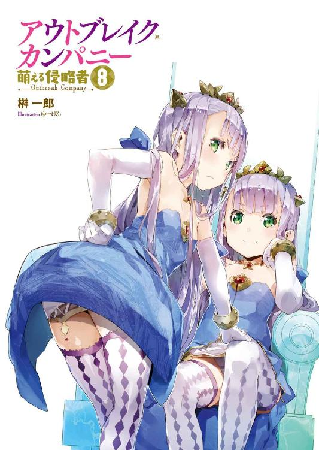
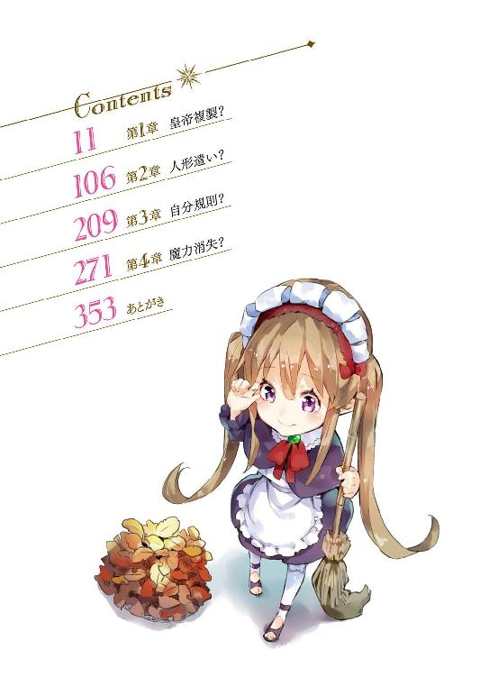
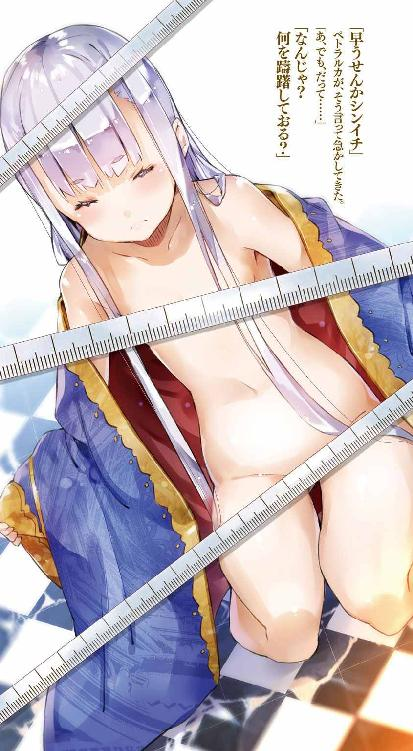
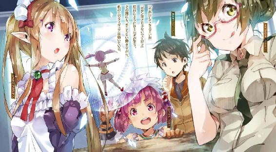
口絵・本文イラスト／ゆーげん
淡い闇の底を──必死に僕は走っていた。
がむしゃらに、無我夢中で、ただ走り続けていた。
現在位置はどこなのか、とか。自分が向かっているのがどっちの方角なのか、とか。そういうことはまるで分かっていない。本当に走っているだけなのだ。本当ならじっとしていた方が良いのかもしれない。だけど何もせずにじっとしているのも、怖かったのだ。
「......はあっ......はあっ......」
とはいえ僕の体力なんて、もともと大したことはない。
限界はすぐに来た。疲労のせいで足がもつれ、転びそうになって──なんとか剝き出しの土壁に手をつくことで、これは避けられたのだけど、僕はとりあえず一度立ち止まることにした。
とたんに、全身から汗が噴き出てくる。
「はっ......はっ......ええと、ええと、ＲＸ‐78、ＲＸ‐78ＮＴ‐１、ＲＸ‐79、ＲＸ‐79Ｅｚ‐８、ＲＸ‐78ＧＰ01、ＲＸ‐78ＧＰ02Ａ、ＲＸ‐78ＧＰ03Ｓ、ＲＸ‐１７８Ｍｋ‐Ⅱ、ＭＳΖ‐００６、ＭＳΖ‐０１０、ＲＸ‐93ν、ＲＸ‐０、Ｆ91......！」
荒れる呼吸をなんとか落ち着かせようと、某宇宙世紀アニメの主役メカの型番を唱えたりしながら──僕は、今来た道を振り返った。
洞窟......いや坑道だ。
上下と左右は、圧倒的な質量の土や岩に閉ざされている。
もちろん──空なんか見えないし、窓もない。
一定の間隔で壁に並んでいる灯りのお陰で、辺りが完全な闇に閉ざされることはないけれど......この灯りというのが、豆電球程度のささやかなもので、絶対的な光量が少ない。なので前も後ろも、視界はぼんやりと闇に溶けて、見通しは非常に悪いのだ。
どこをどう走ってきたのか......すでに分からない。
ただ、途中に幾つもの分岐があったのは覚えている。
そう。この坑道は事実上の迷路だ。
つまり、僕は遭難しているわけで──
「蟻の巣の中に迷い込んだら、こんな感じなのかなあ」
現実逃避気味に、そんなことを考えてみたりして。
だけどむしろ自分の呟きが連想を呼び、灯りの届いていない闇の中から、今にも巨大な怪物サイズの蟻が飛び出してくるんじゃないか......ふとそんな考えが浮かんで、僕は思わず身を震わせた。通路一杯に立ち塞がるサイズの怪物が主人公を追いかけてくるとか、定番中の定番な場面じゃないか。
やめろ、ただでさえ一人で心細いのに変なことを考えるな。
落ち着くんだ加納慎一。
無駄に想像力の働いてしまう頭の中から、怖い想像を追い払え。
そうだ。何か楽しいことを考えよう。
よし。こんなときこそ妄想だ。
どうせ追いかけられるなら、美少女だ。
「待ってよ慎一君」なんて言いながら、美少女が僕を追いかけてくるんだ。
脳裏に思い描いてみるとすんなりいった。自慢じゃないが、日頃から鍛えている僕の妄想力は半端ない。
僕に駆け寄ってきた美少女は『もう離さない♪』とか言いながらこちらの手を握ってくるんだ。ぎゅっと。いい感じだ。恥ずかしげに俯く姿がいじらしい。でもその可愛い顔がどんな表情を浮かべているのかが見えないのは、やっぱり良くない。
僕は、彼女の顔を覗き込もうとする。
そこで彼女は、後ろ手に隠し持っていた包丁を取り出し僕の胸に突き刺すと、顔を上げ、にっこり笑って『これでずっと一緒♪』なんて言って──
「......って違う！」
思わず僕は、暴走する己の妄想力に突っ込んでいた。
ヤンデレルートに突入してどうする。
「まあ......ここにこうしていてもしょうがないよな」
呟いて僕は、一つ大きく深呼吸すると──また先の見えない道を進み始めた。
前述の通り、迷った以上は、じっとしてて、誰かに見つけてもらう方が良いのだろうけど......それならそれで、もう少し広い場所の方が気が休まる。とりあえず坑道の真ん中ではなくて、どこかそれ以外の空間に出るまで、歩いてみることにしたのだ。
「............」
まっすぐ進んだり。適当なところで曲がったり。
なんとなく勘に頼って進んでいると──前方の闇が、わずかに溶けているのが見えた。
灯りだ。それも壁に設けられた必要最低限のものではなくて、どこか広範囲を照らしている強い光が、坑道まで漏れてきているのだ。
「やった！ 出口だ！」
思わずそう叫んで僕は駆け出す。
まあ実際にそれが『出口』──つまり地上に通じているかどうかは、分からない。だけど、少なくともこの息苦しい坑道から出ることができれば、かなり気持ちの上では楽になる。
僕は安堵と歓喜に頰を緩めながら、勢いよく光の中に飛び出す。
そして──
「うっ......」
僕が思っていた以上に光は強いものだったようだ。
暗闇に慣れていた僕の目が、眩む。
手を額にかざして目を守り、光量に慣れるのを待つこと──数秒。
「へっ......？」
呆然と間の抜けた声をもらす僕。
目の前に怪物がいた。
巨大な──異形。
まるで鋼の板を折り重ねたかのような──鎧の如き質感を示す鈍色の表皮。胴体は小型トラックほどもあり、やたらに重量感のあるそれを、太く頑健そうな二本の後足と、やや細く短いが鋭い爪を備えた前足が、支えている。
さらに背中に備わっているのは──折り畳まれた翼だ。
首は長く、その先についた顔もまた、胴体と同様に硬質の皮膚に覆われている。その頭部の中心、やたらに大きく長く裂けた口は、ワニを想わせる。
全身から漂う威圧感が半端ない。
ただそこにいるだけで──岩のようにある、それだけで、見る者を威嚇する。
「こ......」
しかも、絶句する僕を前に、それは──動き出した。
大きく身じろぎすると、悠然と、その長い首を蛇のように持ち上げる。
そして──
「いた！」
「ひょあっ!?」
突然、後ろから聞こえてきた──それも場違いなほどに明るい声に驚かされ、僕の口から悲鳴じみた声が漏れた。
「先生──捜しましたよ！」
慌てて振り返る僕──その背後から近づいてくるのは、小柄な女の子だった。
一瞬、幼児か？ と見紛うくらいに背が低い。
彼女の顔に僕は見覚えがあった。
というか、毎日顔をあわせている。
僕の生徒だ。
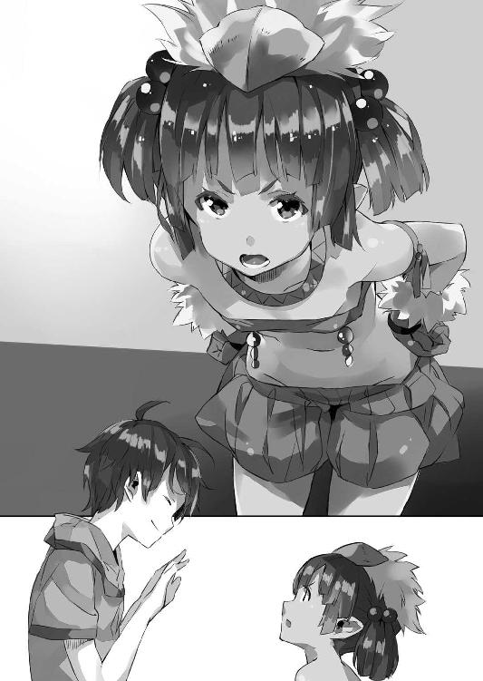
「先生──」
少女が僕の顔を見上げながら言う。
「勝手に歩き回っちゃ駄目って言ったじゃないですか」
ぷっと頰を膨らませてそう言う顔が、これまた幼くて激烈に可愛い。
おかっぱな感じで短めに切り揃えた髪を、さらに左右の耳の上でそれぞれ、髪飾りで束ねているのだけれど、これもまたよく似合っている。
本人は見るからに華奢な印象なんだけど、手足のグローブとブーツが妙にゴツくて、あちこちに毛皮なんかもついているせいで、こう──『蛮族の戦士』みたいな格好だ。前に長柄戦斧を持ってるのを見たことがあるけど......この細腕で軽々と大型の凶器を振り回す姿は、漫画やアニメではお馴染みとはいえ、実際に目にするとすごいシュールだった。
「......あ。お嬢」
と異形の怪物が言った。
いや......違う。
よく見ればそれは、人工物だ。
つまり......怪物の姿を模しているだけで、可動構造を備えた巨大な像なのである。
フェイク・ドラゴン。通称〈フェイドラ〉。
魔法で動かす偽物の竜。
工作物に関しては凝り性のドワーフ達が創り上げてしまった、いわばロボットだ。
以前にも僕は見たことがある代物だけど──あれ？ なんか細部が違うような。
僕が記憶の中のフェイドラと目の前のそれを比較して首を傾げていると......
「お嬢って言うな」
と少し顔をしかめて少女が言った。
少女の名はロミルダ──ロミルダ・ガルドという。
僕を先生と呼んでいることから分かる通り、僕にとっては生徒で......そしてこの世界に存在する『亜人種』の一種、ドワーフ族の娘だ。彼女の実家であるガルド家は、ドワーフ達の中では名家にあたるらしく、つまりはその格好に反して『お嬢様』なのだ、彼女は。
ちなみに何故か今の彼女は、左手に鳥籠を提げている。
中では小さな白い鳥がちょこんと止まり木の上に止まっていた。
「へい、すいやせん」
とフェイドラの背後から顔を出したのは、ドワーフの男だった。
総じてドワーフは背が低いけど、幼女っぽい外見の女性に比べて、男性は逆に少年でも髭を生やしておっさんぽいのが特徴だ。お陰で、年齢が読みにくい。この男も少年なのか中年なのかぱっと見には分かり難い。
「それよりも先生──」
ロミルダは腰に手を当てて僕の方に向き直った。
「すごく捜したんですからね。うちの地下工房は結構広いんで、初心者が来るとドワーフでもよく迷子になるんですよ」
「......はい。ごめんなさい」
腰に手を当てて叱ってくるロミルダに──僕としては、素直に謝るしかない。
いったいどっちが先生なのやら。情けない。
まあでも──この迷路じみた巨大な地下施設の中、見知った相手と再会できたことで、ようやく僕は、安堵の吐息をついたのだった。
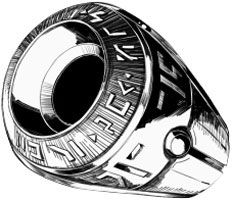
僕の名前は加納慎一。
どうかよく聞いてほしい。
異世界は狙われている！ 日本政府に！
............
ごめん。ちゃんと順を追って説明します。
すべての始まりは──日本の自殺の名所と呼ばれている富士の樹海で、奇妙な「穴」が発見されたことだった。そしてその奇妙な「穴」、超空間通路と学者達に呼ばれているそれは、あろうことか異世界に繫がっていたのだ。
それもファンタジー作品に出てくるような、世界に。
「穴」の『向こう側』では中世ヨーロッパ風の国家が存在し、絶対権力者として皇帝陛下が国を治めている──のは、まあいいとしても、そこにはドラゴンがいたり、科学の代わりに魔法が使われていたり、とても僕達の知る世界の延長としては捉え難い要素が、幾つもあった。
これは世紀の、いや、史上初の大発見だった。
だが日本政府は、これを世界に向けて公表するようなことはせず、最高機密事項として隠匿、そのうえで独自に調査を始めた。他国に、日本が異世界と繫がっていることを知られるのを嫌ったのだ。
何しろ異世界である。
そこには自分達の知らない生物がいて、文化があって、資源がある。これらを独占的に取り扱うことができれば──あわよくば現地の人間を騙くらかして横取りすることができれば、日本は大儲けできる。そう考えたお偉方は、異世界──超空間通路の先にあった国家、神聖エルダント帝国との交流を極秘裏に推進することにした。
ところが。
とりあえず『お近づき』にはなれたけど、それ以上の親密な仲になれない。
そもそも超空間通路は不安定なものらしく、小さくて、大量の物資を一度に運ぶことができない。またあまりに派手な物資の動きは、他国に察知されてしまう可能性がある。
なので人的にも物的にも細々とした交流にならざるを得ず、日本はまず、文化交流から両国の距離を縮めていく──神聖エルダント帝国側の信用を得る、という方法を採った。
文化交流といえば当然、伝統文化。
そう考えた日本政府は、陶器や反物とか、その手の『日本独自の』『格調高い』もろもろを持ち込みはしたものの、いまひとつ受けが悪い。気候風土から来る気質の違いなのか、エルダントの人々はこれにあまり興味を示さなかった。
焦った日本政府は、とにかくエルダント側が興味を示すものはないかと、伝統文化に限らず片っ端から試していったんだけど、その結果──反応が良かったのは、意外にも漫画やアニメやゲームといった、オタク系エンターテイメント作品群だったのだ。
すぐさま日本政府は、これを中心に据えて交流を進めることを決定。
しかし──これを取り仕切るのに、適切な人材がいない。
昔からこの手のエンタメ分野にお役人が嚙むと、とんちんかんな方向にお金を使うだけ使って、効果が上がらない、という事例が山ほどある。いわゆる箱物行政というやつがその代表格だ。さすがにその自覚があったのか、日本政府は、自分達の外側にその人材を求めた。
そう。オタク文化に詳しい民間人を連れてきて、統括者に据えることにした。
それも──機密に関わらせるという観点から『ある日突然、行方不明になっても、そう世間が騒いだりしない』ような人間を。
そうして選ばれたのが──僕だった。
当初、僕は『文化交流』のために選ばれた人材という、政府側の説明をなんの疑いもなく信じていた。日本と神聖エルダント帝国との架け橋になるべく、僕のオタク知識を活かして、異世界の人々にさまざまなエンタメ作品を広めていく──『オタクの伝道師』が僕なのだと。
だけどそれは......世間知らずの馬鹿ガキを、いいように使うための方便に過ぎなかった。
日本政府は文化で異世界を侵略するつもりだったのだ。
かつて幾つもの宗教が侵略に使われたのと同様、大量の物資を動かすことなく、大量の人員を用いることなく、経済的で、秘密裏に、進めることができる──『心』の侵略。日本のエンターテイメント作品群で異世界の人々を飼い慣らし、自分達の言うことを聞くように仕立て上げるための、それは静かな、侵略だった。
それを知った僕は、日本政府に対して反発した。
日本政府が、邪魔になった僕を排除するために特殊部隊を送ってきたり、僕の後釜に据えるべき人を追加で送ってきたり、まあいろいろとあったわけだけど......異世界で親しくなった人達の協力もあり、僕は、なんとかもろもろの揉め事を切り抜けて、現在に至る。
時折、日本が──日本での生活が恋しく感じることもあるけれど。
それでも僕は、なんだかんだで元気に、今日も『侵略者』ではなく『伝道師』の自覚を以て、ばたばたとこの異世界でオタク文化の布教活動に邁進しているのだった。
ロミルダに連れられて──僕は別室へとやってきた。
やはり地下工房の一部で四方は土と岩の壁に覆われているのだけれど、床面積はサッカーでもできそうなぐらいに広く、たくさんの小柄な人影──ドワーフ達が動き回っている姿を見ることができる。さきほどまで独りぼっちだったのが噓みたいに、僕の周囲は人々の働く雑然とした空気に満ちていた。
でもって......
「慎一君！」
僕達の姿に気付いて走り寄ってくる人影。
「心配したんだよ」
僕の目の前までやってくると腰に手を当ててそう言うのは──眼鏡の若い女性だった。
古賀沼美埜里さん。
改めて年齢を聞いたことはないけれど、たぶん、二十代前半だろう。十代の僕が言うのもなんだけど、あちらこちらに幼い丸みと柔らかさを残す童顔、それに加えて大きめの丸眼鏡のせいで、可愛い──とても可愛らしい。長い黒髪は職務の邪魔にならないようにと、お団子状にまとめられているのだけれど、それがまた実に、キュートな印象だ。
それでいて制服に包まれたその胸元は、とてもはっきりと存在を主張していて......この落差がなんというか、実に、萌える。
彼女は女性自衛官だ。
僕の護衛役を務めてくれている。
「びっくりしたよ、気付いたらいないから」
安堵半分、叱責半分、といった口調で美埜里さんが言う。
「すみません......」
とりあえず僕は言い訳などせず、素直に頭を下げておくことにする。
代わりに──
「どうせ『大規模地下施設』という状況そのものに興奮して、珍しい諸々をスマートフォンで写真に撮っている間に、夢中になってしまい、皆とはぐれてしまった──といったところでしょう？」
別の声が揶揄するかのように言う。
まるで逐一僕の様子を観察していたかのように、迷子になった経緯を言い当ててきたのは......長い黒髪と、ゴスロリ服が特徴の、見目麗しい美人さんだった。
この人の名は綾崎光流さん。
何というか、この人の周りだけ空気が違う。
もともと、日本政府が僕の後釜に据えようと送り込んできた人物で、当然、オタクなのだけど──コスプレが趣味というだけあって、常に、アニメや漫画やゲームの中からキャラクターが抜け出てきてそこにいるかのような、独特の雰囲気を帯びている。
二次元美少女キャラそのまんまというか、便所になんか絶対行きません──的な生活感や俗臭が根こそぎない感じ。
ただ一点、美少女キャラとしての問題点を挙げるとすれば、彼は──『男の娘』である、ということだろうか。要するに男性なのだ。
「......すみません」
まったくその通りなので僕としてはそう繰り返すしかない。
「まあ無事見つかってよかった。本当にロミルダ達もありがとう」
美埜里さんが微笑んで、ロミルダ達に礼を言う。
「いえ──」
美埜里さんに礼を言われ、ロミルダは少し慌てたように両手を振る。
「大したことはしてません。それに地下工房はかなり入り組んでいるので、はぐれたら迷子になるのは仕方ないことだと思います。ドワーフでも新参者は迷うことがありますし」
などと僕を庇ってくれるロミルダ。
ええ子や......先生、とっても嬉しいです。
などと僕が考えていると、ロミルダが手を振ったせいか──彼女が提げていた鳥籠の中で、小鳥が抗議するかのように小さく鳴いた。
「そういえば──ここに来てからずっと持ってるけど、それって何なの」
「それ？ ああ、これですか」
一瞬、何を問われているのか分からない、といった表情を浮かべてから、ロミルダはその鳥籠を掲げてみせた。
もちろん、学校での普段の彼女は、鳥籠なんか携帯していない。つまりわざわざ彼女はこの地下工房に入る際に、この鳥籠を用意して持ち歩いているということになるのだが。
「これ、ここに入るときは必ず持っていかないといけないんです。危ないところに近づいたら反応してくれるから」
「ああ......なるほど」
納得の表情で美埜里さんが頷く。
「なるほどって......」
「慎一君、聞いたことない？」
苦笑して美埜里さんが言う。
「昔、日本でも、炭鉱にカナリアを連れていっていたのよ。地下の坑道とかね。危険なガスが出てくれば、人間よりも先に小鳥の方が調子を崩すから、それを見て人は危険を察知してたんだって。いわば生きた毒ガス検知器なのよ」
「ははぁ......」
そういえばそんな話を聞いたことがあるような。
「この地下工房はもう一世紀以上も使われているので、まず危険はないんですけど──奥の方は未だ拡張工事していたりしますし、念のために持ち歩くようにって言われてます。工房の入り口近くに、小屋があったでしょう？ あれ、小鳥の繁殖場です」
「なるほど......」
「地下工房はドワーフにとって慣れ親しんだ職場ですけど、危険がないわけではありませんし。鉱物の採掘や加工に大規模な魔法使うこともありますけど、それが原因で事故が起こることもありますから、非常事態用の設備はあれこれ揃ってますよ」
とロミルダは笑う。
「魔法爆弾とか」
「爆弾!?」
むしろそれは、非常事態を作る原因の方になっちゃうのではないか。
坑道の掘り始めに、開けた場所で使うならともかく......洞窟の奥で爆弾とか使っちゃうと、生き埋めになる確率の方が高い気がするけど。
「暴走した精霊に、同じく精霊の力をぶつけて鎮静化させるんですよ」
「......ひょっとして、爆風消火とかと同じ理屈か......」
僕達の世界でも、油田火災なんかでは、ちまちま水や消火剤を撒くのではなく、爆弾を使って火を消すことがある。爆風で火を吹き消すと同時に、可燃性蒸気を吹き飛ばし消火する、という方法だ。
「まあ、さすがに魔法爆弾を使うような事故は、うちでは起きたことありませんけど」
と肩を竦めるロミルダ。
「まあ備えあれば憂い無し、準備はしておくに越したことないだろうけどね」
「ですね」
「でもここ──本当に広いね」
僕は改めて自分が迷子になっていた坑道も含めて、この地下工房の規模を脳裏に思い描く。『工房』なんて言葉が使われているけど、たぶん、全体の規模としては一つの町にも匹敵するだろう。
ロミルダの言葉によると一世紀以上も使われていて、現在も拡張工事が続いているらしいけど......
「うちはマリノス最大の工房ですから」
と自慢げにロミルダが言う。
この地下工房の持ち主──というか、ここで働くドワーフ達の統括者、いわゆる『親方』が彼女のお父さんらしい。『うち』とはそういう意味だ。
「武器や兵器から、燭台とか食器みたいな日用品まで、一通り作ってますし」
「ははぁ......」
エルダント帝国の首都マリノス最大──という言い方をするってことは、規模こそここより小さいけど、他にも幾つかこんな地下工房があるってことか。
元々エルダント城も岩山をくりぬいて造られたっていうし、岩盤の層がこの辺りは厚いのかもしれない。
しかしすごいなこれは。
「それで──」
ロミルダは横手を向いて言った。
「先生に見てほしいものっていうのは、あれです」
そう。もともと僕達は、ロミルダに『見てほしいものがある』と請われてこの地下工房にやってきたのだ。
そしてこの広間の端、彼女が示す壁際に、その『見てほしいもの』が並んでいた。
異形の怪物の群れ。
その数──十体あまり。
僕がさきほど見たものと同じ──鈍色の鋼板を折り重ねて作られたかのような、見るからに硬く、重い巨体。四肢があり、頭があり、翼があり、尾があり......おおむね生き物を模してはいるけれど、生命としての柔軟さを感じさせない、その姿。
「この〈フェイドラ〉なんですけど」
とロミルダが言った。
〈フェイドラ〉──それは偽装ドラゴンの略称だ。
名前からも分かる通り、これらは、ドラゴンをモデルにドワーフ達が作った、実物大の模型だ。もともとは、この世界で映画の撮影をする際、ロミルダのお父さんに頼んで作ってもらったものだった。その当時は、ただ見た目だけドラゴンに似せた模型だったのだけれど──日本から持ち込まれた各種オタク作品に触発されたのか、誰が頼んだわけでもないのに、ロミルダとそれからエルフのロイクはその一体を魔法で動き、変形までしちゃうロボットに改造してしまったのだった。
だけど──
「ひょっとして、これ、全部？」
さきほど、別室で見た〈フェイドラ〉が動いたのを思い出しながら僕は問うた。
「はい！」
とロミルダが頷く。
どうやらこのずらりと並んだ〈フェイドラ〉──これらもすべて、ロボットとして作られているらしい。
「すごいね、こんなに」
もともと威圧的な姿形をしているフェイドラだけど、それが十体ばかり並んでいる姿は、壮観の一言だ。いや──むしろ未知の怪物の巣に迷い込んでしまったようにも思えて、ちょっと恐いくらいだった。
細部が違って見えたのも当然。
僕が以前、見たのは試作品で──こっちは量産型なのだ。
「改良したいんですけど、先生達の意見を聞きたくて」
「僕らの意見？」
すでに完成しているようにも見えるけど、いまさらどんな意見が必要なのやら。
「意見を出すのは構わないけれど──」
美埜里さんも若干、呆れ気味の口調で言った。
「こんなに作って、いったい、何に使うの？」
「量産して、軍用に使えないかって──父が」
「軍用って......つまり兵器？」
僕は目を丸くして問うた。
「実際、使えたでしょう」
「実際って──ああ、僕がバハイラムに拉致られたときの」
以前、僕が隣国のバハイラム王国に拉致された際、助けに来てくれたロミルダ達は、このフェイドラで、バハイラムの新型生物兵器──というかなんというか──傀儡竜と互角に戦っている。まあ最後の方は魔力吸い取られてへろへろになってしまい、美埜里さんの持ってきた対戦車ロケット砲でとどめを刺したんだけども。
それでも確かにこれは充分に戦闘兵器利用できる。
いや。戦闘に使わなくても、重機の代わりに使って塹壕掘りとか、物資の輸送とか、様々な使い方が考えられるわけで。そもそもロボットって、僕達の世界でも、汎用性の高さから注目されているものだしね。
「でも、あれってロイクと一緒だったからできたんじゃ？」
ドワーフは鉱物に働き掛ける魔法に秀でている。
なのでこの鋼の塊とでも言うべき〈フェイドラ〉も、彼らの魔法で自由自在に動かすことはできるのだけど──さすがに翼を備えていても、コレで空を飛んだり、軽やかに走り回ったりすることはできない。それには、エルフの得意とする風の魔法の補助が必要だ。
「それは──まあ」
と若干、目を逸らして頰を不満げに膨らませながらロミルダは言った。
「あの馬鹿で助平なストーカーエルフの助力があったことは否定しませんけど」
「......ロミルダも、こだわるね」
と僕は苦笑して言った。
「別に今はエルフとドワーフの対立に理由があるわけでもないんでしょ？」
ファンタジーのお約束通り......この異世界でも、エルフとドワーフは基本的に仲が悪いのだそうで。そうした対立構造は僕が教師を務めるオタク養成所、もとい学校にも持ち込まれていて、その典型例がそれぞれのリーダー格であるドワーフの『お嬢様』ロミルダと、そしてエルフの『お坊ちゃま』ロイクなのだ。
とにかくこの二人......よく喧嘩する。
ただ、二人一緒に〈フェイドラ〉を動かして僕を助けに来てくれたことからも分かるように、心底からいがみ合っているわけではないようで、最近は一緒にいる姿もちょくちょく見かけるようになってきた。
もともとエルフとドワーフの対立は、伝統的なもので──さらに言えば、人間を頂点とした中央集権国家体制が確立する前のものなのだとか。逆に言えば今のエルフとドワーフ、特にロミルダ達のような若い世代には、積極的に衝突せねばならない理由は特にない。
「私はエルフがどうこうというより、あの馬鹿が──」
と言いかけて──ロミルダは溜め息をついた。
「まあ、先生のおっしゃる通り、私達とエルフの諍いはもう伝統文化みたいなもんですけど。父も──この〈フェイドラ〉に関しては、エルフと協力して亜人種の地位向上に役立てられないかって言ってますし」
人間にも風の魔法や土の魔法は使えるけれど、やはり厳密には向き不向きというものがあって......〈フェイドラ〉を動かす場合のような、複雑で厳密な魔法の制御をしようとすると、やはりエルフとドワーフのコンビが適任なんだとか。
でもって現在、エルフもドワーフも『亜人種』という括りで、神聖エルダント帝国の国家体制では、人間よりも一段低い地位に置かれている。
もちろん、この身分差は絶対的なものではなく、彼らが地位を向上させる方法は幾つかある。
その一つで最も分かりやすいのが軍への参加で──何か功績をあげれば、人間と同等にまで取り立てられることも、あるらしい。
「それで、兵器か......」
兵器という単語自体は物騒だけれど......ドワーフ達が積極的に、地位向上を意識し始めたのは、良いことのように僕は思う。ドワーフとエルフ、二つの種族の仲が良くなるきっかけになるのなら、なおさらだ。
「まあ兵器っていっても、自衛のための戦力アピールっていうか──抑止力って意味なら、確かに〈フェイドラ〉って使えそうですしね」
「そうね」
と苦笑して頷くのは──抑止力の権化たる自衛官の美埜里さんである。
「それで──先生。何かご意見とか、あります？」
「意見ねえ......」
僕は〈フェイドラ〉を見上げながら、腕を組む。
「やっぱりロボ、機動兵器っていうなら、重装甲化が基本かな」
「あーまーど？」
「重装改とかそーゆー強化パーツ、追加パーツは必要だよ、第二クール用に！ あと中盤の中だるみに対するテコ入れとかに！」
「はぁ......」
いまひとつ分かってない様子で怪訝な表情を浮かべるロミルダ。
まあ、ロボットアニメは見ていても、第二クールがどうとか、スポンサーの玩具会社の要望による新型登場とか、そういう斜めからの見方は、まだしてないんだろう。
そもそも学校で見ているアニメや特撮のビデオは大半が販売用ＤＶＤで、ＣＭとか入ってないし、スポンサーの概念すら知らないかも。
「あるいはＭｋ‐Ⅱだね」
「まあくつう？」
「元の意匠を残しつつもより鋭角化した新型機！ 飛行形態に可変したりとかさ。もちろん、バーニアとかアポジモーターあちこち増やして、より高機動をアピール！」
「いや、先生、もともと〈フェイドラ〉は飛べますけど」
「あ。そうか」
「慎一君」
美埜里さんが溜め息混じりに言った。
「どうせならもう少し真面目に考えてあげたら？」
「......はい」
はいそうですね。
視聴者向けに、主人公メカのプラモデル売ってるわけじゃないんでした。
「でも一応、変形機構は付けようって話は出てるんです」
とロミルダが言った。
「前みたいに人型ででも戦えるように！」
「お！ いいねえ！」
やっぱり人型のロボットは男の浪漫だよね、うん。
「戦闘能力も上がるしね！」
飛行形態は高速移動のためのもの、人型形態でこそ、最大の戦闘能力を発揮するってのが可変メカのお約束だ。
しかし──
「それは、どうかしらねー」
冷めた口調で言う美埜里さん。
「一回目は、相手も驚いて変形が済むまで攻撃してこないかもしれないけど......分かっちゃったら、次は変形中を狙われるわよ」
「馬鹿な！ 変形中に手を出すのはお約束違反ですよ！」
「誰としてるのよそんな約束」
と美埜里さんが苦笑する。
「実際、目の前であんな無防備な状態になったら、狙ってくださいって言ってるようなものでしょ」
「駄目ですか......」
と肩を落とすロミルダ。
しかし──
「まあ、運用次第だとは思うけれどね。戦車なんかと同じように考えれば良いのよ。何も飛行形態で現場に急行して、敵の目の前で変形しなければ良いんじゃない？」
「あ、ああ、なるほど」
戦車だって、戦場から戦場に移動する際には自力で走るばかりではなくて、トレーラーに積み込んで移動することもある。あくまで戦車の──その無限軌道の本領は、不整地における走破性であって、整備された道路の上を走るなら、普通の車の方が何かと効率が良いのだ。
でまあ当然──戦車をトレーラーで運ぶ場合でも、わざわざ敵の目の前で荷台から降ろすわけじゃない。確かに使い方次第だ。
「まあそれ以前に、人型兵器の実用性が疑問だけども」
「それを言ったら身も蓋も......」
「兵器ってのは身も蓋もないもんなの」
と美埜里さん。
「人の似姿、神の似姿──その必然を求めるならば、それは人の心の中であるべき」
などと歌うように......妙に中二病っぽい物言いをするのは、それまで〈フェイドラ〉を眺めつつ、僕達の会話を黙って聞いていた光流さんだ。
相変わらず物言いが中二病臭いというか、回りくどい。
けど僕にはあまりない視点をこの人は持っていたりするので、侮れないのだ。
「どういうこと？」
「もともと、アニメや漫画の人型ロボは、発想として神像とか彫像の延長でしょう。神の形を人間に似せるのも、自分達の似姿を確固たる形で残したがるのも、人間の心理です」
芝居がかった仕草で両手を広げて光流さんが言う。
これまた、いちいち大仰というか回りくどい仕草と物言いなんだけど、まあそれがこの人の場合はよく似合っているのでこっちも突っ込みにくい。
「そしてユダヤ教のゴーレムに限らず、それは兵器としてみた場合、単純な破壊力や作業効率よりも、『人の姿をしたものが人よりも巨大なモノとして目の前に存在する』ということへの本能的な畏怖──威圧が、最大の効果であるわけで」
「ああ、なるほど」
と美埜里さんが頷いた。
「威圧効果、まさしく抑止力ね」
「ええと、よくわかんないです」
と僕が首を傾げると──光流さんが溜め息をついて言った。
「この世界の人達は、いきなり戦車とか見ても、私達ほどには、怖がったりはしないでしょ。私達はそれがどういう威力を持っているのか、知識として知っているから、怖いと思うわけで。でもそういうのとは別に、『人間ってのはこれくらい』って常識がこっちの世界では定着してるから、明らかにそれから逸脱した規模の人型──巨人がのしのしと歩いてくると、本能的な畏怖を覚えるはず。その戦闘能力がどうこう以前に、ね」
「あー......」
そういえば昔見たロボットアニメでそんな説明があったような。
人型をしているのは、見る者に与える心理的圧力を考慮して、とかなんとか。
「つまり軍事兵器っていうより、警察装備みたいな使い方した方が良いってことか」
実際に誰かを殺したり傷つけたりするんじゃなくて、こう、突っ立ってるだけで、犯罪抑止とかに効果があるなら、それはすごく良い使われ方だと想う。
「......その理屈で言えば、もっと外見は『人間そのもの』の方が怖い？」
「それはそうかも」
と頷く光流さん。
「進撃とかしちゃう感じの？」
某漫画を思い出しながら言う僕。
やけにリアルな顔の巨人が家の向こう側からにょっと顔を出す場面とか、想像しただけで怖いというより、なんかこう、足元の現実が崩れていくような違和感がある。逆に言えば『ウルト●マン』とかが、詳細を大幅に省略、あるいは記号化した姿をしているのは、その辺を考慮してのことなのかもしれない。
「あそこまでいくと、怖いより気持ち悪いんでしょうけど」
と光流さん。
「私はまだこちらの魔法には詳しくないですが、さすがに、表情──目や唇の動きまで再現しようとすると、相当な手間でしょうね。逆にそこまでできないなら、下手に似せると『作り物』っぽくなっちゃって、威圧感減るかも」
「難しいなあ」
そんな話をしながら──もっとよく量産型〈フェイドラ〉を見るために、僕達は歩き出す。
ずらりと並べられた量産型〈フェイドラ〉は、まだ完成しているわけじゃないらしく、一体につき、二名から三名のドワーフがついて、何か作業をしている。
男のドワーフは年齢が分かり難いけど、どうも、作業しているドワーフは、子供から老人まで多種多様であるらしかった。勿論、一番多いのは働きざかり、といった成人男性風のドワーフなんだけど、職人達の中には、時折、明らかに幼女っぽい格好のドワーフが混じっているのも見える。
そんな中──
「............？」
僕はふと──あるドワーフに注意を引かれた。
いや。正確にはそのドワーフそのものではなくて、その作業にだ。
頭に被った黒い帽子の端から、短めに整えられた灰色の髪が見えている。一見すると男の子みたいだけど、顔立ちや体型からすれば、たぶん──女の子なのだろう。
ロミルダと同様に、露出度高めの衣装──短いタンクトップにホットパンツ、みたいな格好で、おへそ丸出しだ──だけど、やや浅黒い肌と、引き締まった四肢のおかげで、あんまり扇情的な雰囲気はない。
彼女の前には一体の〈フェイドラ〉が鎮座している。
そしてその〈フェイドラ〉の内外で土人形が動いているのが見えた。
ドワーフが魔法で作り出す傀儡だ。外に大きめのものが二体。そして装甲の隙間から見えるが──内側に一体。それらが同時に動いて作業を続けている。内側の一体はどうやら、〈フェイドラ〉の体内で、部品を組み立てているらしかった。
その〈フェイドラ〉の周りには、その女の子しかいない。
ということは──
（あの子が一人で三体の土人形を動かしてる？）
しかも大きさの異なる土人形に、それぞれ、まったく別の作業をやらせているのだ──同時に。
それって、ものすごく大変な作業なんじゃないの？
「何見てるんですか？」
いつの間にか立ち止まっていた僕に気が付いて、光流さんがそう声を掛けてきた。
「いやね、あれ......」
僕は少女と、少女が動かしている土人形を指差す。
それにつられて、光流さんも彼女の方を眺め──
「......ああ」
納得したように頷く。
「可愛いロリっ娘がいたから、視線で犯していたのですね」
「人聞きの悪いこと言うなっ！」
確かにあの女の子、可愛いけどさ！
顔立ちもだけど、こう、おへそ周りとかが──いやいやいやいやそうじゃなくて！
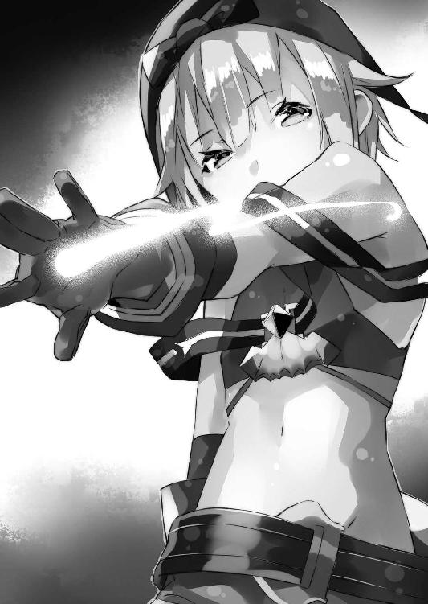
「あれ、あの子が三体同時に、土人形で〈フェイドラ〉の整備してるんだよ」
「......器用ですね」
さすがの光流さんも、素直に感心した表情を見せる。
僕の知る限り、土人形の制御は、一体でもそれなりに難しい。あれは操り人形そのもので、作って放っておけば勝手に作業してくれるわけではなく──逐一その動きをこちらで指示してやる必要があるらしいのだ。
つまり、二体の土人形を制御するというのは、右手と左手でまったく別の文字を書いたりするようなもので、普通の者には──たとえドワーフといえど、まずできない作業だ。それが三体となるといったい、どんなふうに操っているのか、想像も付かない。
「どうしました？」
立ち止まった僕達に、美埜里さんやロミルダも立ち止まって振り返ってくる。
「ねえロミルダ。土傀儡を三体同時に動かすのって──かなり難しいよね？」
確認しようと僕はロミルダにそう尋ねる。
突然の質問に、ロミルダはきょとんとしていたけれど──
「ああ......はい」
と僕達が見ていた少女に気付いて、彼女は頷いた。
「普通はできませんね。私も無理です。だから彼女──ロロン・セリオーズっていうんですけど、あの子は例外です。土人形を操るという点だけで言えばたぶん、天才ですね」
まるで自分のことのように得意げな口調でロミルダは言った。
「私と同じ歳なんですけど、熟練の土人形の使い手でも、三体同時に扱える者はほとんどいません。使えてもロロンみたいな精度が出ないんで、意味ないんですよ。しかも真面目で働き者なので──」
「へえ......」
この地下工房を取り仕切る親方の娘が、ここまで言うんだ。
やはりそのロロンって子は、相当な逸材なのだろう。
僕が感心していると──しかし、突然、野太い声が乱暴にそのロロンの名を呼んだ。
「おいロロン！」
見れば彼女のところに、男性のドワーフが大股で歩み寄っていた。
だがロロンは特に反応らしい反応を示さない。
「......ロロン！」
耳元で改めて怒鳴られて、ようやく、目が覚めたかのように、そのロロンというドワーフ少女は目を瞬かせた。
「はい......？」
「それは後回しにしてあっちをやれって言っただろうが！」
「いや......でも......今日の予定ではこれを......」
「朝に言っただろが、昨日からラドルの奴が病欠して、試作三番機の外装が遅れてるんだよ！ ガラハムの手伝いに回れ！」
「でも......」
「つべこべ言うな！ 多少は融通をきかせろつってんだよ！」
あくまで目の前の作業に拘泥するロロンに──苛立たしげな調子で、男のドワーフが怒鳴る。それでもしばらく、ロロンは何事かぶつぶつと言い訳していたみたいだけど......最後には、明らかに気乗りしない様子で、指示された別の〈フェイドラ〉の方へと歩いて行った。
「............」
その様子を呆然と見つめる僕達。
「えっと──その」
ロミルダが引き攣った笑顔で言った。
「......ふ、普段はすごいんです。今日はたまたま怒られたっていうか、その......」
「うん、まあ、大丈夫、彼女がすごいのは分かってる」
僕は頷いてみせた。
要するに土人形を操る能力はドワーフ達の中でもずば抜けて高いのだけど、協調性に欠けるといったところか。まあ一芸特化型の天才には、よくあるタイプみたいだけども。
「それで、ご意見の方なんですけど──」
「あ、うん」
ロミルダに促され──ロロンという少女のことは脇に置いて、僕達は再び工房内を歩きながら、量産型〈フェイドラ〉の改良点と、その有効な運用についての意見交換を始めた。
神聖エルダント帝国。
それが今、僕達の住んでいる国の正式名だ。
日本とは超空間通路と名付けられた「穴」──そういえば僕は、睡眠薬で眠らされている間にこちらに連れてこられたので、その「穴」がエルダント帝国のどこにあるのかは、知らない──で繫がっている。
僕が異世界初の総合エンタメ商社の総支配人として住んでいるのは、その首都・マリノス。
このマリノスの周縁部は自然が豊かで、なだらかな平野部のあちこちに、森だの小高い丘だのが点在している。でもってその中央に──神聖エルダント帝城を中心とした、城下町がある。
基本的なその景観は中世ヨーロッパ風。
大小さまざまな家屋が建ち並び、主要街路は石畳、日本で生まれ育って外国旅行もしたことのない僕からすれば、異国情緒満載の非日常的な風景だ。
そして──その非日常の極み。
それが、神聖エルダント帝城だった。
大きい。とにかくまず第一印象として巨大。建築物というより、山というかそういう地形じみた規模の巨大さなのだ。実際、岩山を魔法でくりぬいて作ったというその城は、今まで僕が肉眼で見てきたどんな建築物よりも大きくて、側に立っているだけでも圧倒されてしまう。
まして、それこそ巨大ロボ用かと見間違うぐらいのでっかい城門の扉を開き、中に入るとなると──もう何度となく来ているはずなのに、そのたびに緊張する。
そして......
「──以上です」
そのエルダント帝城の奥。
幾つかある謁見の間の一つ──つまりこの城の主たる皇帝陛下と会うための部屋に、僕達は参じていた。謁見の間としてはいちばん小さいのだそうだけど、それでも、十人二十人が集まって会議が開けてしまいそうな広間だ。
僕達三人は横一列に並んで立っている。
で──その正面、僕達から少し離れた場所に一段高くなっている場所があって、そこにしつらえられた玉座に皇帝陛下はお座りになっていた。
銀髪の愛らしい幼──もとい少女が。
髪や目の色はもちろん、顔の作りからして見るからに、『日本人とは違う遺伝子の系統ですよ』と主張しているかのようだ。端的に言えばファンタジーのお姫様そのまんまといった感じの、ものすごい美少女だ。その容姿はまるで名匠の手になる人形のように隙がなく、その奇跡じみた愛らしさに、ぎゅっと抱き締めたくなる人も男女問わず多いだろう。皇帝陛下にいきなりそんなことをしようものなら、首が──文字通りに──飛ぶかもしれないけども。
ペトラルカ・アン・エルダント三世皇帝陛下。
彼女は見た目こそ十代前半......下手するとランドセル背負ってても違和感ないぐらいなのだけれど、実は十六歳らしい。幼い自分の容姿をものすごく気にしていて、指摘するとものすごく怒る。
「うむ。ご苦労」
総合エンタメ商社──〈アミュテック〉社での活動と、それに付随した学校に関する定例報告をした僕に、ペトラルカは鷹揚な仕草で頷いてみせた。
まあ、ここまではやや形式張った報告。
ここからは──雑談めいた形に移行するのが常だった。
「あと何かあったかなぁ......あ、そうだ、この前ドワーフの地下工房に行ったんだよ。ロミルダのところ。ガルド工房だっけ」
「ほう......？」
興味深そうにペトラルカが頷いた。
「ガルド工房はマリノス最大の規模じゃからな。見応えもあるじゃろう。しかしまた、突然──何故じゃ？」
「ロミルダに、見てほしいものがあるって言われてさ。例の〈フェイドラ〉なんだけど、ドワーフ達で改良を加えるって話になってて」
「ふむ......？」
「今は量産試作をしている段階だってさ。もしこれが軍用に使えれば、ドワーフやエルフの新しい帝国への貢献の形になるんじゃないか──って」
「......なるほど」
頷いたのはペトラルカ......ではなく。
彼女の玉座の右隣に立っている青年だった。
長い銀髪はペトラルカと同じ、その美麗な顔立ちにもどこか似通った部分があって──二人の血の繫がりを感じさせる。兄妹と言われても納得するだろう。
美形の騎士──ガリウス・エン・コルドバル卿だ。
彼はペトラルカの親戚にあたり、帝国の重臣としての立場を持っている。騎士と言ってもそれは役職としてで、貴族階級の区別とは違う──彼の権能は軍全体を掌握していて、総司令官的な立ち位置にあるらしい。
しかも聞いたところによると、文武両道。
高貴な血筋で、権力あって、財力あって、頭は良くて、腕も立って、しかも美形。
どこの乙女ゲーのキャラだよって感じで、スペックのメガ盛り状態、落ちない女性はいないってぐらいの完璧キャラなんだけど......どうも彼自身は、そっちには興味がないらしく。
というか、まあぶっちゃけていえば、女よりも男が好き、な人らしく。
ときどき僕の方にも妙な視線を向けてくることがあって、気が抜けない。まあ悪い人ではないと思うんだけど、だからって彼と薔薇の花咲き乱れるよーな関係にはなりたくない。ＢＬ趣味のある美埜里さんは、ことある毎に焚き付けてくるんだけど、正直、勘弁してほしかった。
ともあれ......
「面白いかもしれん」
顎に指を添えて、ガリウスが考えるように小さく唸った。
「バハイラムの傀儡竜に対抗し得る戦力の確保は、我が軍の急務だからな。その点、くだんの〈フェイドラ〉は、実績──実戦による効果の証明もある」
ガリウスが言っているのは──先日のロミルダとの話にも出たけれど──僕がバハイラム王国に拉致された際、助けに来てくれたロミルダ達が、〈フェイドラ〉で傀儡竜と戦ったことを指している。
しかし──
「でも途中で動けなくなっちゃったけどね」
竜は半精霊性──つまり魔力を新陳代謝する生物だそうで。
その側で魔法を使うと、魔力はすべて吸い取られてしまい、ろくに効果が出ないのだとか。
そして当然、魔法で動かしている〈フェイドラ〉も、竜の至近距離にいれば、急速に魔力が尽きて動かなくなってしまう。これは実際に戦闘中そうなってしまったため、僕達は大変な目にあった。
しかし......
「牽制の役に立つだけでも大きい。一度〈フェイドラ〉が傀儡竜に勝った、という事実が重要なのだよ」
とガリウスは言った。
あ。やっぱり賢いなこの人。
別に正面からガチンコ勝負で勝てなくてもいいのだ。
バハイラム王国に対して『お前のところの新兵器とか怖くないぜ、こっちにはこれがあるんだからな！』という主張──ハッタリが利かせられれば、それは相手の軍事行動を鈍らせることが可能で、充分に意味があることなのだ。
もともとこういう駆け引き──心理戦に近い考え方は、あまりエルダントにはなかった概念なんだけど。なんだかんだで僕達と付き合う間に、ガリウスはガリウスで、こうした実利的な戦術・戦略思考ができるようになりつつある。
そして──
「ドワーフもなかなか考えますな」
そんなガリウスに同意するのは、ガリウスの反対側、ペトラルカの左隣に立っていたもう一人の男性......白髪と白髭の瘦せたお爺さん、ザハール宰相だった。
......こう言っちゃなんだけど。
単に『宰相』というと、こう王様の威を借る狐というか、実はラスボスというか、いろいろ陰謀巡らせるくせに、自分は他人の陰に隠れている狡猾な策士──という印象がある。
分かってるよ。ゲームやアニメや漫画の見すぎというか、偏見だ。
実際、ザハール宰相はむしろ、苦労の多い中間管理職、といった雰囲気で......僕の偏見を打ち砕いてくれる、良い反例だった。
政治や経済面でペトラルカを補佐していて、皇帝としてはまだ若い彼女の教育係も兼ねているらしく、ペトラルカにとって爺やみたいな存在だとか。
日本人と最初に出会った際も、徒らに武力で争うのではなく、まず話し合いに持ち込もうとしたのはこの人だったんだとか。そういう意味では、一見、ただの枯れ木じみたお爺さんなんだけど、この人もかなり頭は良い──理性的な人なのだろう。
「バハイラムだけでなく、国内の反体制派にも威嚇としての効果は充分ですな」
とザハール宰相は言った。
前述のように〈フェイドラ〉とはフェイク・ドラゴンの略──つまり見た目は、竜を模して作ってある。専用の「皮」──布製の外装を取り付けて、遠目に見れば、本物と見間違う人間も少なくないだろう。
そしてこの世界においては、大型の真竜──ドラゴンは誰もが認める最強の怪物だ。
細かい事情を知らない者ならば、〈フェイドラ〉の姿を見ただけで、恐怖のあまりに全力で逃げ出すか、さもなければ地に伏して、暴威が去るように祈り続けるだろう。
「ふうむ。〈フェイドラ〉は巨人の形にもなるのであったか？ ならば国内警備──いや城の警備として立たせておくだけでも......？」
ぶつぶつと呟きながら顎に手をやって思案の表情を示すガリウス。
「最近、いろいろと不審な動きも多いからな」
「......憂国士団とかね」
「......そうじゃ」
僕の呟きに、ペトラルカ達が苦い顔をした。
憂国士団とは、日本が持ち込むオタク文化をよく思っていない連中のことだ。
文字通りに国の行く末を憂うのはまあ、間違っていないのだけれど、彼らの困ったところはすぐ乱暴な手段に訴えようとするところだ。
「反体制派は必ずしも憂国士団だけではない。あのような事件を二度と起こさぬようにするためにも、治安維持の策を練らねばいかん......のじゃが」
溜め息を吐くペトラルカ。
「これがなかなか、な」
「やっぱり難しい？」
獅子身中の虫、という言葉があるけれど──国内の反政府勢力は、無辜の市民に紛れてしまうから厄介だ。敵軍ならば、そちらに向けて戦力を送り込めばこと足りるけれど、自国内に潜んだ敵は、まずそれを見つけ出し、他の国民と選り分けることから始めねばならない。
「特に魔法具が厄介じゃ」
ペトラルカは玉座の肘掛けに肘をつきながら言った。
「多少の不平不満を持っていても、反乱を企てるほどではない──そんな連中も、ある日突然、軍が使うような大きな威力の魔法兵器が目の前にぽんと置かれれば、あっさり宗旨替えをしかねん」
ああ。つまり『勝てない戦はしない』って人の前に『勝てると思えちゃうぐらいの強力な兵器を提示してみせる』だけで、煽ることができるって意味か。
「特に火炎系の魔法具は、分かりやすいしのう」
「〈駆逐する炎〉とか？」
それは前に憂国士団が学校を占拠した際、帝国を脅すために持ち込んだ魔法兵器だ。起動すると中に入っている炎の精霊が一気に飛び出して爆発を起こす──要するに大威力の爆弾のようなものだとか。
「使うにも特に能力や習熟を必要とせん」
「確かあれ、札を差し込んで呪文唱えたら爆発するんだよね」
「そうじゃ。起爆させる者は魔法使いでなくても良い。札を差し込み『大義の名の下に我この大威力を行使せん』と唱えるだけで──」
「陛下！」
慌てたようにザハール宰相が、ペトラルカを制する。
「軽々しく口になさっては......」
「さすがに地下の保管庫にまで妾の声が届くことはあるまいよ。万が一届いたとしても、札は抜いてあるのじゃろう？ 爆発なぞせん」
あっさりそう言うペトラルカ。
「ああいうのって城で保管されてるんだ？」
「この国でいちばん、守りが固い場所となると──な。じゃがそれにも限度がある」
「いずれにせよ」
ガリウスがまとめるように言った。
「国内にも問題は山積みだ。以前の憂国士団の一件で陛下が人質になってしまった結果、我も我もと調子に乗る連中も出てきてな」
「うわぁ......」
要するにあの事件は──皇帝陛下は絶対不可侵の神様じゃない、その気になれば人質にもとれるし、殺せる、ただの女の子だ、と国内の反政府勢力を焚き付けることになっちゃったらしいのだ。
「陛下の御身の安全についても、策を練らねばならんのだが、これがなかなか──」
「......いくつか案だけなら、出ているのですがね」
と唸るガリウスを一瞥してから、ザハール宰相が言った。
「そうなんですか？」
「いちばん有力なのは陛下の身代わりを作ることでして」
身代わり──つまり影武者か。
影武者といえば、戦国武将・武田信玄の影武者を題材にした映画が有名だけど、別に日本の戦国期に限った話でもなくて......いざというときの身代わりって、小説や映画の中ではよく見るネタだ。確かイエス・キリストも、ゴルゴタの丘で処刑されたのは弟のイスキリで、本人は日本の青森まで逃げ延びてきた、なんて伝説もあったりする。
「むしろ今まで身代わりはいなかったのですか？」
と光流さんが首を傾げて、不思議そうに尋ねる。
言われてみれば確かに。絶対権力者には、影武者とか、普通にいるのかと想っていたけど。
「今までに話は出ていたのだが、適任者が見つからなくてな」
とガリウスが答えた。
世の中には自分に似た人が三人はいるって言うけれど、まあそんな都合よく見つかるはずもないってことかな。まあペトラルカは他に類を見ないぐらいの美少女だし、そうそうそっくりさんは見つからないのかもしれない。
「それに......以前にエイガを作っただろう？」
「映画？ それが何か......？」
「あれのせいで、大々的に陛下のお顔は国民に知れ渡ることになった。そのため少し似ている程度では、すぐに別人とバレてしまう」
「あー......」
そうか。
情報の拡散が遅かったり劣化が激しかったりするような中世では、身代わり、影武者といっても、必ずしも本物そっくりである必要はなかったのだ。たとえば王様にせよ将軍にせよ、本人と直接会ったことがない人間の方が多く、顔を見たことがあったとしても、遠目に一度だけ、という場合も少なくなかったはずで。
しかし僕達が持ち込んだ──作った映画のせいで、大画面でペトラルカのアップを見ちゃった人間が大量に出ることになった。
あちゃあ。
ひょっとして影武者選びが難航しているのは、僕のせいもあるってこと？
「そういえば......バハイラムにも、ペトラルカのブロマイドあったよ。ブロマイドっていうか絵だけど」
「何......？」
ガリウスの眉根が寄った。
あれ？ これ言わない方がよかった......？
「......そうか」
頷くガリウスの顔は──暗い。
「バハイラムにまで流出しているか。いや。当然考えるべきだったな」
もともとあの絵は、エルダントの内部で、ペトラルカを慕う人達が描いて刷ったものらしいけど、広く庶民の間で流通しているってことは、当然、外国にも──敵国にも渡ってしまう可能性があるわけで。
この辺も何分、エルダント側としては初めてのことばかりで、さすがのガリウスやザハール宰相も、考えが及んでいなかったらしい。
「ただでさえ最近では、陛下の真似をする不届き者まで出ているというのに」
「何それ？ ペトラルカのコスプレってこと？」
ちらりと僕は光流さんの方を見てから言った。
「......なんですか？」
「いや、別に」
と僕はすっとぼける。
まあコスプレと言えば光流さん、という連想だっただけで、他意はない。さすがに光流さんがペトラルカのコスプレして歩いているとは僕にも思えない。背丈も違うし、顔の作りも違うから。
「こすぷれ？」
と怪訝そうに尋ねてくるガリウス。
ああ。そもそもエルダントの人間はコスプレという『遊び』を知らないんだ。演劇程度の娯楽はあるみたいなんだけど、演劇の一環ではなくて『誰かの格好そのものを真似て愉しむ』のは、文化として定着してない──いなかったらしい。
だから魔章指輪も、これを翻訳して相手に伝えてくれない。
この便利な魔法具も、双方に共通する概念がないと、上手く機能しないのだ。
「まあ、なんていうか、誰かと似たような格好をする、そのことそのものを愉しむ遊びです。たとえば──庶民が、騎士の格好に憧れて、形だけでもそれっぽく似せたものを着るとか」
「ああ。まさにその『こすぷれ』だ」
と頷くガリウス。
「今のところ、そこまで大きな実害はないが......な」
ガリウスが溜め息を吐いた。
ペトラルカを慕ってのことなので、不敬罪にも問いにくく、かといってペトラルカと似たような格好を──髪型やら衣装やら──をして歩いている者が何人もいると、それはそれで何かと紛らわしいだろう。
「......やっぱり僕のせい？」
もともとは、映画を撮って公開したことが原因なわけで。
しかし──
「そこまでは言わん」
冷や汗をかく僕に、けれどペトラルカは首を横に振ってくれた。
「とてもではないが、エイガをトっておった際に、こんな状況まで予測できるはずもない。そこまでシンイチ、我々は汝に全知全能を求めてはおらん──が」
ペトラルカは、わずかに身を乗り出してこう続けた。
「我らとしてもあまり経験のない状況でな。どうしても汝に期待してしまう」
「......というと？」
「何か妙案はないか？」
尋ねられて──しかし僕は首を捻った。
期待してくれるのは嬉しいんだけど......
「うーん？」
「まあ今すぐというわけではない」
と──ペトラルカは苦笑を浮かべて言った。
「じゃがもし、何か良い案を思いついたならば、即座に教えてほしい。我らには思いも付かないような、奇妙奇天烈な手を、汝は過去に何度も示してきたからな」
「それってひょっとして、褒めてくれてる？」
「詰られているように聞こえるのか？ 相変わらずひねくれておるな、シンイチは」
と少し頰を赤らめてペトラルカは言った。
ああ。本当に可愛いなあ──この皇帝陛下は。
期待されているということもあるけど、何より彼女の身の安全を図るため、というのならば僕としても、無い知恵を絞って頑張りたいと思う。
「分かりました。考えてみます」
「頼んだぞ」
頭を垂れて答える僕に、ペトラルカと──そして騎士ガリウス、ザハール宰相は揃って頷いた。
休み時間の教室は、賑やかな空気に満ちていた。
雑談を始める生徒、本を読む生徒、次の授業の準備を生真面目に始める生徒──皆がそれぞれの方法で時間を過ごしている。
僕は職員室に戻ることもなく、教壇の上で椅子に座ってぼんやりと彼らを眺めていた。
「ペトラルカそっくりの子......」
脳裏でロリ風味な皇帝陛下の姿を思い浮かべながら、教室の中を見回す。
長い銀髪と勝ち気そうな碧の瞳。柔らかそうな頰に桜色の唇。いかにもお姫様といった感じの整った目鼻立ちで、豪奢なティアラがとてもよく似合う......
「......そんな都合よくいるはずないよね」
僕は溜め息をついた。
「旦那様？」
横手からふと声が掛かる。
顔を上げるとそこには──僕付きのメイドさんが立っていた。
頭の左右、高い位置で括っている亜麻色の髪がまず印象に残る。次に目立つのは、優しげなその薄紫の大きな瞳だ。
ペトラルカとはまた別方向の美人さんだった。
動物に喩えた場合、皇帝陛下が血統書付きの、気性の激しい子猫だとすると......こちらは、怯えがちな子鹿だろうか。ハーフエルフということで差別的な扱いを受けていた期間が長いらしく、全体的に気弱というか、自信なさげな言動が多い。
ミュセル・フォアラン。
僕が最初に出会った異世界人であると同時に、普段からいろいろとお世話になっている──命まで助けてもらったことのある、大恩人だ。ミュセルにそれを言うと『お仕事ですから』と恥ずかしそうに目を伏せて笑うばかりだけれども。
「どうかなさいましたか？」
ミュセルは水差しから水を注いで僕に差し出しながら、そう問うてきた。
ちなみに普段、屋敷の中では当然のようにメイド服の彼女だけれど、ここは学校ということで外出用のワンピースを着用している。
「いや......ペトラルカにそっくりな子とかいないかなって」
「陛下に？」
きょとんとした表情で小首を傾げ、目を瞬かせるミュセル。
大きな瞳と、長い睫毛のおかげで、ただそれだけの仕草が、無垢な小鳥みたいで、すんごく可愛いんだけど──それはさておき。
「ミュセルは心当たりとかない？」
「いえ......」
「そっか」
「すみません、お役に立てなくて......」
とミュセルが目を伏せて肩を落とす。
「ああ、いや、知らなくて当たり前だから！ そもそもそんな簡単に見つからないからこそ、捜してるんだしね！」
見るからに落ち込んでます、といった風情のミュセルを前に、僕は慌ててそう言った。
「というか──」
若干、呆れ気味の口調で口を挟んできたのは、ミュセルとは反対側の位置に立っていた光流さんだった。
「学校に通っているのは、貴族や有力者、豪商などの子弟が大半でしょう？ そんな中に陛下のそっくりさんがいるのであれば、とっくに陛下やザハールさんが気付いているのではないですか？」
はい。おっしゃる通りです。
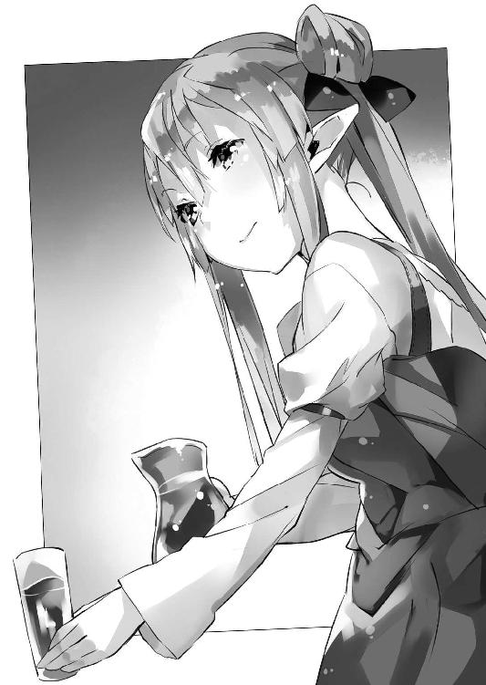
最終的には国民に身分の差など関係なく、均等な教育を施すのが僕のこの学校の目的だけど、今はまだお試し期間──実験的な意味合いも強く、入学しているのはどうしても貴族か富裕層に偏る。つまりは家柄的に皇帝陛下に近い位置にいる者達がほとんどで、ペトラルカに似た子がいるならば、それをザハール老やガリウスが知らないはずはないのだ。
それに──
「だいたい、慎一さん？」
目を細めて光流さんは言った。
「もし──万が一、単に見落とされていただけで、実際に生徒の中にそっくりな子がいたとして。貴方はその子を推薦するんですか？ 自分の生徒を、陛下の影武者──陛下の身代わりとして暗殺者やら反政府勢力に命を狙われる役目に？」
「......それもあるんだよね」
僕は溜め息をついた。
そうなのだ。
影武者というのは、何も本人の不調時に代わりに本人を演じるだけじゃない。本来の役目は、暗殺が懸念されるような危険な場に、本人に代わって立つことなのだ。
つまり......生徒の中からペトラルカのそっくりさんが見つかったとして、僕はその子に、こう問わねばならないのだ。
『皇帝陛下の身代わりに死ねる？』
うーん。
別に自分のことを立派な教職者だとは思わないけど、やっぱり、教え子にそういう危険な役目をさせるのには抵抗がある。かといってペトラルカの身の安全を確保する方法はやはり考えたいわけで。
「むしろ手当たり次第すべてがそっくりな人を捜すより、身長だけでも同じくらいの人を捜して、魔法で容姿を変える方が早いんじゃないですか？」
顎に指を添えて、光流さんは首を傾げる。
この人はこの人で、そういう仕草がすごく似合うというか、男と知らないで見ている限りは、実に萌えるというか──非常に厄介なんだけど、それはともかく。
「コスプレもそうです。靴で身長を合わせて、あとは化粧やウィッグでごまかしたり......強い印象を放つ部分さえ本人と揃えてしまえば、案外、細かい差異は気がつかないものだと思いますよ」
「なるほどね」
「というかそれ以前に」
光流さんはミュセルの方を振り返って言った。
「魔法で姿を変えちゃう──というのは？ いっそ幻を身代わりの上に重ねるとか」
「それは......」
光流さんからの視線を受けて、ミュセルは一瞬、考えるような素振りを見せたのだけど──彼女はすぐに緩く首を左右に振った。
「魔法で外見を変えることはできます。けれど、どの方向から見ても不自然じゃないようにする、となるとすごく面倒で難しいんです」
確かに魔法で幻像を誰かの上に被せることはできる。
しかし前後左右──全方位から見て破綻のない幻像を創り上げるのがまず難しい上に、手足や口元の動きまでも表現するとなると、恐ろしく難しいのだとか。
要するに──パソコンなんかでも、一枚の、止め絵を表示するのならまだそんなにマシンスペックを要求されないけど、３Ｄ映像みたいなのを作って、リアルタイムで『本物みたいに』動かすとなると、やたら処理容量喰われちゃう......のと同じか。
「ファンタジーみたいな世界だからって、なんでも魔法でちょちょいと解決──はできないよな。そりゃそうか」
実際には、魔法はこの世界では立派な技術体系で、できることとできないことにも、はっきりと線引きがあるのだ。
「魔法と化粧を併用してごまかす......？ いえ。これも無理ですね」
光流さんが首を振った。
魔法で粗が出そうなところを化粧でごまかすというのは、不可能ではないかもしれないけれど......どこにどう粗が出るのか、どの角度からどう見たら、どう見えるのか、そういうのを全部調べて、それに対応できる化粧をするとか、およそ現実的じゃない。
「うーん......」
駄目か。
しかしペトラルカの問題は、是が非でもなんとかしてあげたい。
何かで行き詰まったときは、意外なところに抜け道があるのに気付いていないだけ──そんなふうにラノベ作家の父が言っていたのを僕は思い出す。だからいったん、問題を棚上げして全然別のことをしていると、いきなり解決策が浮かぶ場合もあるんだとか。
何か発想の転換はできないものか。
そんなことを考えて、僕はまた、ぼんやりと教室の中を見回す。
すると──
「............」
教室のいちばん後ろ。
そこにエルフの少年とドワーフの少年が、机を挟んで向かい合っている。
そんな二人の間──机の上には、二体のフィギュアが立っていた。
ポーズ固定式の彫像ではない。関節部に自由度の高い可動構造を仕込んだアクション・フィギュア──ぶっちゃけ、ｆｉｇ●ａと呼ばれているシリーズだ。
オタク文化の一環として僕が持ち込んだ代物で──普段は図書室に保管されており、申請さえ出せば生徒達も、自由に借り出して遊べるようにしておいた。
片方はアニメ『みけみけ・おすわり』のヒロインの北一姫。
片方はゲーム『フェアリイ・フィールド』のヒロインのセリス。
まあ、ここまではオタクの眼力で瞬時に見抜いた僕なのだけど。
「............？」
一瞬──僕は自分の目を疑った。
机の上のアクション・フィギュアはどちらも自立している。
つまりエルフもドワーフも手を触れていない状態だ。なのに次の瞬間、二体の人形は、自ら動くと、がっぷり組み合っていた。
しかもさらに北一姫がセリスを投げ飛ばしたかと思うと、セリスは空中で一回転、若干ぎこちない動きながらも着地して、身構える。さらに北一姫の攻撃。これまた微妙に妙な動きだけれど、高々と右足を上げた回し蹴りがセリスに炸裂。セリスは持っていたライフルでこれを受け止め──
いやいやいや。ちょっと待て。
なんなのそれは。
呆然とする僕の視線の先で、二体のフィギュアは机の上を駆け回り、殴ったり殴られたり、蹴ったり蹴られたり、馬乗りになったりなられたりしていた。動きそのものは速いのだけど、どちらのフィギュアも、微妙に動きがおかしいのは同じだ。
まるで自らの意思で動いているのではなく、糸で操られている人形のようで──
「......魔法か!?」
怪奇現象の正体に僕は気付いた。
〈フェイドラ〉と同じだ。
ドワーフの金属──というか鉱物に反応して動かす魔法と、エルフの風の魔法、この二つが人形を動かしているのだ。実際にはフィギュアが自ら動いているのではなく、動かしている『手』が目に見えないだけの話なのだ。
しかし......
「すごいな」
呆然と僕は呟く。
ぎこちないのは確かだけれど、二体の人形が動き回る様は、見ていて面白かった。どうやらバトルものの漫画みたいに、机の上を闘技場に見立てて、人形達を戦わせているらしいのだけど──
「──待てよ」
僕の脳裏にある考えが浮かぶ。
そうだ。別に、どうしてもそっくりさんを捜す必要は、ないんだ。
「旦那様？」
「慎一さん？」
ミュセルと光流さんが顔を見合わせ──それから怪訝そうに僕の顔を覗き込んでくる。
「思いついた。こんなのどうかな？」
僕は満面のドヤ顔で、今思いついたばかりの案を、二人に披露したのだった。
でもって──翌日。
僕は美埜里さん、光流さんと共に、エルダント城の謁見の間にいた。
前日の晩に使いを出して、ペトラルカ達に謁見の申し込みをしておいたのだ。『身代わりの件、当方に妙案あり』という言葉を添えて。教室で思いついた案は、ミュセルや光流さんはもちろん、その後で話をした美埜里さんにも受けが良く、これはいけると考えた僕はさっそく、ペトラルカ達に報告することにしたのである。
そして──
「ふぃぎゅあ......？」
いつもの謁見の間で、いつもの玉座に座ったまま、ペトラルカは目を瞬かせた。
彼女の左右にザハール宰相と騎士ガリウスがいるのもいつもと同じだ。
「そう。フィギュア」
僕は大きく頷いてみせた。
「影武者──身代わりとして、ペトラルカそっくりの等身大フィギュアを......人形を作るのはどうかなって」
「人形？ しかしそれは」
眉をひそめて言うのはガリウスだ。
「遠目に立っているだけならごまかせるだろうが、動きもせずに突っ立っているだけでは、すぐに偽物とばれるぞ」
「もちろん、動くよ？」
と僕はにやりと得意げに笑う。
「なに？」
「人形といっても手足の関節に可動構造を組み込んだ、アクション・フィギュアだから、いろいろなポーズをとることができるんだ」
そもそもこのエルダントには彫像の類はあっても『自由にポーズを変えられる人形』そのものがないのだ。そういう発想がまずないのだろう。絵は動かないもの。像は動かないもの。それが当たり前だからこそ、彼らはまず、アニメにひどく驚いたのだ。
しかも──
「人形そのものは魔法で動かすんだ。〈フェイドラ〉みたいにね」
「............！」
驚いて顔を見合わせるガリウスとザハール。
「等身大の人形なら、いろいろ中に仕込めるだろうし。目を動かしたり、口元を動かしたりして、ちょっとした表情を付けたりすることも可能だと思う。で──ドワーフ達なら、そういう人形作れるんじゃないかな」
「それは......ふうむ、なるほど」
ペトラルカも思案顔で唸る。
身代わりは別の人間──そういう固定観念に縛られていたからこそ、彼らは、人形を用意するなんて、考えもしなかったのだろう。
僕らの世界じゃ──というか、漫画やアニメの世界じゃ、某世紀末救世主伝説から、某明治剣客浪漫譚まで、珍しくない手法だけど。そういやどっちもヒロインの人形だったな。
いや、それはさておき。
「それでも、残っちゃうような......いかにも人形っぽい部分は、化粧とかで誤魔化したりできないかな？ うちの光流さんなら、それなりに見せちゃうこともできると思う。ね？」
「......やってみなければ断言はできませんが、たぶん」
と僕の隣で光流さんも首を縦に振った。
「ドワーフ達が精密な土台を作ってくれるのであれば、それに手を加えてさらに陛下の御姿へ近づけることは可能だと思います。人間の化粧でも、頰の色、目許の色、そこに手を加えるだけでも、ぐっと精気が増した感じがしますから──」
「ドワーフの魔法は鉱物にしか効かないみたいだけど、それは人形の関節とか各所にいろいろ鉱物なり金具なりを仕込んでおけばいいと思うんだよね」
ちなみに教室で見たｆｉｇ●ａは、樹脂製だけど、関節部や四肢の末端に針金を巻き付けることで、ドワーフはこれを操っていたみたい。
「なるほど......」
顎に手を添えて唸ること──数秒。
やがてペトラルカは、心底、感心したように言った。
「さすがはシンイチじゃな。まさか昨日の今日で、そんな案を考えてくるとは」
「お褒めに与り光栄の極み」
褒められたのが、なんだか照れくさく──ちょっとおどけた口調で僕は答える。
「陛下に似た者を捜すより、その方が確実かもしれんな。複数用意しておけば、いざというときに使い回しもきく」
とガリウスも同意してくれた。
しかし複数って......それってペトラルカの人形を量産するってこと？
僕は脳裏で、全員同じペトラルカの顔をした軍隊が、飛行形態に変形したり、重装パーツから小型ミサイル乱射したりしながら、黙々と攻め寄せてくる光景を妄想して、密かに戦慄したりしたけど──まあそれはさておき。
「どうだろう、可能かな？」
「可能──じゃろうな」
とペトラルカは言った。
「〈フェイドラ〉を作るよりもたぶん、早かろう」
もちろん、やたらにでかい〈フェイドラ〉の方が、ただ製作するだけならば簡単なのだろうけど......ペトラルカ人形の方は別に空を飛んだり変形したり、非常用人力動力を搭載する必要がないわけで。
「......しかし」
ふとペトラルカが、眉をひそめる。
「動かすのは──人間と見紛うほどの仕草をさせるのは、難しいのではないか？」
「そうかな？」
「妾もドワーフの魔法にはそう詳しいわけではないが」
ペトラルカは首を傾げて何やら思い出すような表情を浮かべる。
「彼らの使う土傀儡、土人形は、もともと坑道を掘ったり、荷物を運んだりと、力仕事をするためのものでな。動きが非常に大雑把なのじゃ。細かい作業をするなら手でやった方が遥かに早い、と聞いたことがある」
「ははぁ......」
まあ確かに、生徒達がｆｉｇ●ａを動かしていたときは、ぎこちなく見えたというか、不自然に見えちゃっていたけれど。
「不可能とは言わんが、土人形の魔法に精通した、魔法の精度が高い使い手を捜さねばならんぞ。そちらの方が人形の製作よりも恐らく、難儀なはずじゃ」
「あ、それなんだけどね？」
僕は改めて得意満面の笑みを浮かべて言った。
この加納慎一、万事において手抜かり無し！ ──とまでは言わないけれど。
「実は心当たり、あるんだよね」
「......なんじゃと？」
驚くペトラルカ達に──僕は笑顔で親指を立ててみせた。
夕食までは、まだ時間がある。
屋敷へ帰ってきてから......僕は一度自分の部屋に戻って荷物を置くと、そのまま居間の方へと向かった。余った時間は中途半端で、自室で何か作業ができるでもなし──時間つぶしの相手をしてくれる誰かがいないか、と思ったのだ。
「............」
居間を覗き込むと、そこには二人の少女の姿があった。
いや。厳密に言えば少女が一人と、少女の格好をした少年が一人だけども。
一人は光流さんだ。
そしてもう一人は──エルビア・ハーナイマンだった。
この屋敷の同居人の一人である。
小麦色の肌や、伸びやかな四肢が、実に健康的な雰囲気の女の子だ。あんまり飾りっ気はない──というより僕が見る限り、皆無に近いけど、それがむしろこの子にはふさわしい感じだ。犬とか猫を着飾らせたり化粧したりすると、どこかおかしな見た目になるのと同様に──素のまま、自然のままが、いちばん完成されているというか。
エルビアはエルダントの基準でいえば『人間』ではない。
亜人種の一種──狼系の半獣人ウェアウルフだ。
まあ僕に言わせるとエルビアは狼というより犬──わんこだけども。
特にそのふわっふわの毛に覆われた耳とか、尻尾とか、ぴょこぴょこ動いているのを見るだけで、こっちがむずむずしてくる。思う存分に触って頰ずりしたい衝動に駆られるのだ。相手が本当に犬なら、まあ問題ないんだけど、エルビアの場合は女の子なので、僕も一生懸命自重しているけれどもね。
ともあれ......
「............」
エルビアは椅子に座り、画板に固定した紙に鉛筆を走らせていた。
時折、顔を上げて光流さんを凝視しては──また視線を紙の上に戻して、鉛筆を滑らせる。
エルビアは自称・放浪画家だ。
本来は隣国バハイラムの密偵なんだけど、実際に絵も描けて、腕前も大したものだ。本人も密偵としての仕事より絵を描いている方が楽しいらしくて、僕らもあんまり彼女の『本業』については気にしていない。
「............」
エルビアの向かいに座る光流さんは、動かない。
凍り付いているかのように──まるで人形であるかのように毛一筋動く様子もないのだ。特に何かポーズを極めているわけでもなく、両手を膝の上に揃えた自然な座り姿だけども、それでも呼吸さえしてないんじゃないかってぐらいの静止ぶりは、見事だった。
どうやらエルビアは彼女──もとい彼をモデルに絵を描いているらしい。
光流さんは無表情。
エルビアは真剣そのもの。
居間に満ちる空気は痛いくらいに張り詰めていて、僕は、思わず足を踏み入れるのを躊躇ったぐらいである。
しかし──
「......あら」
居間の入り口で立ち尽くしている僕に気付いたのは、光流さんの方が先だった。
「どうかしました？」
目と口だけを動かして光流さんが問うてくる。
「あ、いや、別に用事はないんだけど......入っていいのかなって」
「平気ですよ」
「あ、じゃあお邪魔します......」
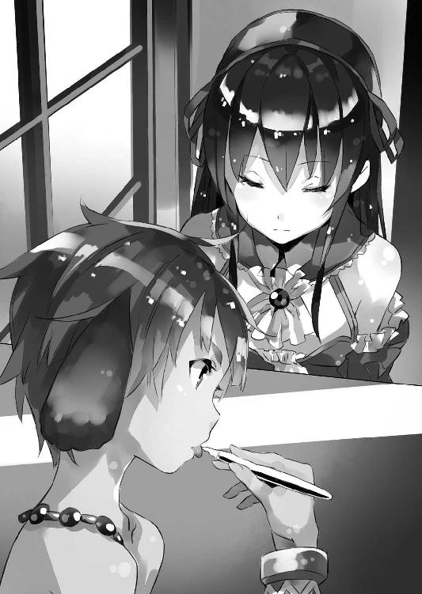
躊躇いながら僕は居間に入ると、光流さんの隣にあった椅子へと腰を下ろす。
その間も──エルビアは両目を画板の上の紙に向けたままで、僕には見向きもしなかった。ひたすら真剣な表情で、鉛筆を走らせている。いつものことだけどものすごい集中力である。絵を描いているときのエルビアは、声を掛けても反応しないことの方が多い。
ちなみにこの鉛筆は、日本から取り寄せて僕が彼女に与えたものだ。もともとエルビアは木炭で絵を描いていた。けれど彼女の画力に興味を持った僕が、専用の画材をいろいろ渡せばどうなるか、と試したところ──エルビアは急速に使い方を覚え、画力そのものも向上させている。さすがにペンタブレットやＣＧには、まだ馴染んでないみたいだけど。
「たぶんもうすぐ終わります」
「はあ......」
微笑む光流さん。僕は曖昧に頷くしかない。
しばらく居間には、それぞれの口元から漏れる微かな呼吸音と、エルビアが鉛筆を走らせる音だけが響いていたのだけれど──
「──完成っす！」
不意にエルビアが、顔を上げてそう宣言した。
その顔がもう満面の笑みというか、実に嬉しそうで、見ているこっちまで嬉しくなってくる。本当に絵を描くのが好きなんだろう。この瞬間が、いちばん、エルビアは可愛く見える。
それはさておき......
「ってシンイチ様!?」
ようやく僕の存在に気付いたのか、いまさらのようにエルビアは僕を見て目を丸くする。
本当に大した集中力だ。下手をすると、目の前に刃物を持った暴漢が立っていたり、災害で屋敷が崩れたりしても、まったく気づかないかもしれなくて──危ういといえば危ういのだけど、この没入ぶりはちょっと、羨ましくもある。
「い、いつの間にいたんすか!?」
「ついさっきね」
僕は苦笑して言った。
「光流さんを描いてたんだよね」
「はい。たまにはこう、誰かの絵を描きたかったっていうか」
「そこにちょうど私がいたから、名乗り出たんです」
確か......エルビアにとって絵を描くことは、半獣人としての狩猟本能をまぎらわすための行為でもある。注意深く対象を見て、感じて、己の中に取り込む、という意味で狩猟と似通った部分があるらしいのだ。だから、単に想像で絵を描くだけでなく、静物や人物の写生もしたくなるのだろう。
「感謝っす、ヒカル様」
「見せてもらって良いですか？」
「どぞ！」
両手を出した光流さんに、エルビアは笑顔で画板を渡す。
僕も隣から、画板を覗き込んだ。
「おお......」
思わず僕の口から声が漏れ出る。
紙の上には、白黒の光流さんがいた。スケッチというか──まるで写真みたいだ。もともとエルビアは写実的な表現に長けていたけれど、鉛筆という細かい制御がききやすい画材を得て、その精度がさらに上がった印象である。
「すごいね──エルビア」
「そ、そうっすか？ えへへへ」
頰を染めてエルビアが笑う。
照れくさいのか、鼻の下を指で擦る──そんな仕草がまた、この子にはよく似合う。
「本当、そっくりだ」
改めて僕は、まじまじと紙の上の『光流さん』を見つめる。
「こういうところも、フィギュア作りなんかと同じですよね」
僕と同じく絵を眺めていた光流さんが、不意に呟いた。
「どういうこと？」
「よりそれらしく似せるために、強調する──という話です。垂れ目の人はより垂れ目に、輪郭が丸い人は本物よりももう少し丸く。実物より多少誇張することで、むしろより印象は近くなる」
そう言って光流さんは、絵の中の自分を指差した。
「確かに写実的ですけど、むしろ細かい箇所は実物と違う──というかむしろ、ほんのわずかですが強調されています。エルビアが意識してやっているのかは分かりませんけど」
そう言って光流さんはスマートフォンを取り出すと、その画面に一枚の写真を表示させる。
着ている衣装は違うけれど、顔の向きはほぼエルビアの絵と同じだ。
さすがはレイヤー、自分のコスプレ写真が何枚もスマホの中に入っているらしい。
「なるほど......」
強調する技法のことは僕も知識として知っていたけど、僕は自分で絵を描くことはないから、実感としてよく分かっていなかった。しかしこうして並べてみると、写真とエルビアの絵の違いがよく分かる。
写真って撮る瞬間の角度や光の具合によって、むしろ被写体の人が、別人のような印象になっちゃうことがよくあるけど──確かにこの写真とエルビアの絵を見比べると、僕の中にある『光流さん』のイメージに近いのは、絵の方だ。
「まあエルビアは意識してないと思うけどね」
「なんすか？」
と──僕らの話がいまひとつ分かっていない様子で、首を傾げるエルビア。
まあ天才とかって、もともとそういうものなのかもしれない。
ともあれ......
「だから陛下の影武者である人形も、衣装や塗装、作りなんかも、本物と変えた方がいい部分、あると思うんです。普通の服を着せてもいいんですけど、それらしく見せたいのと、関節部分が隠れるようにしたいから、専用の衣装を作るべきか──と」
顎に指を添えて、光流さんが唸る。
「まあ関節部分は、仕上がりにもよりますけど。球体関節なら隠しておいた方が良いでしょうけど、そうでないなら、隠す方が不自然に見える場合もあります」
「衣装については僕よく分からないから、そこら辺は光流さんに任せてもいいかな？」
「構わないですよ。美埜里さんにも意見聞いてみます」
何しろコスプレが趣味の二人だ。服飾関係は下手に僕が話に加わるより、完全に任せきった方が、早く結果が出るだろう。
「後は化粧──というか、塗装の問題ですけど」
と光流さんが言う。
「基本はドワーフ達にお任せとして......陛下の容姿は幼めですし、それを強調するのが一番ですね。輪郭も少し丸くして、頰にも赤みを足して......」
「......それはまあ同意見だけど、ペトラルカの前では絶対に言わない方がいいよ」
ペトラルカは自分の幼い容姿についていろいろと不満があるらしい。相手の悪意のあるなしにかかわらず『幼い』と評されると激怒する。僕も初対面のときにそれで鉄拳制裁を喰らっているほどだ──いやまあ、顔を合わせたとたん、いきなり『幼女キタ──ッ!?』とか叫んじゃった僕も悪いんだけどさ。
「......まあいろいろ、美埜里さんや的場さんに相談しないとだね」
衣装の素材や化粧品はもちろんだけど、人形の表面素材──皮膚に関しても、できれば日本から取り寄せた方が良いんだろう。さすがに布だの木だの金属そのまんまの地肌だの、だったりすると塗装や化粧でごまかしきれないだろうし。
けれどそうなると的場甚三郎さん──僕達の総合エンタメ商社〈アミュテック〉と日本政府とを繫ぐ役目の人で、まあ典型的なお役人だ──にも話を通して手配してもらわないといけない。
そんなことを考えていると──
「そのまんまじゃダメなんすねえ......」
自分の絵と光流さんの写真を見比べながらしみじみと言うエルビア。
「そんな難しいこと考えたことなかったっす」
「不自然なくらいに強調した方が、それらしく見えることはあるんだよね」
「そういうもんすか」
「前に似たような話したじゃん」
「そうだったっすかね？」
てへへ──と恥ずかしそうに笑うエルビア。
ああもう、可愛いなあ、この獣っ娘は。
「絵を描くとき、そういうこと考えないのですか？」
「いえ、まったく」
尋ねる光流さんに、エルビアは首を左右に振る。
やっぱり理屈じゃなく『なんとなく』の感覚ですべてやっちゃってるらしい。
それはそれですごい才能だよなあ──と改めて僕が感心していると。
「あ、皆様こちらでしたか」
......と、鈴を転がすような可愛らしい声が聞こえてきた。
振り向くと、居間の入り口にメイド服姿のミュセルが立っている。
「ご夕食の準備ができましたので、お部屋に伺ったのですが......皆様いらっしゃらなかったので」
「ありがとう。すぐ行くよ」
僕は椅子から腰を上げ、光流さんとエルビアもそれに続く。
いろいろ考えなくちゃいけないことはあるけれど、まずは腹ごしらえだ。
腹が満ちてこそ思いつく案もあるだろう。
というわけで──僕達は、ミュセルの後に続き、揃って食堂へと向かった。
そんでもって、さらに翌日。
「........................」
どうしてこうなった。
広い部屋の真ん中に立ち──僕は現在の状況に激しく困惑中だった。
僕の目の前には一人の女の子が、こちらに背を向ける形で立っている。
彼女が非常な薄着で......僕の知識の中でいちばん近いものを選んで表現すれば、キャミソールとショーツみたいな、見るからに薄物、あちこち身体の線がそのまま見えちゃうような代物を身に着けただけの格好だ。
剝き出しの華奢な肩と白い足がひたすらに眩しい。
迂闊に触れれば穢れちゃうんじゃないかと思うぐらいに。
ペトラルカ・アン・エルダント三世陛下の御艶姿である。
ただ......
（これって──前に言ってた呪紋か）
よく見れば彼女の背中──その下の方、お尻のすぐ上辺りに、何か複雑な模様が入れ墨されているのが分かる。肌の色に近いのであまり目立たないけど、たぶん、お風呂に入ったりして上気すると、肌が赤らんでよりはっきりと見えちゃうだろう。
帝族は、常に暗殺やら謀殺やらの危険に晒されている。
剣や矢は警護の近衛騎士が防ぐことができても、大威力の魔法、長射程の魔法となると盾や鎧では防ぎきれない。それゆえに帝族の身体には、攻撃魔法を反射する『呪紋』が施されているという。
僕は以前、その効果を見たこともある。
だがその呪紋を直接、目にするのは初めてだった。
（やっぱり皇帝陛下......超重要人物なんだよなあ......）
いまさらながらに、そんなことを僕が考えていると。
「早うせんかシンイチ」
ペトラルカが、そう言って急かしてきた。
「あ、でも、だって......」
「なんじゃ？」
眉をひそめて肩越しに彼女はこちらを振り返り、睨んでくる。
「何を躊躇しておる？」
「どんなに気をつけても触っちゃうよ」
「だから細かいことは気にせずとも良いと言っておるではないか。それとも何か？ 妾に触れるのは嫌か？」
「そ、そうじゃなくて......」
むしろ迂闊に触っちゃうと歯止めがきかなくなるというか、もうハアハア言いながら全身撫で回しちゃいそうで危険というか。そんなことしたら首を刎ねられかねない。
「そうじゃなくて？」
不服そうに唇を尖らせて──さらに上半身をひねって僕を睨み上げてくるペトラルカ。
ああっ。その角度はまずいです皇帝陛下。
キャミソール（っぽい下着）の隙間から慎ましい胸が見えそうで見えない、微妙すぎる角度が僕の煩悩を刺激しまくりやがります。ぺたんこ系といえどもやはり女の子の胸だ。控えめながらも彼女の胸はほんの少しキャミソールを押し上げていて、だからこそ、少し肌と布地の間には隙間ができていて、その、そこからこう、見てはいけない秘密の場所までが今にも見えそうであああああああ。
「............ッ！」
思わず鼻を押さえて目を背ける僕。
無理矢理ペトラルカから外した視線の先には──呆れ顔の美埜里さんが立っていた。
「慎一君、気持ちは分かるんだけどね？ 陛下もわざわざ、お忙しい中、時間を作ってくれているんだし......」
「......はい。わかってまふ」
僕は頷いて、そっと鼻から手を離す。
大丈夫だ。鼻血は出てない。まだ。
それから僕は一度大きく深呼吸をした。
そうだ、落ち着け加納慎一。
部屋にいるのは僕だけじゃない。美埜里さんだっているし、光流さんだっているし、ペトラルカの近衛騎士──女性騎士も何人か壁際に並んでいる。変に意識してあたふたしてしまう方が彼女らの目には不自然に映るだろう。
そうだ。大丈夫。
万が一にも僕が我を忘れて、限りなく犯罪っぽい行為というか、すでに犯罪そのものって行為に及びそうになっても、誰かが止めてくれるさ。たぶん。
甚だ他人をあてにしすぎのような気もするが自分自身にそう言い聞かせると、僕は改めてペトラルカの方に手を伸ばした。
「じゃ......じゃあいくよ」
僕はペトラルカの華奢な身体に手を回す。
「し......失礼します......」
ドキドキ高鳴る心臓を自覚する。
ペトラルカと身体が触れるのは別に今回が初めてじゃない──彼女が僕の膝の上に乗ってきたことだってあるし、その体勢で本を読んで聞かせていると、どうしても剝き出しの肩に手が触れることは、何度かあったわけだけど。
それでも──下着姿のペトラルカを前にすると、非常にイケナイことをしているような気になってくる。
僕は慎重に、慎重に、ペトラルカの身体にそれをそっと押し当てた。
すなわち──光流さんから借りたメジャーを。
「えっと......」
ペトラルカの身体にメジャーを回して、僕は彼女の腰の数字を読み上げる。
美埜里さんはそれをメモ取りする係だ。まあ録音もしてるみたいだけど。光流さんは完全に傍観者の態で、一歩離れたところから僕らを眺めている。
............要するに。
僕達が何をしているのかというと、ペトラルカの身体測定なのだ。
もっと言えば、彼女の身体の各部の詳細な数値を計測しにきたのだ。
それもこれもペトラルカの影武者──いや身代わり人形を作るためである。
当然ながら精密な人形を作るためには、ペトラルカ本人の身体を細かく採寸する必要が出てくる。別にそれだけなら誰がやっても良いとは思うのだけど、計画の発案者は僕だということで、この採寸についても任せる、というお達しが来たのだった。
当然、僕の側に採寸作業を任せるというのは、あくまで現場監督的な意味というか──実際の作業は美埜里さんや光流さんがするものだと思っていた。美埜里さんも光流さんも衣装作りで採寸には慣れているはずだから。
しかし......
いざ僕達が謁見の間に案内されると、ペトラルカは近衛の女性騎士に手伝わせて服を脱ぎ、下着姿になって──挙げ句、僕に向かって『さあ測るが良い。遠慮は要らんぞ』などと言い出したのだ。
「......ねえペトラルカ」
「なんじゃ？」
「しつこいようだけど、やっぱり、これ、僕じゃなくて美埜里さんか、近衛騎士の人に頼んだ方がよくない......？」
採寸は採寸──別に疚しいことをしているわけでは、ないのだけれど。
それでも僕は男でペトラルカは女の子だ。薄布一枚だけを着て裸同然の格好を僕の前に晒しているのに、恥ずかしくないんだろうか。
そういえば前に映画を撮ったとき、着替えを覗いちゃったことがあるけど、あのときもペトラルカはあまり気にした様子がなかった。さきほども近衛騎士の女性に手伝わせていたけれど──やんごとなきお方は、一人で着替えることの方が少ないから、その辺の羞恥心は麻痺してるのかな。
でも僕の方は、とても平然とはしていられないわけで。
だいたい──測らなくちゃいけないのは身長だけじゃない。腕の長さ、足の長さ、胴回り、胸囲、その他もろもろ。女の子ってこういうの──特に胸囲なんてまんま胸の大きさなわけなんだけど──を男に知られるのって、嫌じゃないんだろうか。
それとも単に僕が男として意識されてないだけ？
それはそれで、非常に哀しいものがあるけど──
「汝もしつこいの」
また肩越しにこちらを振り返って、ペトラルカは言った。
「そんなに妾に触れるのが嫌か」
「だからそうじゃないってば」
「だったら良いではないか」
そう言って視線を前に戻すペトラルカ。
その顔はどこか楽しそうにも見える。ひょっとして焦る僕を見て面白がってるとか？
「──そうじゃシンイチ」
「何......？」
機械的に応じながら──心を無にしてペトラルカの身体を測る作業を続ける僕。
「身代わりを動かす魔法使いが見つかったときじゃがな。その者の教育係も、汝に任せるぞ。良いな？」
「教育係？」
「妾らしく動かすためには、それなりに練習も必要じゃろう。その指導を汝に任せると言っておるのじゃ」
「僕に......？」
思わず僕は、美埜里さんと光流さんの顔を見る。
さすがに美埜里さんも光流さんも、少なからず驚いているようだった。
「陛下──差し出がましいようですが、教育係は、もっと陛下を身近でご存じの方の方がよろしいのではないでしょうか？」
光流さんが尋ねる。
まったくの正論だ。
たとえば単純に付き合いの長さで言えば、ガリウスやザハールさんの方が何倍も長いわけで、ペトラルカの細かな仕草についても、よく知っているはずだ。
しかし──
「いや......」
ペトラルカは左右に首を振った。
長い銀髪が僕の目の前でさらさらと揺れる。
わお。鼻先に彼女の髪が触れて、くすぐったいやら、いい匂いやら。すでに僕の黒部ダムは決壊寸前だった。
「汝の、エイガ撮影のときの指導は的確じゃった。近すぎる者にはむしろ見えなくなることもある──ガリウスが言っておったわ。いずれにせよ、身内を騙すわけでもなし、むしろ『それっぽさ』に関してはシンイチよ、汝の方がよく分かっておる」
「映画って──」
光流さんが、指を顎に添えて首を傾げる。
「あれですよね。私が来る前に撮ったっていう......確か陛下が魔法少女の......」
「黙れ！」
突如として怒鳴るペトラルカ。
「それ以上アレについて口にすることは許さぬ」
「あ......はい」
突然のことに目を丸くして──気圧されたように頷く光流さん。
対するペトラルカは耳が真っ赤だ。
「ペトラルカ......落ち着いて」
僕は苦笑してペトラルカを宥める。
どうやらあの映画のことは、ペトラルカの中じゃまだ黒歴史らしい。もったいないと僕は思うけどな。可愛いのに。どこかたどたどしい演技も愛嬌だと思う。
「............とにかく」
ペトラルカは咳払いを一つすると、話題を元に戻した。
「妾は汝に任せたい」
「まあそこまで言うなら......」
僕としても引き受けざるを得ない。
「しばらくは学校の仕事も少し減らすなり、他の者に任せるなりして、汝はこちらに集中せい。そのための部屋も用意する」
「そこまで急ぎの案件だったの？」
驚いて僕は尋ねる。
しかし......
「いや、そうではない、そうではない──が」
ペトラルカがまた肩越しに僕の方を一瞥する。
「最近はどうも、その、シンイチ、汝は定例報告以外ではまず城にまで来んではないか」
「あー......まあ、そうだけど、もともと用もなく来て良い場所でもないでしょ？」
何しろお城である。
ペトラルカの家、であると同時に神聖エルダント帝国の政治的中枢、つまり日本で言えば首相官邸とか各種官庁とかが一緒になった国家施設そのものなわけで。友達の家にふらっと遊びに行く感覚で足を踏み入れて良い場所とも思えない。
しかし──
「用がなくても来い」
ぷいっ──と拗ねるような仕草で顔をまた前に戻して、ペトラルカは言った。
「そんな無茶な......」
「妾がなかなかそちらに出向けんのじゃから、汝がこちらに来るしかなかろうが」
「............あ」
今回の身代わり人形計画が立ち上がった遠因とも言える──憂国士団によるテロ。
あの一件でペトラルカは一度、人質になっている。憂国士団は、その気になればいつでも彼女を殺せる状態だった。そのことに帝国の重臣達は衝撃を受け、以後、ペトラルカは警備上の要請で、著しく外出を制限されている。
「少しはその......用などなくとも顔を見せい」
ペトラルカは──そして躊躇するかのように、しばらくの沈黙を間に挟んで。
「さ、寂しい......ではないか」
と言った。
「ペトラルカ......」
恥ずかしげに顔を伏せる彼女を見ながら──僕は心臓が苦しいほどに締め付けられるのを感じていた。なんだこの超可愛い絶対権力者!? 死ぬ、萌え死ぬ、萌え死ななくても思わず抱き締めちゃったりして首を刎ねられる！ やばい、鎮まれ僕の両腕！
......などと中二病っぽく、こみ上げる衝動を堪える僕。
まあでも、そうだよね。
僕は学校があるし。ペトラルカは皇帝陛下だし。どうしても会う時間は限られてきて、そこではどちらもまず、それぞれの立場が先に出てくるから、『友達』としての会話はもっと限られてしまう。
もしかして......この身体測定を僕にやらせたのも、同様の理由からか。
まさか、何か口実を作ってでも僕に会いたかったから？
............
あああああああ！ 甘酸っぱい！ なんだかよく分からないけど甘酸っぱいものが胸に、胸に、溢れてくる!? なんだこれ!?
この気持ちが、この気持ちこそが、萌え!?
──とかなんとか、ひどくいまさらなことを思ったりして。
「ごめんよ」
僕はペトラルカの背中に向けて言った。
「分かった。用なんかなくても遊びに来る」
「そ、それで良いのじゃ」
どんな表情を浮かべているのか、顔は見えないけれど──再び真っ赤に染まった彼女の耳を見つめながら、僕は自然と顔がほころぶのを感じていた。
その日──僕は学校に着くと、授業の準備よりも先に目当ての人物を捜した。
授業が始まる前の短い空き時間、教室のそこかしこで談笑している生徒達。
その中に、僕は目的の人物を見つけて声を掛けた。
「ごめんロミルダ。少しいいかな？」
「はい？」
名前を呼ばれて振り返るのは、小柄な少女──ロミルダだ。
まあ小柄と言っても僕達の基準の話で、ドワーフという種族の平均からすれば、そんなに小さいわけでもないみたいだけど、それはともかく。
「なんですか？」
友人達との話を中断して、僕の許に駆け寄ってくるロミルダ。
「ちょっとね。こっち」
僕はロミルダを廊下まで連れ出してから、周囲を見回す。
他に人の姿がないことを確認すると──声をひそめて僕は言った。
「ペトラルカの──皇帝陛下の人形を作ることになってさ」
皇帝陛下の身代わり人形を作りたいということ。
その人形の製作をドワーフ達に任せたいこと。
細かい部分は、はしょって......僕は、ごく手短に『ペトラルカ影武者作成計画』の概要をロミルダに伝えた。
「............」
突然の打診に、ロミルダは目を丸くした状態で沈黙中。
しかしあまり時間もないので、僕はそのまま続けた。
「正式な話はザハール宰相か騎士ガリウスから直々に、君のお父さん辺りに来ると思うけど。それで──ね」
ここからが本題だ。
「口が固くて、なおかつ、魔法で、上手くその人形を動かすことができるドワーフに心当たりないかな？ できれば女の子がいい。学校の生徒とかに適任者いないかな？」
「え......えっと......」
ロミルダは首をひねる。
どうやら咄嗟には条件に合う人物が思い浮かばないらしい。
僕は根気よく、さらに言葉を重ねた。
「たとえば──ほら、最近、教室でアクション・フィギュアを動かして、遊んでる子達がいるでしょ？」
「ええ、はい」
「あれと同じだよ。ただし──そうだな、たとえば、『プリピュア』のエンディングでやってるようなダンスを、そりゃもうアニメの画面から抜け出してきたの？ ってぐらいにそれっぽく、精密に、素早く、動かせるような子が良いんだよ」
「さすがにそれは......」
ロミルダが眉根を寄せた。
やはり思い浮かばないようだ。
まあここまでは予想通り。
僕も何人かがフィギュアを動かして遊んでいるのを見たことがあるけど、動きはどこかぎこちなくて、『まるで生きているかのような』動きとはほど遠かった。加えてペトラルカの身代わり人形を任せるとなると、当然、表情や指先など動かす場所は増えてくるから──小さなフィギュア一体でぎこちない動きになっているようじゃ、明らかに力量不足だ。
ペトラルカにも言った通り、僕にも心当たりは──腹案はあったのだけど、先にドワーフ達の事情に通じたロミルダに確認してから、と思ったのである。
「それで、ちょっとお願いがあるんだよね」
「なんでしょう？」
「この前地下工房、見学に行ったじゃない？ そのときすごく上手に土人形動かしてた子、いたよね、三体同時に──」
「ああ、ロロンですね！」
軽く両手を叩いてロミルダが頷く。
「そうそう。あの子って口固い？」
「固いと思います......っていうか」
ロミルダは少し思案の表情で首を傾げた。
「頑固っていうか、几帳面っていうか......言うなって言われたら、たぶん、殺されても言わないと思います」
「そ、そこまで？」
「とにかく真面目っていうか......違うかな。融通がきかないというか」
「うーん？」
偏屈ってことだろうか。
そんなふうには見えなかったけどな。
「でも確かに──ロロンなら先生のおっしゃる条件には合致しますね。作業場の土人形以外を動かしてるのは、見たことないですけど......」
「三体同時に動かせるってことは、一体だけに集中したら、相当細かい動きまで扱えるってことにならないかな？」
「それは──確かに」
ロミルダは頷いた。
「確かに彼女なら『プリピュア』のダンス、完全に再現できるかもしれません！」
そう言う彼女は、とても嬉しそうだ。
知り合いが皇帝陛下の身の安全を図る重要な仕事に抜擢されるかもしれない──そう思うと喜ばしいのだろう。上手くいけば〈フェイドラ〉の量産以上に、ドワーフの地位向上にも役立つかもしれないわけだし。
いずれにせよ......僕の見立ては正しかったらしい。
「今度、彼女をうちの屋敷に連れてきてくれない？」
「ロロンを、先生のお屋敷に？」
「うん」
「......先生、まさか」
ロミルダは何かに気付いた様子で眉をひそめて僕の顔を見上げてくる。
「え？ なに？」
「さらにハーレムの拡充を？」
「するかッ！ 人聞きの悪いこと言うな！」
思わず怒鳴る僕。
教室から『何事か？』といった様子で生徒数名が顔を出してこちらを見てくる。僕は思わず腰を曲げて──話が漏れないよう、ロミルダの耳元で囁いた。
「この話の流れで、何をどうしたらそうなるんだよ」
「だってハーレムは男の浪漫って。定番ネタだって」
とロミルダ。
そりゃまあ男の浪漫といえば浪漫かもしれないけど！ てか誰に聞いたのそんなこと！
「リアルで自覚的にやったらただのヤな奴だよそれって！」
「でもミノリ先生とミュセル先生とエルビアさんを側に侍らせてるって......」
「いや確かに同じ屋敷に住んでるけど！」
美埜里さんは僕の護衛だし、ミュセルはメイドさんだし、エルビアに関してもあくまで〈アミュテック〉社のお抱え絵師であって──少なくとも僕の愛人とかじゃない。っていうか実際に手を出してて言われるのならともかく、潔白の身でそんなふうに思われるとか、心外の極みだ。ものすごく損した気分にすらなる。言われ損というか。
「エルビアさんまでイケる口なら、ドワーフも──」
「別にエルフだってドワーフだって充分萌えられるけど、それとコレとは別！」
ちなみに、ドワーフもわりと正統派なファンタジー作品だと、女性まで髭面でおっさん臭い顔立ちの種族として描かれている場合があるけど──少なくとも、この世界はそうじゃない。むしろエルフと同じ、精霊と親和性の高い妖精の血脈だからか、単に最盛期（＝若い時間）が長い印象だ。
「あれ？ じゃあ違うんですか？」
「違うよ！」
というか僕ってそんなふうに見えてるの!?
生徒達にもそんなふうに見られてるの？
きわめて残念な周囲の認識に、僕がとりあえず遺憾の意を表明しようとしたそのとき──鐘が鳴った。授業の時間だ。
教室に戻らなければ。
それこそロミルダと二人っきりで廊下にいたら、あらぬ疑いをかけられかねない。
「と──とにかく、今の件、よろしくね。あと、繰り返すけど、この件に関しては絶対に秘密厳守で」
「はい！」
ロミルダがしっかり頷いたのを確認すると──僕は彼女と共に教室へ戻った。
数日後──本格的にペトラルカの等身大人形作りが始まることになった。
場所は、僕達の屋敷だ。
ドワーフ達の地下工房の方が、道具や設備も揃っていて利便性が高いのだろうけど、規模が大きすぎて出入りする者の数も多く、機密保持に向かない。また計画全体の指揮を僕がとるということになっているから、僕達の屋敷で進めた方が、何かと面倒がなくて良い、という理由からだ。
まあ僕達の屋敷は屋敷でエルビアというバハイラムの密偵がいるわけだけども。
彼女に関してはまあ......大丈夫だろう。これまで一緒に暮らしてきて信用しているということもあるけれど、もともとあまり諜報活動に熱心というわけでもないし、どこか間の抜けた行動も多いので、突然、母国への忠誠心に目覚めたとしても、何か動けばすぐにばれる。むしろ誰が密偵か分からない状態で、不特定多数の者が出入りする場所の方が、情報の管理という意味では危険が大きい。
まあそういうわけで──
「......しかしすごいなコレ」
僕は両手を腰に当ててソレを眺めた。
すなわち──屋敷の裏に建てられた作業場である。
「というかすごいのはブルークか」
「あっしが何か？」
と僕の隣に並んで尋ねてくるのは、作業場の製作者である。
ブルーク・ダーウェンは僕達の屋敷に勤めるリザードマンの庭師だ。
リザードマンというぐらいだから見た目はまんま二足歩行の大型蜥蜴である。しかも身長は僕なんかよりずっと高いし、尻尾の長さまで入れれば三メートルに達するかもしれない。
はっきり言って、暗闇とかで鉢合わせすると未だに怖い。
しかし見た目はともかく、中身は実に誠実で──しかも『熱い』リザードマン達の英雄だ。わりと彼らの社会でも顔がきくらしく、今回も、どこからか数名の仲間を連れてきて、三日もかからずに丸太で作業小屋を組み立ててしまった。
もちろん、簡単に雨風を避けられるだけの、文字通りの掘っ立て小屋なんだけど......それにしたって専門職でもないし、建築用の各種機材もなしで、となると驚異的だ。資材や機材を運び込みやすいように、両開きの大きな扉まで作られている。
「建物を一つ、三日とかけずに作っちゃうんだから」
「軍におりやしたからね」
とブルークは言った。
「穴掘りと普請は兵隊仕事の基礎で」
「あ......なるほど」
前線で拠点を素早く確保するのは、確かに軍事行動の基本かもしれない。
そんなことを考えていると──
「もうすぐドワーフ達が来るわよ」
屋敷の方から美埜里さんが声を掛けてきた。
彼女の隣には光流さんの姿もある。
「はい、すぐ行きます──ブルーク、ご苦労様、ありがとう」
僕はブルークに改めて礼を言ってから、美埜里さん達のところに駆け寄り、連れだって屋敷の玄関へと向かった。
「はてさて──上手くいきますかね」
「いまさら何、他人事みたいに言ってるんですか」
と光流さんが横目で僕を睨みながら言ってくる。
「貴方の発案した計画でしょう？」
「まあそうなんだけどね。実作業は僕じゃないからなんとも──」
「そこはもう、ドワーフ達の腕を信用するしかないでしょう」
と美埜里さんが言った。
「信用してないわけじゃないんですが。人形作りに限らず、初めてのことって、計画当初は想像もしてなかった失敗なり揉め事なりが起こるのがお約束じゃないですか」
「まあその辺は総指揮者の腕が問われるところよね」
「プレッシャーかけんでください」
と笑いながら言ってくる美埜里さんに顔をしかめてみせる。
「......でも、あれだよな。お約束っていえば、こう、漫画とかドラマだと、秘密を守るために、影武者完成したらドワーフ達が毒殺とかされちゃうんだよな。お前達は用済みだ、とか言って」
「後々のメンテナンス考えると、毒殺とか無意味ですけどね」
と肩を竦める光流さん。
そうこうしているうちに僕達は玄関に辿り着く。
「旦那様」
掛けられた声に振り向くと──ミュセルがこちらに向かって歩いてくるところだった。
彼女の後ろには数人のドワーフが続いているのが見えた。
「ガルド工房の方々がいらっしゃいました」
「案内ありがとう、ミュセル」
「いえ」
ミュセルは一礼して脇に退く。
僕達はドワーフの職人達と相対した。
ぱっと見──ずらりと並んでいる職人達は、殆どがドワーフの成人男性だ。
恐らくは大事な仕事ってことで、働き盛りの面子を寄越してくれたのだろう。
背は高くないんだけど、男性のドワーフ達はとにかくゴツい。筋肉もりもりで迂闊に握手とかしたらこっちの手が握り潰されそうな感じで、威圧感が半端ない。並んでいるとなおさらだ。しかめ面をしている者が多いのは、不機嫌とかじゃなくて、彼らは彼らで単に緊張しているのかもしれないけど──
「先生！」
そんなドワーフ達の列の後ろから聞き慣れた声がする。
おっさん達をかき分けるようにして、顔を出したのはロミルダだった。
「ありゃ？ ロミルダも？」
基本的な人選はドワーフ側に──というかロミルダの父親であるガルド工房の親方に任せていたのだけれど。ひょっとして彼女も等身大人形製作に携わるのだろうか？
「私は父に頼んで見学です」
「あ。そうなんだ」
「それと──連れてきましたよ」
そう言ってロミルダはさらに、誰かの手を引いて、ドワーフ達の前に出る。
「先生ご所望のロロンです」
灰色で短めの髪を、さらに黒い帽子でまとめた、ドワーフの女の子。
少し後ろに回ったロミルダに背中を押され、一歩前に出ながら──彼女は僕達に向けて頭を下げてきた。
「ロロン・セリオーズです」
ロロンの身長は、僕より頭一つ分小さかった。童顔で大きな目は、彼女を幼く見せていて、小学生といわれても信じてしまいそうだ。
でも確かロミルダと同じ歳なんだよな。──ってことは十代？
「お話は伺いました。ご指名ありがとうございます。よろしくお願いします」
「あ、うん、こちらこそ」
再度頭を下げられて、僕も思わず深々と会釈した。
なんというか......真面目そうな子だ。口調の端々にもお堅い雰囲気が漂っているというか、あらかじめ決められた定型句を丸暗記して喋っているかのような感じである。まあ、他のドワーフ達と同じく、緊張しているだけなのかもしれないけれど。
「君には別室で話があるから」
と僕は言った。
ペトラルカの人形作りとは別に、彼女には、人形にペトラルカらしく振る舞わせることを覚えてもらわなければならない。それには細かい打ち合わせも必要だろう。
「慎一君？ この子は──」
美埜里さんが怪訝そうに尋ねてくる。
あ──そうか。
打ち合わせたのは人形の製作に関することばかりで、その運用──実際に人形を動かす人員の選定については、美埜里さんには詳しい話をしてなかったっけ。
「彼女は──」
と僕が説明しようとすると、先にロミルダが口を挟んできた。
「ロロンは先生に見初められたんです！」
「......慎一君」
美埜里さんはどこか呆れたような口調で言った。
「ハーレムは男の甲斐性って言うけど、さすがに──」
「違います！」
僕は悲鳴じみた声でそう言った。
「ロミルダも誤解を招くような言い方しないで！」
「はぁい。ごめんなさい」
舌をちょろりと出して肩を竦めるロミルダ。
その姿を見て僕は確信した。わざとだ。絶対わざとだ！
ロミルダ、君は僕をそんなに性欲ダダ漏れの変態魔人だということにしたいのか！ 二次元嫁はたくさんいるけど、三次元に節操なく手を出すような真似はしてないからね!?
しかも──
「だって別室で話があるっていうから、てっきり......」
疑惑というより、期待の目で僕を見ながら言う美埜里さん。
というか変な『加納ハーレム』説を広めてるのって、美埜里さんじゃないのか!?
「とにかく──」
僕は咳払いを一つして、一同を見回す。
「ロロンは製作ではなくて、その後の運用担当として僕が選びました。部屋で細かい打ち合わせをします。光流さん、美埜里さん、一緒に来てください。他の皆は──ミュセル、小屋の方に案内して。裏にブルークがいるから」
「はい」
頷くミュセルにロミルダとドワーフ達を任せると──僕はロロンを連れて居間の方に向かった。
僕はロロンを椅子に座らせると、テーブルを挟んだ向かいに腰を下ろした。
「さて──」
ドワーフ達を案内しているミュセルの代わりに、お茶を淹れてくれるよう光流さんに頼むと──僕は改めてロロンの方に向き直った。
「わざわざ来てもらって悪いね」
「いえ」
背筋を正し両手を膝に置いて座るロロン。
その姿は、実に折り目正しいというか、彼女の生真面目さが全身に表れていた。
「えっとまず、改めて初めまして。加納慎一です」
「はい、お嬢からお話は伺ってます」
とロロンは僕の目をまっすぐ見て言った。
お嬢というのはたぶん──ロミルダのことだろう。彼女と歳は同じでもロロンは学生ではなくて工房で働く職人だ。ロミルダはロロンにとって傭い主の娘ということになる。
「オタク文化の伝道師。ガッコウの先生。ニッポンという国からいらっしゃったと」
「あ、そうなんだ」
これは自己紹介の手間が省けてありがたい。
そしてロロンは正面から僕を見つめ生真面目な表情のままこう続けた。
「それからソウウケで」
「......ちょっと待て」
「趣味は女の人を囲って身の回りに侍らせることで」
「待て待て待て待て！」
僕は思わず声を荒げてロロンの言葉を遮った。
ロミルダってばなんてことを!? いやさっきのやりとりで、なんだかよけいな噂流してんじゃないかなあとは思っていたけどさ！
「違う違う、全然違う！」
「そうよ。違うわ」
と横から美埜里さんも口添えしてくれる。
「慎一君は誘い受けよ」
「あんたも黙れ、腐人自衛官ッ！」
半泣きで僕は喚いた。
「違うん......ですか......？」
首を傾げてそう問うてくるロロン。
とたん、彼女の口調に戸惑うようなつっかえが生じていた。
そんなに驚くか？
というか君も少しは変じゃないの？ とか疑えよ......
「断じて違います」
「そう......ですか......」
ロロンはやはりどこか曖昧な様子で頷いた。
さきほどのかっちりした喋り方とは雲泥の差、別人かと思っちゃうくらいだ。
あ。でも最初に彼女を見たとき──仲間のドワーフに怒られていたときの彼女は、そういえばこんな反応だったような。とすると、こっちが『地』なのかな。
ともあれ──
「......ソウウケという言葉は......よく分からないのですが......サソイウケというのも同じ種類の何かなのでしょうか......？」
「余計なことは学習しなくていいから」
僕はそう言ってから強引に話を戻した。
「えっと──今回のことについて、ロミルダからだいたいの話は聞いてるんだよね？」
「はい」
「それでなんだけど......」
僕はあらかじめ居間に用意しておいたアクション・フィギュアを、仰向けの状態でテーブルの上に置いた。
ピンク色の短い、レオタードとスカートを組み合わせたような服を着ている、黄色い髪の女の子。『プリピュア』のピュアハートだ。
ロロンは僕が取り出したフィギュアを、驚きと好奇心が入り混じった表情で見つめている。ロロンは学校の生徒ではないから──こういったものについて、話に聞いたことぐらいはあるかもしれないけど、直に見るのはたぶん、初めてだろう。
そこに──
「どうぞ」
僕らの前に、光流さんがお茶の入ったカップを置く。
「ありがとう、光流さん」
「ありがとうございます」
顔を上げてロロンも光流さんにお礼を言い──
「............」
手を伸ばしたのでさっそく口を付けるのかと思ったら、何やら指先で押してカップを動かしている。角度か何かが気になったのだろうか。妙に几帳面な仕草だ。
何だ......？
「ええと。話続けていいかな？」
「はい」
こっくりと頷くロロン。
「君にこれを動かしてほしいんだ」
フィギュアを指差して僕はそう切り出した。
「それも──人間っぽく。できれば皇帝陛下そっくりに」
彼女が土人形の魔法に優れているのは僕も地下工房で目撃した通り。
土人形の魔法でフィギュアが動かせるのはこれまた教室で見た通り。
では──土人形の魔法に優れたロロンは、人間の等身大のフィギュアを、生き生きとまるで本物の人間のように動かすことはできるのか？
問題はそこだ。
もちろん──ただ一般行事で立たせておくだけとか、高台の上から民衆に向かって手を振らせる程度ならば、そう高度な魔法技能は必要ないだろう。そういう意味ではロロンなしでもある程度の『影武者』として等身大人形は使えるはずだ。
ロロンの技術を確認する前に、人形の製作に入ったのはこのためである。
だが僕は──できれば、それ以上の使い方ができないかと考えていた。
もし......互いに手を伸ばせば触れ合えるような距離で、何も知らない第三者が騙されてしまうぐらいに生々しく、本物っぽく人形を動かすことができれば、等身大人形の使用範囲は何倍にも拡大する。
たとえばそれは、上手く使えば皇帝としてのペトラルカの負担を、少し減らすことも可能なのではないか......僕はそんなふうに思ったのだ。
「できる？」
ちなみにこの人形はもともとプラスティック製の関節を備えている製品だけれど、今は敢えて各部に金属の部品を埋め込んである。ドワーフ達の魔法が反応しやすいように、という考え方からだ。
そして──
「......動かすことに関して問題はありません」
とロロンは即答した。
たぶん、とか、恐らく、とかそういう曖昧な言葉を差し挟まない断言だ。
口調も当初の、かっちり生真面目な感じのものに戻っている。
「私は三体の土人形を同時に動かすことができるので、単純に考えれば、一体だけを動かすのであれば、三倍の関節数を持った人形まで操ることができます。可動範囲の把握に時間は掛かるかもしれませんが」
「......すごいね」
人体の関節って確か百以上あるんじゃなかったっけ。数え方によっては二百とか三百とか言われてるみたいだし。もちろん、土人形の魔法も、その一つ一つに意識を向けて動かしているんじゃないとは思うけど......
「ただ......」
ロロンは眉根を寄せて、睨むようにアクション・フィギュアを見やる。
「具体的にどう動かせば良いのか......」
あ。口調がまた揺れてる。
「どうって......」
「動きといっても色々あります......歩く、座る、食べる......人間らしく......の定義も......皇帝陛下そっくりにという注文も......曖昧です......」
「あー......」
さすがの僕も、ロロンの言う意味が理解できた。
土人形はおおむね人型をしているから、動きが細かくなれば、より人間らしく見えるだろう、ぐらいに思っていたのだけれど。
ペトラルカも言っていたけれど、土人形は、その使われ方を見る限り、フォークリフトとか、パワーショベルとか、あるいは工場のラインに置かれた組み立て用のロボットハンドとかに相当していて、純然たる作業用なのだ。見た目なんか関係がない。人間の動きを参考にはしていても、模倣することは最初から考えられていない。だから、そもそもどう動かしたら人間っぽく見えるのか、なんてのはドワーフ達の魔法では考慮されてこなかった。
「うーん......？」
どうしたものか。
お手本を見せれば良いのだろうけど、ただ目の前で人間が動いてみせるだけでは、あんまり意味がないだろう。
人間でないものが人間のように動く実例、というか、お手本が必要だ。
そこまで考えて──
「あ。そっか」
僕はあることに思い至った。
「確か前にダウンロードして保存してあったはず」
僕はポケットからスマートフォンを取り出して、動画を保存しているフォルダを開く。
あった。その中から、僕はある動画ファイルを選んで再生した。
「こんな感じ──なんだけど。分かる？」
スマートフォンから流れ出す、軽快な旋律。
そして──
「これは......？」
画面に映し出される動画に、ロロンが目を丸くする。
それは、『プリピュア』のエンディング映像だった。
『プリピュア』の本編は普通のアニメだ。２Ｄの絵を繫いで、動かしている昔ながらの手法。対してエンディングだけは違う。３Ｄモデリングされたプリピュアのキャラクター達が、仮想空間で、歌に合わせて踊っている。
要するに人形が自ら踊っているのと同じだ。
けれど......このエンディングの映像、３Ｄキャラクターを動かすのに、単に動きを真似るだけじゃなく、素人は気付かないような、いろいろな工夫が凝らしてあるんだって話を聞いたことがある。
人間の動きは機械のモーターによるものとは異なる。筋繊維の束が寄り集まって、それらが伸び縮みをすることで、動きを作り出す。腕を上げ下げするだけでも、どんなふうに筋肉が作用して動きが作り出されるのかを理解したうえで──人形の機械的な関節をどんなふうに動かせば、それに似せることができるかを、徹底的に調べたのだとか。
だからこそ現実には存在していないはずのキャラクターが、まるで肉体を持っているかのように、ぬるぬると生々しく動く。それに加えて影とか髪の動きもやけにリアルだ。
「............」
ロロンは食い入るように『プリピュア』のエンディングに見入っていた。
やがて曲は終わり──キャラクター達が両手を挙げて微笑むところで動画も止まる。
それでも、しばらくロロンはスマートフォンから視線を外そうとはしなかったけど──
「この動きでいいんですね？」
視線はスマホの画面に向けたまま、彼女は念を押すように尋ねてきた。
「うん、まあこんな感じで」
「もう一度見せてくださいますか？」
「うんいいよ」
もう一度エンディングを再生して、僕はスマホをロロンに渡した。
「............」
ロロンは大きな紫色の目で、画面を凝視する。
舐めるように画面を見つめて、エンディングが終わると、僕が手を伸ばしてスマホを操作、また再生する。
それをさらに──五回ばかり繰り返し。
その後、ロロンは小さく頷くと、スマホを僕の方に押し出して返してきた。
「分かりました」
「分かったって──」
「動かせます」
ロロンははっきりそう言った。
迷いのない断言だ。
「そ──そう？ じゃあ動かしてみて」
「はい」
ロロンが両手をアクション・フィギュアにかざす。同時にぼそぼそと唇が小さく動くのが見えた──内容までは聞き取れないけど、たぶん、呪文詠唱をしているのだろう。
そして──
「──！」
不意に、アクション・フィギュアが動いた。
まずはぴょこんと立ち上がって、直立不動。
半回転して僕の方に向き直るアクション・フィギュア。
これは前にも教室で見た、機械的でぎこちない動きだった。
（あ。さすがにいきなりは無理か）
僕がそう思った瞬間──
「──え？」
唐突にアクション・フィギュアは踊り出した。
『プリピュア』のエンディングの動き、そのままに。
「うわっ......!?」
思わず感嘆の声を上げる僕。
まるでテーブルの上が舞台であるかのように、フィギュアはのびのびと、生き生きと、踊っていた。そのダンスはさきほどロロンに見せたエンディングのダンスとまったく同じで、まるで画面の中から抜け出してきたかのように、滑らかだった。
ぎこちなさなど、まるでない。
さすがに表情までは変わらないけれど、何度も先のエンディングの映像を見慣れていた僕は、フィギュアがいつものタイミングで微笑んでいるようにさえ見えた。
何これ。すごい。
僕が呆然とその踊りを見ていると──やがて、きっちりエンディングの曲の長さだけ踊りきったアクション・フィギュアは、まるで糸が切れたかのように、ぱたりとテーブルの上に倒れていた。
「こんな感じで、どうでしょうか？」
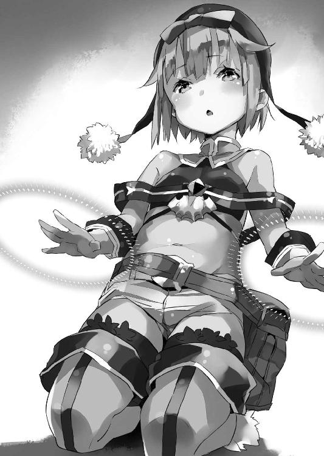
特に得意げというわけでもなく、むしろ淡々とした口調でそう問うてくるロロン。
彼女にしてみれば、できて当然のことをしてみせただけなのかもしれないけど──
「......すごいよ！」
拳を握りこんで僕は叫んだ。
想像以上だった。しかも動画を数回見ただけで完璧にダンスを踊らせている。振り付けを完全に覚えちゃったのだ。つまりそれは、単に魔法の技能が高いというだけでなく、彼女の記憶力の良さの証でもある。
「いや、本当、すごい、すごいよ、充分だ！」
「ご期待に添えたようで、良かったです」
興奮する僕に──しかしロロンはやっぱり、特に自慢するでも、謙遜するでもなく、淡々とした口調と表情でそう応じた。
等身大人形作りは始まった。
これを操る魔法使いも見つかった。
僕の思い描いた通りに──いやそれ以上に、順調にことは進んでいた。
喜ばしいことだ。
けれど計画全体の指揮を僕がとるということは、正直、やらねばならない仕事が増えるということでもある。ペトラルカは学校を美埜里さんや光流さんに任せてこっちに専念しろなんて言ってたけど、さすがにそういうわけにはいかない。
僕の仕事は倍増した。
まず朝はいつも通り学校に行って、オタク育成の授業をこなして、夕方、屋敷に帰ってきたらドワーフ達の作業場に出向いて経過をチェックする。顔は元より、腕、足、胴体、各部品ができあがるたびに、造形の手直しすべき点を洗い出し、記載していく。塗装や表面素材を日本から送ってもらうための手配もする。
さらにそれらの作業の進行状況報告については、毎日、夕食後には帝城に出向いてペトラルカに直接行う。彼女と約束した通り、僕は足繁く彼女のところに通うことにしていた。
また──ロロンもしばらくは僕らの屋敷に住み込むことになった。
改めて確保した３Ｄモデルの動画、それも出来の良いものを厳選して彼女に見せ、フィギュアを使って、それと同じ動きを再現できるよう、練習を繰り返してもらっていた。暇を見つけては彼女の練習に付き合うのも僕の仕事だ。
......って。
改めて書き出すと倍どころの話じゃないな。
まあそういうわけで。
............
「......ま」
「......ぅ......」
「......様」
「ぅ、ん......？」
「旦那様」
「へっ？」
僕は──我に返った。
曖昧に溶けていたすべてが、急速に輪郭を取り戻す。
「あ、ミュ、ミュセル」
顔を上げれば──目の前に心配そうなミュセルの顔があった。
おお。
アップで見ると常にも増して美少女だ。憂いを帯びている表情のお陰でさらに美少女だ。
眼福眼福──いや、そうではなくて。
「旦那様、お休みになられるのでしたら、お部屋にお戻りになられた方が、よろしいかと思います」
「う、うん......？」
今の自分の状況が分からず、曖昧に頷いて、僕は周囲を見回す。
僕とミュセルがいるのは──屋敷の食堂だった。食堂の椅子に僕は座っていて、そんな僕の隣から、ミュセルが僕の顔を覗き込むようにして立っている。
食堂には僕達以外の姿もあった。美埜里さんと光流さん、エルビアにロロン。ブルークとその妻のシェリス。みんな僕の方を見つめていた。
「あー......僕もしかして、寝てた？」
「はい」
ミュセルが頷く。
「風邪を引かれては大変です。お眠りになるのであれば、ベッドで......」
「いや、ううん、大丈夫」
僕は緩く首を左右に振って眠気を振り払う。
「......どのくらい寝てた？」
「十分ほどかな。夕食食べて、ミュセルが片付けを始めようとしたら、船漕いでたよ」
と美埜里さんが腕時計を一瞥して答える。
確かにテーブルの上に視線を落とすと──皿は、ほとんどが空っぽになっていた。
うわあ。本当に落ちてたのか。
ネトゲの寝落ちってのは過去に何度か経験があるけど、食事中になんてのは、一度もない。これは相当疲れている証拠だ。
「大丈夫っすか？ シンイチ様」
エルビアも心配そうに僕の顔を覗き込んでくる。
いつも天真爛漫な彼女が、表情を曇らせているところを見ると、僕の疲れっぷりは、傍から見ていてもかなり深刻に思えるようだった。
「一応、大丈夫──かな。ありがとう」
「最近バタバタしてるからね」
苦笑しながら美埜里さんが言った。
「旦那様、もしよろしければ、疲れに効くお飲み物などお持ちしますが......」
とミュセルが言ってきてくれる。
「ありがとう。でもとりあえず今はいいや」
僕は笑顔を取り繕って言った。
皆からの気遣いが嬉しい。なんとなく働きすぎで過労死しちゃう一家の大黒柱の気持ちが分かるような気がした。気を遣われると遣われた分だけ、それに報いたくて頑張っちゃう、みたいな。それが良くないんだろうけど。
「本当──疲れてるなら早めに寝なさいね？」
と美埜里さんがややお姉さん口調で言った。
「はい、学校で居眠りしない程度には気を付けます」
「学校といえば......聞きましたか？」
それまで苦笑しながら、黙って僕と皆のやりとりを眺めていた光流さんが──ふと思い出したかのように口を開いた。
「何を？ 学校関連の何か？」
光流さんを振り返って尋ねる僕。
「生徒が言ってたんですけど」
首を傾げて──たぶんその話を聞いたときのことを思い出しているのだろう──光流さんは言った。
「最近、魔法を使うとき、少しおかしくなることがあるみたい」
「何それ？」
初耳の話題だった。
それとも、聞いたけど寝ているうちに忘れちゃったとか？
「場所によって差があるみたいですけど」
「魔法の......暴走ってこと？」
「暴走というより、上手く魔法が使えないことがあったりするみたいで」
「うーん？」
上手く魔法が使えない？
それってどういうことだろう？
半精霊性生物であるドラゴンのすぐ側じゃ、遊離魔力がすべてドラゴンに新陳代謝で吸収される──つまり『喰われて』しまうから、魔法はすぐに霧散したり、そもそも起動しないことも多いけど。
まさかマリノス近辺を、大型の真竜がうろついているわけでもあるまいし。
もし本当にドラゴンが学校の側にいれば、もっと早くに──魔法がどうのなんて噂が広がる前に、マリノス全体が大騒ぎになっているだろう。
「そういうことってちょくちょくあるの？」
僕はミュセルに顔を向けて尋ねる。
突然話題を振られて、ミュセルは一瞬驚いたような顔をしたあと──少し自信なさげな様子で首を振った。
「聞いたことがありません。理屈の上では、その場に存在する精霊や、自然の浮遊魔力が、なんらかの原因でなくなってしまった......ということになるのかもしれませんけど......」
「理屈の上ではってことは、実際にはまずあり得ない？」
「と──思います。あ。でもドラゴンや半精霊性の大型生物の周りだと、精霊や魔力が吸収されてしまって、そういう状態になることもありますけど。でも精々、その生物の周りだけですし......」
「ドラゴンが首都の中をうろうろしてたら、騒ぎになるよね」
「はい」
「いったい何だろうね」
僕は首を傾げながら──視界の端に、ふと、ロロンの姿が入る。
彼女はテーブルの上の食器を弄っていた。
自分の前のカップや皿を動かして、さらには隣の食器類も同じように右へ左へ移動させている。片付けやすいようにお皿を重ねている、とかではない。なんというか......ただひたすら、食器の配置を直していた。
「ロロン、どうかした？」
探し物......とか？
尋ねる僕に、ロロンは顔も上げず首を横に振る。
「いえ......どうにもこれが......」
呟きながらロロンは食器の配置を終えると──満足げに頷く。
食器は、まるで定規で測ったかのように、均等な間隔で綺麗に並べられていた。
「あっ......すみません、すぐに片付けますのでそのままにしておいてください！」
それを見てミュセルは、慌てたような表情を浮かべる。
僕達と話していて、食器の片付けが後回しになっていたのを、ロロンに責められたのだと思ったのかもしれない。ミュセルは小走りに厨房へと駆け込むと、配膳用のワゴンを引っ張ってきて、空になった食器をてきぱきとそこに積んでいく。
いつもながら働き者のメイドさんだ。
僕がほんわかした気持ちで、彼女の姿を見つめていると──
「............」
やっぱり視界の端に見えていたロロンが、わずかながら、不服そうな──少しむっとしたような表情を浮かべるのが見えた。いつも無表情、というか、茫洋としていてあんまりはっきりした表情を浮かべない彼女だからこそ、ささいな変化に僕も気付くことができたのだけど......
「ロロン？ どうしたの？」
「お皿は大きいものから順に重ねていって、最後にコップを片付けるのがいちばん効率も良いんです」
「あ──そ、そうかもね？」
僕は妙に真剣に力説してくるロロンに若干気圧されつつ、そう答えた。
確かに慌てていたミュセルは、少し乱雑に食器をワゴンに載せていたけれど......
「でも、問題なく運べてるみたいだし......」
「............」
ロロンは──僕の言葉を聞いて、はっとしたかのように瞬きして。
「そう......ですか......すみません......」
目を伏せると、何か言い訳するような口調でそう言った。
声も急に、戸惑うかのような、曖昧で言葉の端が溶けたようなものになっている。
何なんだろう？
僕は少しロロンの様子が気になったけど──なんとなく憚られて、結局その日は、それ以上突っ込んで何かを尋ねることもなかった。
ドワーフというのは、たいていのファンタジー作品で、金属加工に秀でている妖精種族として描かれている。
それは、この僕がいる異世界においても同じだった。
たった三日で作業場の小屋を建ててしまったブルークをすごいと僕は評したけれど、ドワーフ達の職人っぷりは、それを上回っていたのだ。
何しろ作業を開始して三日目には、試作品ができあがってきたからである。
単に彫像を作っているんじゃない。
アクション・フィギュアは、幾つもの可動部を備えた、いうならば機械の一種だ。しかもペトラルカの影武者として使うことを前提としているそれは、口を開いたり瞬きをしたりといった動作のための機構をも備える。部品同士の嚙み合いが上手くいかなければ、ろくに動きもしないそれを、彼らはほとんど勘で摺り合わせて、組み上げてしまったのだ。
もちろん、試作品は試作品。
実用に供するにはいろいろと問題があるので、それを見ながら僕はドワーフ達と相談し、改良点を挙げていく。だけどそれを反映した次の試作品ができあがるのにも、三日とかからないことが多かった。
で──結局。
等身大人形作りが始まって、わずかに半月後。
たったそれだけの日数で、無事ペトラルカの『影武者』は完成した。
完成したそれを、ペトラルカ達に見てもらうため──僕達はさっそく、エルダント城に連絡を入れ、謁見の許可を得ることにした。ちなみに僕達というのは、僕、美埜里さん、光流さんといったいつもの面子に加えて、ロミルダ、それに『身代わり』作りに携わったドワーフ達を指す。
「............」
騎士に案内されて城を歩いている間、ドワーフ達は揃って緊張の表情を浮かべている。
一部のドワーフは準貴族的な扱いになっているとはいえ、ほとんどのドワーフは亜人種ということで人間より一段下の立場だ。彼らの多くは城の中まで足を踏み入れたこともないのだ。今回の『身代わり』製作班に限って言えば、以前の『上映会』のときに呼ばれたドワーフも混じっていたけど、あれも中庭まで──謁見の間に入るとなると、緊張せざるを得ないんだろう。
僕達が案内された謁見の間は──僕が定例報告の際に通されるような小さな部屋ではなく、それよりずっと大きい部屋だった。
具体的に言えば、何倍もの面積があって内装もひたすら荘厳だ。
ドワーフ達が恐縮するのも分からないではない。
ただ──
「......ここって」
確か、僕が初めてエルダント城に来たときに通された部屋じゃないだろうか。
懐かしい。
僕と美埜里さん、光流さんが横一列に、その後ろにドワーフ達が並ぶ。
物音がすぐ背後でしたので、振り返ると──ドワーフ達が一斉に膝をつき、頭を垂れていた。そうそう。僕もペトラルカと初対面のときは、こうやってまずは頭を下げるように言われたっけ。最近じゃペトラルカが、そういう堅苦しいのはなしでいい、と言うから全然してないけれど。
「──慎一君」
美埜里さんに腕を引っ張られた。
見れば美埜里さんは、ドワーフ達と同じく頭を垂れている。光流さんもだ。
美埜里さんに引っ張られるがまま、僕はみんなと同じように膝をついて頭を下げた。
「今日は私達だけじゃないんだから」
そうでした。
普段親しくしていても、相手は皇帝陛下。しかも今日は僕達だけじゃない。ドワーフ達の手前、形式に則れ。そういうことなのだろう。
「ご苦労であった」
そんな僕達に、ペトラルカが声を掛ける。
頭を下げているから分からないけれど、足を組んで玉座に腰掛けている彼女の姿を、今の僕はもう簡単に思い描ける。
「面を上げよ」
言われて、僕達はゆっくりと顔を上げる。
案の定玉座には、僕の想像通り──脳内に描いた姿と、細かな角度までぴったり同じに腕を組み、足を組んだ姿でペトラルカが座っている。その隣にはガリウスとザハール宰相の姿があるのも、これまた想像通り。
「人形が、とうとう完成したとのことじゃが」
「はい」
応えるのは美埜里さんだ。
「昨夜完成したばかりです」
「うむ！」
好奇心を隠しきれないような表情で、ペトラルカが頷く。
同時に何人かの騎士が──人が一人入れそうな、大きな直方体の箱、もっと端的に言えば棺桶みたいな大きさと形の木箱を、運んできて玉座の前に置いた。
「開けよ」
「はっ──」
下がり際に、騎士の一人が箱の蓋を外す。
蓋の下から現れたのは──一人の少女だ。
長い綺麗な銀髪の少女が、箱の中に納まっている。蒼いドレスの胸元で、細くて綺麗な指が組まれていた。長い睫毛を下ろして、童話に出てくる眠り姫の如く静止した少女の姿は、玉座に座っているペトラルカと瓜二つだった。
「おお......っ!?」
その完成度に、ペトラルカが目を見開く。
ガリウスもザハール宰相も、フィギュアの出来が予想以上のものだったらしく、何度も視線を箱の中と、傍らのペトラルカの間で往復させていた。
よしよし。
僕は満足げに笑う。
正直──僕も昨夜、完成したこれを見たときは本当に驚いた。もちろん、製作を指揮してきたのは僕で、途中のあんまり似ていない試作品も見ているし、それが今の形に改善されていく過程も見てきたけれど、それでも、だ。
たぶん、同じ服を着せて同じ箱の中に寝転んでしまえば、二つの箱を並べたときどっちが本物でどっちが人形か、間近で見てもしばらく区別はつけられないだろう。
「おおおお......」
目を輝かせて玉座から腰を浮かすペトラルカ。
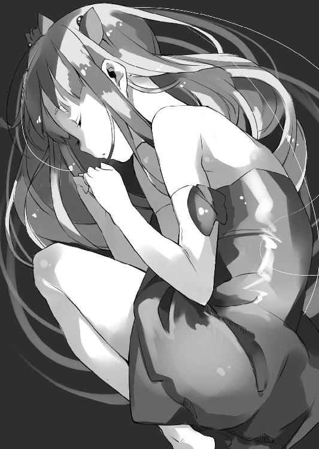
「素晴らしいぞこれは！」
「光栄でございます、陛下」
頰を上気させて興奮と共に言うペトラルカに、恭しくドワーフ達が頭を下げた。
ちなみに答えたのはライデル・ガルド──ロミルダのお父さんだ。
「これはまた......陛下のご聡明さが滲み出ているようですな」
「正直、並んで立たれれば、見分ける自信がないな」
ザハール宰相と騎士ガリウスの評価も、これはもう、最上級の讃辞と受け取って良いだろう。正直、『死体みたいで気味が悪い』と言われるかな、と心の片隅で心配したぐらいだけど、杞憂だったみたい。
ただ──
「予想以上じゃ。......しかし......」
ペトラルカが眉根を寄せる。
「もう少し胸を盛ってもよかったのではないか？」
「いや、これでも大きいくらいじゃない？」
ついそう答えてしまった僕を──ペトラルカが射殺しそうな目付きで睨んできた。
やばい。つい本音が。
また皇帝陛下パンチが炸裂するかなとも思ったけど、ドワーフ達や騎士達の目もあるからか、ペトラルカは咳払いして話題を変えてきた。
「で──これは箱の中から出しても平気なのか？」
「はい、もちろんです」
「よし！ 箱から出して立たせてみい！」
ペトラルカが騎士に命じる。
騎士達は──まるで壊れ物を扱うように、ペトラルカの等身大人形を箱の中から取り出した。まあ、さきほどから何度も言っているように、見た目はペトラルカそっくりなのだ、人形と分かっていても『モノ』として無造作に扱うのは躊躇われるのだろう。
彼らはむしろおっかなびっくりといった様子で、等身大人形をペトラルカの前に立たせようとする──のだが、上手くいかない。手を離すととたんに倒れそうになる。
「あ......ここはこうで」
僕は等身大人形に歩み寄ると、膝を少し開き、膝の角度も変える。
うーん。本当に出来が良いので、こう、足を触っていると、本物のペトラルカの前にしゃがんで足を触っているみたいに錯覚しちゃうというか......犯罪的行為をしているみたいで妙に後ろめたいな。
「これで大丈夫かな？」
僕の呟きを聞いて、騎士が手を離す。
立った！ ペトラルカが立った！
などと脳内でどっかのアルプス少女みたいに喝采する僕。
しかし──
「......あれ？」
それも一瞬。
どうも詰めが甘かったらしく、ペトラルカの等身大人形はゆっくりと傾き──そしてあろうことか、僕に向かって倒れてきた。
「どわっ!?」
悲鳴を上げながら、ペトラルカに──もとい等身大人形に押し倒される。
「お、重い......」
胸を圧迫されて僕は喘いだ。
実はこのペトラルカの等身大人形──見た目は小柄で軽そうなんだけど、金属製の骨格やら複雑な関節機構やらをたくさん仕込んであるので、実際にはかなり重い。正確な数値は測ってないけど......たぶん、結構な重量になるだろう。
「重いとはなんじゃ！」
等身大人形の下で掠れた喘ぎ声を上げる僕に、ペトラルカが怒鳴る。
「妾を太っていると申すか！」
「い、いや、ペトラルカじゃなくて、人形の方が......」
さすがに人形の重量を知っているドワーフ達は、放っておくといつまでも僕が起き上がれないと判断したのだろう、二人がかりで、ペトラルカの等身大人形を僕の上からどけてくれた。
今度はドワーフ達が等身大人形を立たせる。
さすがに作った本人達だけあって、平衡の取り方は心得ているらしい。今度は傾くことも倒れることもなく、僕の目の前にペトラルカの似姿が二本足で立っていた。
立たせても、ますます本人にしか見えない。
本当に──良い出来だ。
「まあとりあえず、気に入ってくれた？」
僕は改めてペトラルカに問うてみた。
「うむ。本当にようできておる、それは間違いない」
とペトラルカは頷いた。
「そうなんだよ。ドワーフの技術ってすごいよね。表面素材はまあ日本から持ち込んだものだけど、そもそも人体と同じような可動構造を持った関節を、ほとんど調整いらずの高い精度で作るとか......」
「しかも変形機構付きです」
「そうそうしかも変形機構まで付いてて......ってちょっと待て!?」
得意気に囁いてきたロミルダを、僕は勢いよく振り返った。
「変形っていつの間に!?」
毎日、作業場に顔出してたつもりだけど、全然気付いてなかったよ!? 監督役の僕が気付かない内に、変形機構組み込んだってこと!?
うわあ......本当にドワーフの加工技術って尋常じゃない。
いや、感心している場合でもないけど。
「え、でも」
ロミルダはきょとんとした表情で言った。
「変形機構はロボの浪漫だって──先生が」
「あれは巨大ロボオンリーだよ！」
「えぇッ!?」
目を見開いて、よろめくように一歩後ずさりするロミルダ。
「どうした、ロミルダ？」
何か様子が変だと思ったのか、ロミルダの親父さん──ライデル・ガルド氏が声をひそめて尋ねてくる。
「父様、変形機構は要らなかったみたい......」
「なに!?」
ガルドさんは心底驚いた様子で呻いた。
「ロミルダ、お前が必須だと言うから──」
どうやら、ロミルダが父親に余計なことを吹き込んだのが原因らしい。
ガルドさん経由で、ロミルダの出鱈目が職人達に伝わってしまったのだろう。他のドワーフ達も顔を見合わせている。この期に及んでようやく、自分達が余計なことをしちゃったと気付いたらしい。
あー。そうだった。
彼らは職人なのだ。職人ならば『できることはやってみたい』とか『こだわれるところはとことんこだわる』とかやっちゃうよね......ましてや変形機構って一度〈フェイドラ〉で作ってるから、可変メカの基本的な考え方は知ってるだろうし......
「だって目の前で皇帝陛下が変形したらどうすんの!?」
「え......すごいかなって」
今気付いた。
ロミルダってけっこう、アホの子だ。
「偽物だってバレバレじゃん！」
「いえ──もしかしたら新世界の神の誕生だと崇められる可能性も」
「んなバカな!?」
無責任な光流さんの呟きに突っ込む僕。
というか光流さん、ロミルダは悪気なく天然で変形機構付けてしまったらしいけど──君のボケはわざとだよね。
というかいったいどんな変形機構が付いているのやら。
飛行形態か。砲撃形態か。それとも獣形態か。
いずれにせよ、そんな機構まで仕込んでりゃ、重いはずだよ！
「で、でも使わなければこのままだしね、うん！」
一転して『本当に大丈夫か？』とでも言いたげなペトラルカ達の視線に気付いて僕はごまかすように笑う。というか笑ってごまかした。
ああ──もう駄目だ。
もう少し後、充分に皆が等身大人形の出来に感心しきったところで、駄目押しするつもりだったんだけど。
「............」
僕はペトラルカの等身大人形に改めて歩み寄ると、その背中をぽん、と叩いた。
「ん......？」
僕の行為の意味が分からなかったのだろう。
怪訝そうな表情を浮かべるペトラルカ達。
ペトラルカの等身大人形は、背中を叩かれたせいで、平衡を失い、ぐらりと倒れ──
「──!?」
なかった。
一同が息を吞んで見守る中、人形は目を開き、自ら片足を前に出して踏みとどまったのだ。
いや。それどころか──
「なんと!?」
人形はさらに動いた。
手を体の横に添えたまま、腰を曲げて頭を下げる。
そこから──流れるような動きでダンス開始。
あらかじめ打ち合わせてあった通り、僕がスマートフォンを掲げて『プリピュア』のエンディング・テーマを流すと、美埜里さん、光流さん、そしてドワーフ達も後ろに下がって場所を空ける。
鳴り響く音楽。
それに従い踊る──人形。
「おお......!?」
ペトラルカだけでなく、ザハール宰相や騎士ガリウスまで、身を乗り出してその様子を眺めている。いや。近衛騎士達ですら愕然とした様子で、ペトラルカの似姿が、プリピュアの可愛らしくも激しいダンスを繰り広げるのを見つめていた。
回って。回って。両手を広げて──跳躍。
およそ一分半の曲は瞬く間に流れ去り、最後に人形はポーズを極めて、止まる。
後に残るのは、固唾を吞んで見守る人々の、静寂。
そして──
「......すさまじいな」
と沈黙を破ってそう評したのは、騎士ガリウスだ。
さらにペトラルカが謁見の間を見回しながら、問うてくる。
「いったい誰が？」
さすがに彼女も、今の人形の動きが魔法を使ってのものだとは理解しているのだ。だからその魔法の使い手を捜しているのだろう。
うん。これだけ驚いてくれると、頑張った甲斐がある。
僕は笑みを浮かべてガルドさんに頷いた。
「紹介お願いします」
「──ロロン」
ガルドさんに名を呼ばれ、他のドワーフ達の少し後ろに、隠れるようにして並んでいた少女が、三歩ばかり前に歩み出る。
あまり表情を表に出さない子だけれど、さすがに皇帝陛下の御前ということもあってか、顔には緊張の強張りが見て取れた。
「ロロン・セリオーズ、若輩ながら、我がガルド工房の職人です」
「............」
ガルドさんによる紹介と共に、ロロンは、深々とペトラルカ達に向けて一礼した。
ロロンの魔法技術は確かにすごい。
僕らはもちろん、権力者としてさまざまな魔法使いを見てきたであろうペトラルカや騎士ガリウス、ザハール宰相までをも驚かせたのだから、彼女が凡人とは一線を画する、天才の類であることは間違いない。
しかし──だ。
それはまだ『滑らかに生き生きと等身大人形を動かす』という段階に過ぎない。
最終的な目標は、あくまで人形にペトラルカの代役──身代わりを務めさせることだ。
そのためには人形をペトラルカらしく、動かす特訓をしなければならない。
ここからはさすがに僕達の屋敷で行うわけにもいかず、エルダント城に用意された一室でペトラルカ本人の協力も得て行うことになった。
「うむ──これで全員か」
とペトラルカが部屋に集まった面子を見回す。
部屋の中にいるのは、僕、美埜里さん、光流さん、ロロン、それに加えてロロンの補佐としてロミルダ、さらにもう一段階『ペトラルカらしさ』を演出するために、エルフのロイクまでが呼ばれることになった。
ドワーフが総じて鉱物に干渉する魔法に長けているように。
エルフは総じて風に──というより空気に干渉する魔法に長けている。
そして音とは物体の震動が起こす空気の波だ。ならば風の魔法を応用すれば音を──声をも変えることができるのではないか、と僕は考えたのだ。そして身近にいるエルフ、つまりロイクに確認したところ、『できる』と断言したので、彼をこの計画の面子に引き入れることになった。
「............」
「............」
互いに横目で相手を一瞥するロイクとロミルダ。
普段は喧嘩ばかりしているこの二人だけど──さすがにエルダント城の中、それも皇帝陛下の御前で帝国の政治的な仕事に関わるとなると、緊張でそれどころではないらしい。
「ではさっそく始めるとするか」
そう言ってペトラルカが視線を向けるのは、当然、彼女の傍ら、部屋の真ん中で椅子に座らされている彼女の等身大人形である。
こうしてペトラルカとその人形が並んでいると、まるで双子みたいだ。
人形の方が動き出して、手を繫いで踊ったりしたら、もうどっちがどっちか分からなくなること、請け合いである。
「............」
ロロンを含め、僕達は皇帝陛下からの指示を待つ。
だが──
「シンイチ」
じろりとペトラルカが僕の方を睨んで、声を掛けてきた。
「はい？」
「さっさと指示を出さんか」
「......へ？」
「へ？ ではない。今回はシンイチに教育係を命じたであろう。なれば、汝が指示を出すのは当然ではないか」
両手を腰に当てて、ペトラルカはそう言ってきた。
なんだよ。鷹揚に頷いて「さっそく始めるとするか」なんて言うから......皇帝陛下御自らが指示をお出しになるのかと思ってたよ。
「あー......えっと。じゃあ......」
僕はまずロイクを振り返った。
「とりあえずはロロンは動き優先で魔法に集中してもらうから、声を変えて口の動きに合わせるのはロイクの方でやってみてくれる？ 最初だから、まあ、お試しで気楽に」
「はい──」
気楽にと言ってもそうそう緊張は解けないか──固い表情でロイクが頷く。
「で......ペトラルカ」
「ん？ 妾か？」
完全に見物人の立場になると思っていたのか、意外そうな声をペトラルカが出した。
「ペトラルカはちょっと歩いてみてくれる？ それをロロンに真似させよう。お手本だよ。まずは、お手本そっくりに動かすところから始めて──ペトラルカらしさを覚えたら、次にロロンの判断で動かしてもらう感じ」
「うむ。分かった」
ペトラルカはまず部屋の中を歩き出す。
静かに──まるで貴族のお嬢様が舞踏会か何かの会場で歩いているかのような、お淑やかさが滲み出る仕草で。いや、貴族のようなも何も、皇帝陛下なんですけどね。
しかし......
「んー、なんか違うな」
「違うとはなんじゃ」
僕の呟きが聞こえたのか、ペトラルカは足を止め、ムッと眉根を寄せた。
「普段通りでいいんだよ」
「普段通りじゃろう？」
「いや......」
なんというか......周囲の目を意識しすぎて、ことさらに気取っているというか、格好いい自分を演じている、そんな感じだった。
「もっとこう、胸張って歩いてるでしょ、普段──もっと偉そうっていうか」
僕が胸を張って歩く真似をしてみると、ペトラルカは不満そうな顔をする。
「そ、そんなに妙な歩き方はしておらん！」
「なんていうのかなあ、もっとこう、わがままな感じで」
「誰がわがままじゃッ！」
「じ、自覚ないの!?」
思わず本音でそう返しちゃって、焦った僕だけど。
次の瞬間──ガリウスとザハール宰相が揃って噴き出した。
「何故笑う!?」
眦を吊り上げて、ますます怒るペトラルカ。
絶対権力者がお怒りということで、たいていの者は萎縮しちゃうんだろうけど──さすがに親戚ということもあってか、ガリウスは珍しく笑いながらこう答えた。
「いや、確かにシンイチの言うことには一理あると......」
「ガリウス！」
ペトラルカが顔を真っ赤にして地団駄を踏む。
そういうところがやっぱり幼くもあり、可愛くもあるのだ、この皇帝陛下は。
「まあとにかく、いつも通りに。お願い。普段のペトラルカの動きを真似しないと、意味ないんだよ」
「むう......」
この『特訓』の意義は理解しているからか、ペトラルカは膨れ面で黙り込む。
僕がもう一度、とお願いすると、彼女は──今度は少しいつもの彼女に近い感じで、部屋の中をゆっくりと歩き始めた。
「ロロン、準備はいい？」
僕はロロンの方を振り返って確認する。
「はい、大丈夫です」
ロロンの答えと同時に、発条仕掛けのように、ぴょんと椅子からペトラルカの等身大人形が跳ね起きる。その仕草は、まったく人間っぽくないのだけれど──
「............」
次の瞬間、歩き回るペトラルカの隣に並び、その動きを模倣する人形。
歩幅。手の振り。視線の方向。
少しずつペトラルカというお手本に近づけながら、ロロンは人形を動かし続ける。
「いいよ。その調子」
僕はそう言ってロロンと、そしてペトラルカを激励する。
こうして──ロロンの『ペトラルカ・アン・エルダント三世皇帝陛下らしさ』を学ぶ特訓が始まったのだった。
──とはいえ。
ずっとエルダント城に泊まり込むわけにもいかない。
そういうわけで僕と美埜里さん、光流さんは一度、屋敷に戻ってきた。
ちなみにロロンはずっと屋敷に詰めさせていたのだけれど──一区切りついたということで、一度、自宅に帰すことにした。
半月ぶりの、いつもの食事風景である。
食堂には僕、美埜里さん、光流さんはもちろん、ミュセル、エルビア、ブルーク、シェリスの姿もある。最近バタバタしてたから、こうやってみんなでゆっくりミュセルの作ってくれた夕食をいただくのは、久しぶりだ。
「でもまあ、上手くいきそうだよね」
ご飯を口に運びながら僕は、ロロンの様子を思い出す。
「よかったです」
僕の呟きに微笑んで答えるのはミュセルだ。
いつもながら、彼女は僕の仕事について、上手くいくとまるで自分のことのように喜んでくれる。すでに僕にとっては彼女の笑顔が、成功の象徴みたいになっていた。
「何だか知らないすけど、アタシも見学してみたかったす」
もりもりとご飯を口に運ぶエルビアが、好奇心いっぱいの目で僕を見てくる。
その表情は珍しい玩具を親にねだる子供みたいで──まあ、可愛いのだけど。
「さすがにそれは難しいかなあ......」
一応、機密事項だし、一応、エルビアはバハイラムの密偵だし。
「とりあえずドワーフ達の作業も『量産』の方に移行したから一段落だね。もうそんなにバタバタしなくて済むと思う。皆──いろいろありがとう」
と僕は言った。
等身大人形の『開発』はすでに終わった。
後は同じものの予備部品を作る作業が待っているのだけど──これはもう、すでに経験した作業の繰り返しなので、僕が監督したりことさらに指示を出す必要もない。こちらも一区切りついたということで、ドワーフ達に一度、家に帰るように言っておいた。
何にしても皆には迷惑をかけた。
特にブルークやミュセル、シェリスは地味に負担が大きかったと思う。ミュセルやシェリスは作業場にこもりきりのドワーフ達に食事を作って運んでくれていたし、彼らが寝泊まりしていた客室の掃除、衣類の洗濯なんかもしてくれていた。ブルークはブルークで小屋を作ってくれたことに加え、追加された資材を運んでくれた。いずれも普段の彼らの仕事じゃない。
「あとはあの子が上手くやってくれたらすべて終わりね」
鴨肉をフォークとナイフで切り分けながら美埜里さんが言う。
「見た感じ大丈夫そうだけど」
「いろいろと上手くいきそうで、よかったですよ、本当に」
とりあえずペトラルカの身代わり人形に関するもろもろはすべて順調だ。
むしろトントン拍子に進みすぎて怖い──というか何か重要なことを見落としてないかと、ふと不安になったりもする。
「これがラノベや漫画だったら、この辺りで『起承転結』の『転』──すべてをひっくり返しちゃうような事件が起こるのですけれど」
「やめてよ、光流さん」
涼しい顔でそんなことを口にする光流さんに、僕は苦い顔をする。
「冗談です冗談」
「光流さんが言うとなんか怖いんだよね」
「そうですか？」
澄ました表情でお茶を啜る光流さん。
だが──ふと彼はその表情を真剣なものに変えてこう言った。
「でも私、ずっと思っていたことがあるんです」
「え......なに？」
思わず身構える僕。
もともと、光流さんは、自分達の言うことを聞かない僕の代わりにと、日本政府が送り込んできた人間で──つまりは僕の立場を奪うためにやって来た存在だ。端的に言えば〈アミュテック〉総支配人の立場を争う『敵』だったわけで。僕としては、いろいろあってとりあえず和解はできた──と思ってるけれど、光流さんが心の奥底でどう考えているかは、分からない。
「等身大アクション・フィギュアって......」
静かな口調で光流さんは言った。
「結局ダッチワ......」
「ＯＫ、ちょっと黙ろうか！」
僕はばんばんとテーブルを叩いて喚いた。
「てか──いきなり何だよ!? ちょっと緊張したのに！」
「私は客観的事実を述べたまでですよ？」
「確かに体つきとかまんまペトラルカで、アレな部分はさすがに作り込んでないはずだけど、抱き枕以上にはハアハアできそうで、いやまて、ロミルダ達が勝手によけいな機能を付けかねないけど、でも重いからさすがに騎──いや！ とにかく！ 違うから！ 違うの！」
別にそういう目的で作ったわけじゃない！
結果的にはそう見えたりすることもあるかもしれないけど、目的が違うというか、そういうつもりはなかったから、無罪！ たぶん！
などと自分の内外で弁明を繰り広げる僕。
しかし──
「だっちわ？」
「なんすかそれ」
「いいの！ 君達は知らなくていいから！」
きょとんと首を傾げて尋ねてくるミュセルやエルビアに、僕は叫ぶ。
何も知らない無垢な女の子が知るべきものじゃありません！ ああいうのは、こっそりひっそり一人で楽しむものなんです！ たぶん！ 最近じゃ車の助手席に乗せちゃったりする人もいるみたいだけど！
「それはね」
「だからやめて光流さん！」
ミュセルとエルビアに、何故かやたら楽しそうに説明しようとする光流さんを、僕は必死に止める。というか──ミュセルやエルビアはともかく、『実はあの人形はダッチワイフ』みたいな与太話がペトラルカやその周辺に伝わったら、僕ら、間違いなく不敬罪で打ち首獄門だからね!?
「み、美埜里さん！ 美埜里さんからも何か言ってくださいよ!?」
僕は思わず、美埜里さんに助けを求める。
だが──
「............」
美埜里さんはテーブルに両肘をついて、指を組んでいた。
口元だけを隠してこちらを見つめている。どこかの特務機関のトップで、汎用人型決戦兵器で、人類を補完するとかしないとかで揉めちゃいそーな感じの親父そっくりだ。
「男性バージョンはまだかね」
「......美埜里さん？」
きらりと眼鏡を光らせて美埜里さんは問うてきた。
その背後に、ゴゴゴゴ......とか轟音を立ててそびえる黒い石板みたいなのが見える気がしたけど、たぶん気のせい。
「いや......あの......美埜里さん？」
「男性バージョンはまだかね」
美埜里さんは繰り返した。
「あれの男性型を二体用意すれば、リアルＢＬも夢ではない......慎一君ver.と光流君ver.とコルドバル卿ver.を準備したら、３ピ......」
「やめてくださいってば！」
ええい黙れそこな腐女子ッ！
「さんぴ？」
「それはねえ」
「光流さんッ！ よけいなこと教えない！ 食事時に下ネタ禁止！」
お願いだ、ミュセルは、ミュセルだけは、汚さないで！ エルビアは月のアレがあるから──月イチの発情期とかあるから──もうしょうがないけど！ ミュセルだけは！ 穢れなきメイドさんでいてほしいの！
──などと。
焦りまくる僕。絶賛発酵中の美埜里さん。そして澄ました様子の光流さん。そしてわけが分からず目をぱちくりさせているミュセルとエルビア。
そんな一同の横で──
「ブルーク、お代わりは？」
「もらおうか」
ブルークとシェリス夫婦だけが、平和に、仲睦まじく食事を続けていた。
でもって──また翌日。
放課後になると同時に僕は、美埜里さん、光流さん、そしてミュセル、さらにロイクとロミルダを伴ってエルダント城に向かっていた。
もちろん、ロロンの特訓のためだ。
ミュセルを連れてきたのは、たまたまその日は学校に来ていたこともあるけど、『ペトラルカらしさ』を判断するのに、彼女の意見も欲しいと思ったからだ。身分の差はもの凄くあるわけだけど、それでも、例の憂国士団の一件以来、ペトラルカとミュセルは割と仲良しで──ペトラルカをよく知っている、という意味ではロイクやロミルダ以上だろう。
そういうわけで......
「放課後もミノリ先生とご一緒できるなんて、僕は感激ですよ」
「......ありがと」
「たがが外れた変態エルフが暴走したときには、私が叩きのめしますから、先生は安心していてくださいね」
「......ありがと」
などというロイクとロミルダと美埜里さんの会話を背中で聞いたりしながら、僕達は騎士に案内されて特訓用の部屋に向かう。
しかし──
「相変わらずでかいよな......」
僕は呟く。
延々と続く廊下は、僕らの他に人の姿はなく、内部に行けば行くほどに、照明の行き届かない薄暗い部分も増えてきて──何というか、ちょっと怖い。
夜中に一人で歩き回れと言われたら、僕は全力で遠慮する。
内装が中世ヨーロッパのそれと似ているということで、幽霊が歩き回っていたり、肖像画の目が動いたりとか、そういう怪奇現象が起きても不思議じゃない雰囲気なのだ。
しかも──
「どこがどうなってるのやら......」
実のところ......僕は未だにこのエルダント城の内部構造がよく分かっていない。
もともと異様にでかいのだ、この建物は。
人口密度という意味では、実は恐ろしく低い。
城詰めの貴族や、騎士、官吏、といった人達の数に対して、建物の規模が大きすぎる。だからこうして中を歩いていても、人と出会わない時間の方が遥かに長いのだ。
さらに......
もともと、皇帝の御座所であるエルダント城は、軍事施設としての──非常時には立て籠もって戦う要塞としての側面も持っているので、必要以上に曲がりくねったり、同じ所をぐるぐる回るような通路も少なくない。万が一に敵が攻め込んできたときも、迷ったり、手間取ったりするように──と考えられて、一種の迷路構造が採用されているということ。
中庭とか、何度も通った謁見の間とか、馴染みの区画であれば、僕も一人で動き回れるのだけれど......そうした馴染みの場所から少し踏み出すと、たぶん、迷子になってしまうだろう。エルダント側もさすがに全面的に僕達を信用しているわけではないだろうから、頼みもしないのに城の内部構造をすべて教えてくれるはずもないのだ。
まあそういうわけで、騎士の案内は不可欠。
僕達は十五分近く城内を歩き回った挙げ句、ようやく特訓用の部屋に足を踏み入れた。
そんな僕らを出迎えたのは──
「待っておったぞシンイチ」
足を組んで椅子に座っている、ペトラルカ二人だった。
「え、え？」
思わず僕は、交互に二人のペトラルカを凝視する。
横に並べた椅子に座る二人のペトラルカは、まったく同じポーズでそこにいた。僕の反応が面白いのか、唇の両端を吊り上げているその表情まで同じだ。
双子、どころの話ではない。
まるで鏡だ。
ちなみにロロンは、向かい側の壁際に立ってペトラルカを見つめている。彼女の行動を追うために、視線を外せないのだろう。ふと背後を振り返ってみれば、一緒にやってきた皆も僕と同じように目を丸くして固まっている。
「そっくりだ......」
僕は──視線をペトラルカ達に戻して言った。
「......むしろそっくりすぎて、気持ち悪いなこれは」
「なんじゃと!?」
そう評したとたん──左側のペトラルカが眉を吊り上げて勢いよく立ち上がった。一拍遅れてもう片方、右側のペトラルカも。
「あ、こっちが本物か」
本物を見て真似するとなると、どうしても人形の反応は少しばかり遅れてしまう。ちょっとした会話や表情ぐらいならば、ほとんど時間差は無視できても、唐突な動きとなると、どうしても見て分かるだけの遅れが生じるのだろう。
でもまあ、本物と身代わり人形が並ぶことは、こういう場くらいしかないだろうから、特に問題はないだろう。
「妾を愚弄する気かシンイチ」
「違う違う。そういう意味の気持ち悪いじゃなくて」
どうやら『気持ち悪い』と言われたのを根に持っているらしく、二人のペトラルカが揃って僕を睨んでくる。
「どっちか分からなかったから、さ。本物と人形の反応に差が出るように、ちょっとひどいことを言ってみたんだよ。ごめんね」
「むう......」
とりあえずは納得してくれたのか、ペトラルカはそれ以上の文句を言ってこなかった。
「でも本当にそっくりね」
感嘆したような口調で呟くのは美埜里さんだ。
「少し離れて見ると本当に見分けがつかないくらい」
確かに美埜里さんの言う通りだ。
もともとそっくりに作られているから、単に目鼻立ちが似ているのは当然なのだけど。
それでもただそこに立っているとか、横たわっているとか、そういう状態ならば、やはりどこかに人形っぽさが感じられるのだ。躍動感とか生命感とか......そういうものが感じられないのである。
しかし──だ。
今さっきペトラルカとロロンがやってみせたように、どちらも同じ姿勢で同じ表情を浮かべていたりすると、その人形っぽさがとたんに、消える。
もちろん、互いの息が触れ合うような間近で見たら、どうしても違和感を覚えるだろう。だけどそれは隣に本物が並んでいるからこそ比較の上で生じるもので......パッと見や、離れた距離からではとてもではないが気付くことはできない。しかも動いているとなると、よほど注意して見ないと、どちらが本物なのか分からなくなる。実際僕達も、どっちが本物なのか、咄嗟には分からなかったくらいなのだし。
最初から人形の存在を知っていても、これなのだ。
何も知らない者がペトラルカの人形を見ても、まず、それが偽物だとは気付くことはできないだろう。ペトラルカらしさをロロンがさらに学べば、謁見の間で会っているのがどっちかすら、分からなく日が来るかもしれない。
「ミュセルはどう思う？」
と僕は傍らのミュセルにそう尋ねる。
彼女は、製作途中の人形は何度か目にしているだろうけど──ペトラルカと並べて、しかも動いている身代わり人形を見るのは初めてだったはずだ。
「凄いです......本当に陛下がお二人おられるみたいで」
ミュセルは呆然とした口調で言った。
この様子だと、お世辞とかじゃなく、本当にミュセルの目にもそっくりに見えてるんだろう。上々だ。
「じゃあ早速始めようか」
僕の声を合図に、みんなが頷く。
「ロロンはペトラルカの動きを真似して人形を動かしてくれる？」
「はい」
ロロンが頷く。
「ロミルダとミュセルは何か気付いたことがあれば言って。ロイクは変声の魔法の準備。で、ペトラルカは見本として適当に動いて喋ってほしい」
僕がそう采配すると──ペトラルカ以外は、人形の様子が見えるように向かい側の壁際へ移動してロロンと並んだ。
「............」
部屋中の皆からの視線を受けて、ペトラルカは、大きく息を吸う。
口を開いて何か言葉を発しようとして......しかし。
「ぬぅ......」
その桜色の唇からは言葉が出てこない。
代わりに焦ったような表情を浮かべて彼女は小さく唸った。
「どうしたの？」
「いざそう言われると、なかなかに難しいのう......」
呟いてペトラルカが腕を組む。
一瞬遅れて人形がやはり腕を組む。
そして──
「いザそう言ワレルとナかなかニ難シイのウ」
唇が動き、人形はそう喋った。
うーん。やっぱり風の魔法を応用して声を変える、というのは難しいのか、セリフは少しぎこちない。ロイクによると、何度か練習していれば違和感ない程度には調整できるはず、とのことだったけれど。
「いつも通りでいいんだよ」
「うむ......」
「うム......」
「たとえば、おーほっほっほっ！ って笑ってみるとかさ」
などと提案する僕。
もちろん、僕としては、ペトラルカに助け船を出したつもりだったのだけど、いまひとつ本人には受けが悪かったらしい。ムッと眉間に縦皺を刻んでペトラルカは言った。
「妾はそんな笑い方、せんわ！」
「あれ？ そうだっけ」
「ワラワはそんナ笑いカタせンワ！」
「声、もう少し緩急をつける方が陛下らしいかもしれませんね」
「......はい」
光流さんに指摘されて──ロロンが答える。
声を変える魔法そのものはロイクの役割なのだけど、変える元の声は、ロロンのものだ。
「ミュセル、ロミルダ、どう聞こえる？」
と僕は二人に尋ねた。
この練習の場にミュセルを連れてきている理由のもう一つが──実は、これなのだ。
魔章指輪。
僕達はこの魔法具で意思疎通ができているわけだけど、これは、テレパシーというか、精神と精神を繫いで話した言葉を翻訳するという魔法なので、機械に録音した言葉や、文字までは翻訳してくれない。
で──これが実は、ロロンの声を『変声』させているロイクの魔法にも当てはまる。
魔法による『変声』が間に入ったことで、僕らは『音』として耳でこれを聞くことはできても、その意味を翻訳された状態で受け取ることはできない。
もちろん、僕も美埜里さんも大まかなエルダント語は、辛うじて聞き取れる、くらいには理解しているけれど──さすがに、細かな抑揚や口調になってくると、分からない部分も多い。
だからこそ、エルダント語を母国語とする人達に、意見をもらいたかったのだ。
「ごめんなさい、私はロロンが話しているようにしか思えません」
とロミルダ。
「馬鹿な、僕の魔法が上手く働いていないというのか!?」
「そうじゃないけど、でも私にはそう聞こえるの！」
顔色を変えて言うロイクと、彼に苛立たしげにそう返すロミルダ。
「声は確かに変わってるけど、私は普段からロロンが喋るのを聞いてるし、その特徴も分かってる。だから、少し声が違っても『あ、ロロンだ』って思っちゃうの」
「......私も」
ミュセルも申し訳なさそうに言った。
「陛下のお話になる際の、お口振りは何度も耳にしていますので......それと同じかと言われると、その......」
「やっぱりそうか」
僕は溜め息をついた。
ロロンの演技力──それが今の問題だ。
ロイクの魔法の方は、声を変えるための調整が終われば──変換のための基本ができ上がってしまえば、後は現場調整とか必要ない。なので、魔法具に組み込んでしまえる。
しかしペトラルカの身代わりとして人形を使うのであれば、その場の状況に応じて簡単な受け答えはできなければいけないわけで......声質はどうにかなっても、喋り方はさすがに魔法で合わせるわけにはいかない。
「これは喋り方を覚える方が難しいかもね......」
「声だけは、別の演技者を雇うという方法もありますね」
と光流さんが言う。
そこに──不意に、部屋の扉を叩く音が割り込んできた。
「誰じゃ」
僕らは特訓を中断し──一同を代表してペトラルカが問いかける。
「陛下、私です」
「ガリウスか。入れ」
「はっ」
返事と同時に扉が開く。
入ってきたのは銀髪の美形騎士ガリウスだった。
「どうした？」
「急ぎの案件が、一つ持ち上がりまして」
「妾はこちらじゃ」
「......失礼」
人形に向けて話し掛けていたガリウスは、咳払いを一つして本物に向き直った。
「一度お戻りくださいますようお願いします」
「むぅ？」
静かな口調で告げられるガリウスの要請に、ペトラルカが唇を尖らせる。ちなみにその隣で、やはり人形が口を尖らせていた。
「......陛下」
「仕方ない」
諭すようなガリウスの口調にペトラルカは溜め息をついた。
「妾は一度席を外す。その間にも練習を怠るな」
そう言い置くと──ペトラルカはガリウスと共に部屋を出ていった。
まあこれは仕方ない、というか予想できたことだ。
ペトラルカは皇帝陛下だ。どれだけ上手に予定を組んで時間を作っても、仕事は山のように出てくる。むしろこれからも、何度もこうやって、途中で抜けることになるだろう。
「よし、じゃあロロン、ペトラルカの真似をして適当に動かしてみてくれる？」
そう言って僕はロロンを見た。
......しかし。
「............」
ロロンは動かない。魔法を使う気配がなく──実際ペトラルカフィギュアは突っ立ったまま、なんの反応もしない。
「どうかしたのですか？」
固まっているロロンに、光流さんが声を掛ける。
「あの......」
ロロンは何か戸惑うかのように瞬きをしながら光流さんを見て──それから僕に視線を向けた。表情はいつも通りの淡々としたものなのだけど、どこか困っているように見えるのは、僕の気のせいだろうか。
「適当に......というのは......具体的にどういうことでしょうか......？」
「......へ？ あ、ああ」
僕は自分の指示が曖昧すぎたと気付いた。
まあそうだよね。練習だって始めたばかりだし、いきなり『適当にペトラルカらしく動かして』なんて言っても難しいか。ペトラルカ本人だって、『適当に動いて』と言ったら困惑していたくらいだし。
「あー、えっと、じゃあ椅子から壁際まで歩いて往復して、また座ってくれる？」
「分かりました」
ロロンは頷くと、腕を持ち上げて、掌をペトラルカフィギュアに向けた。
呪文を詠唱してしばらくすると、ペトラルカの足が動き出す。
壁際まで歩いて、そこで方向転換、まるで軍人の行進のように腕を振ってペトラルカフィギュアは椅子に歩み寄ると、そこに腰掛けた。
「これで......いいですか？」
「えっと......」
僕は一瞬返答に詰まった。
なんというかそれは、僕の言葉通りの動きだった。椅子から壁際まで往復して座る。間違ってはいない、いないんだけど......。
「ペトラルカらしくは、なかったかな......」
いや、それどころか。
それは完全に人形そのものの動きだった。人間っぽさがまるでない。人の形をした機械が動いているだけ──がしゃこん、がしゃこん、なんて音が聞こえてきそうなぐらいに。
「............」
なんと説明すればいいのか──返事に窮する僕。
代わりに壁際で見ていた光流さんが一歩前に出て言った。
「皇帝陛下なのだから、歩くときは胸を張って堂々とした方がいいと思いますよ」
光流さんが歩く真似をする。
拳は軽く握って、胸を張って、その場で足踏み。
「............」
ロロンは小さく頷いて人形を動かす。
光流さんが示した動き通りに──そっくりに。
今度はちゃんと『人間の動き』になっている。
それこそまるで、もう一人、光流さんがいるかのように──
......あれ？
僕の頭の中を違和感が過ぎる。
これって......
「座るとき足組む方がそれらしいかもしれません」
「何度か組み替えたりしてね」
壁際に戻った光流さんに加えて、美埜里さんも提案する。
「......分かりました」
ロロンが頷き、再度──人形は動き出す。
ペトラルカの似姿は、また機械的なぎくしゃくとした動きで椅子に座り、おもむろに足を組む。だけど明らかに何かおかしい。力の掛かり方が変というか。
「何度か......組み替える......」
ロロンが呟く。
同時に椅子に座ったペトラルカが、組む足を替えた。
数秒後、また組み替える。
さらに数秒、組み替える。
そして数秒、組み替え......。
「ちょっ......待って、ストップストップ！」
思わず腕を振って、僕はロロンに叫んだ。
「組み替えるだけじゃおかしいでしょ!?」
一定間隔で──測ったように同じ秒数を置いて、足を組み替えるのを続けていたら、それこそ機械だ。おまけに足を組んでいるその姿勢もどこかおかしい。たとえば足を組んでいるときには上の足を下の足に『載せて』いる──つまり上の足の重みが下の足に掛かっている状態であるはずなのだけど、今の人形は違う。足を組む『形』をしているだけで、むしろ全身に均等に力が掛かって......足を組んで座る、という特定の姿勢を力みまくって維持しているかのようにも見えるのだ。
「え、でも......さきほどは組み替えろと......」
「言ったけど！ でも限度ってものがあるよ！」
「............」
ロロンは眉根を寄せて、考え込む様子。
（......やっぱりか）
僕は、さきほどの違和感の正体に気付いていた。
さっき彼女は、目の前にいるペトラルカの動きの真似をして、人形を動かしていた。つまりお手本がそこにあったのだ。その動きについて──咀嚼して取り込む必要はない。ただ複写するようにそっくり同じに動かせばいいのだ。
だけどお手本がいなくなったら？
（要するに、模写じゃなくて複写なんだ......）
たとえば数学の問題があるとする。
先生がその問題を解いてみせると、その生徒は、その過程を一発暗記して、同じ問題が出れば難なくこれに正解を書き込むことができる。でもその生徒は別に解法を理解しているわけじゃなくて、先生が黒板に板書したその『答え』を丸暗記しているだけなのだ。
だから別の問題や応用問題が出れば、とたんに詰まる。
あるいは......
あるイラストレーターの絵が好きで、それを描き写すこと『ばかり』を延々と繰り返している者がいたとして。
何百枚何千枚と描き写すことを繰り返した結果、余人には見分けがつかないレベルでそのイラストレーターの絵を『再現』できる技術を、その者は手に入れるかもしれない。
しかしたとえば、キャラクターの骨格とか、肉の付き方とか、そういうのを理解して絵を描いているわけではなくて、あくまで二次元平面に記録された点と線の位置を、そっくりそのまま別の紙に移す、そのことに特化してしまっているから、その者は、『そのイラストレーター風の、しかしまだ描かれたことのない絵』を自分の想像で描くということができない。その者が獲得した技術はあくまで『同じモノを作る』ことであって、『真似る』ことですらないからだ。
「貴女、今までに何度も陛下の姿、見てますよね？」
光流さんがロロンに尋ねる。
「そのときに陛下の歩き方や座ったところとか、まったく見ていなかったんですか？」
「いえ......」
「見てましたよね。その真似をしたらいいだけじゃないですか。なのにどうしてできないんですか？」
「ひ、光流さん......」
もちろん、光流さんの口調に責める響きはない。
だけど受け止め方は人それぞれだ。
「もうちょっと、その、優しく」
「優しく？ え？」
と光流さんも困惑したように目を瞬かせる。
光流さんはもともと多方面に器用さを発揮する人だ。だから不器用な人間の気持ちが理解できない可能性がある。『こんなのできて当然』『なのに何故できないの？』──本人に悪意はなく、単に不思議がっているだけであったとしても、不器用な人間は、馬鹿にされ、あるいは責められているように感じることだってあるだろう。
父がラノベ作家、母がゲームの原画家、と──いわゆる創作者を身近に二人も見てきた僕は、『できる』人間と『できない』人間の間に横たわる溝というものをよく知っている。
光流さんの言うことは、間違ってない。
けれど間違ってないだけで──問題の解決にはならない。
「まあまあ」
とりあえず落ち着きましょう──と苦笑を浮かべて美埜里さんも割って入る。
不承不承といった様子だけれど、光流さんが頷いて黙るのを確認し、僕達は改めてロロンの方に視線を向ける。
そこで──僕はぎょっとした。
「ちょ......」
ロロンはその目に涙をいっぱい溜めて、身体を震わせていたからだ。
「ぅ......」
その唇から小さな声が漏れる。
堰を切るというけど──その漏れた小さな呻きが決壊の合図だったのだろう。ロロンの目からは、ぼろぼろと大粒の涙がこぼれ落ち、唇からは、意味を成さない嗚咽の声が溢れ出していた。
「......分からない......です......分からないです......どうして......」
「あ、あ、あ、ええと！」
どうしてって──こっちが聞きたいけど、まあ、言ったらよけい責めてるようにも聞こえそうなので、とりあえず僕は彼女に駆け寄った。
「わ、分からないのは仕方ないよね、最初だし！」
などと言っているものの、ロロンは手の甲で目を擦りながら泣きじゃくるだけ。
あああああ。どうしたらいいんだか。女の子の涙とか苦手なんだよ僕は......！
僕は困り果てて──
「ええと、ええと、ええと、そうだ、光流さんが悪い！」
とりあえず責任転嫁してみました。
「な......何よ、私のせいなんですか!?」
珍しく慌てた様子で叫ぶ光流さん。
彼も、まさかロロンが泣き出すとは思っていなかったのだろう。
いや──僕や彼だけじゃなく、美埜里さんもミュセルも、ロミルダもロイクも、皆、こんなことになるとは思ってもみなかったろう。
ロロンは受け答えもしっかりしていたし、魔法も上手だし、真面目そうだった。
だから勝手に、僕らは彼女について、簡単にはへこたれない努力家、みたいな印象を抱いていた。こんなに打たれ弱いというか──こんなふうにいきなり泣き始めるなんて、思ってもみなかったのだ。
ああもう。どうしたものやら。
とりあえず僕も皆も頭を冷やす必要があるだろう。
「え、えっと......とりあえず休憩しよう休憩！ てなわけで僕トイレ！」
焦りのせいか──ちょうど、下半身を訪れた生理現象を理由に、僕はとりあえず逃げるように部屋を出た。
わりと有名な話だけども──かつてのベルサイユ宮殿には当初、部屋としてのトイレがなかったという。
まあ当たり前といえば当たり前の話だ。
水道が整備され、水洗便所が開発される以前は、くみ取り式が主だったはずで......これも排泄物を肥料として利用するという体制が確立されたからこそ成立する方式であって。
中世ヨーロッパじゃ排泄物は普通に庭や道に捨てていたそうだ。
でもってまあ......これはこのエルダント帝国でも事情については大差ない。
僕達の屋敷のトイレも、いわゆるくみ取り式だ。
で、平屋の建物や、トイレが一階にしかない場合はそれでいいとしても......これが複層構造の超巨大城塞であるエルダント城ともなると、さらに事情がややこしくなる。
くみ取り式を使うにしても、それには『高さ』が必要になる。
水洗のように流しておしまい、というわけにいかないので、各階にトイレを設ける場合には、どうしても、下の階の人の頭上に排泄物を溜め込む構造ができてしまい、いろいろと──湿気と臭いと衛生と何よりも精神面で──よろしくない。巨大な施設となるとトイレの利用者数も相当なものだから、溜め込まれる量も半端ないだろうし。
じゃあこのエルダント城のトイレは、いったいどんなふうになっているのか。
実は......意外とこれが先進的だったりする。
エルダント城のトイレはだいたいが外縁部に集中しているのだけれど、これは、外部から空気を取り込みやすいようにするため──らしい。そして実はトイレ専任の魔法使いがいて、定期的にトイレを『風洗』しているのだそうだ。
排泄物は外壁に沿って取り付けられた筒の中を、風に流されて落ちていく。風は臭いを押し下げると同時に、湿気を飛ばしてしまうので、排泄物は筒の中を落ちていく最中に乾燥してしまい、量も減って、ほとんど臭いもしなくなる。
これをまとめて肥料業者が持っていって、農耕に使う、というところまでが、制度化されているらしいのだ。
初めて知ったときは僕も随分と感心した。
まあだからといって、エルダント城の中で用を足すのが、楽になったりはしないのだけれども。先に書いたように、トイレはそのほとんどが外縁部に設けられている上、城の中の通路自体がやたら入り組んでいるため......いざ使いたいと思っても、内部構造に通じていない部外者は、トイレに辿り着くまでにやたら時間を食ったりするのだ。
で......当然ながら。
「はー......」
僕は溜め息をつきながら通路を歩いていた。
......ここ、どこだ？
戻るべき部屋の場所どころか、自分がどこを歩いているのかも分からない。
そう。僕は完全に迷子になっていた。
この間の地下工房といい、どうにもこのところ、恥ずかしながら迷子になってしまうことが多い。別に方向音痴ってわけでもないはずだけどね。
やっぱり大きすぎるのだ──この城。
よくペトラルカ達も、迷わずに歩き回れるものだ。
できれば誰かに道案内を──と思って周りを見回しても、あいにくと、人の姿は見当たらない。延々と屈折し、あるいは湾曲しながら続く廊下は見通しが悪く、重苦しい静寂が漂っている。
実は廃墟なんじゃないかと不安になってくるくらいだ。
巨大すぎて、衛兵とかの数も足りてない印象である。
「うーん......」
適当に歩いていたら戻れる？
いや......でもこの前の地下工房でもそう考えて動き回った結果、よけいに迷ったわけだし。
迷子になったときは下手に動かない方がいいって言うから、僕が帰ってこないことに気付いて皆が捜しに来てくれるまで、動かないで待つべきだろうか。
でも結局は城っていう閉鎖空間の中だし、歩き回っていれば見覚えのある場所に出るかな？ いちばん簡単な迷宮の脱出方法って、一方の壁に手をついて離さずに、延々と歩いて行くことだっけ。いつかはそれで出られるんだと何かの本で読んだことがある。いわば虱潰しのような方法だから、無茶苦茶時間が掛かりそうだけど。
そんなことを考えつつ僕が城の中を歩いていると。
「......ん？」
気が付けばそこは、大きな扉の前だった。
やたらにでかくて──頑丈そうな代物だ。たぶん、分厚いのだろう。見たところ、謁見の間のものよりも厳つい感じで、しかし装飾性はあまりない。
いかにも『立ち入り禁止！』って感じの扉だった。
いったい何の部屋だろう？
もしかしてエルダントの宝が集まった宝物庫とか!?
でも、それにしては地味というか──
「──何者かッ！」
「......ッ!?」
唐突に叩き付けられる強烈な怒鳴り声に──何の気なしに扉に手を触れていた僕は、びくんと身を竦ませた。
振り返ると、軽装ながら鎧を帯び、腰に剣を吊った兵士二人が、廊下の左右から僕を挟むかのように近付いてくる。二人共、随分と殺気立っている感じで、右手はすでに剣の柄に掛けられ、いつでも抜ける状態だった。
何これ？ ひょっとしてやばい？ 何か地雷踏んじゃった!?
「その扉から離れろ！」
「え？ あ、は、はい」
慌てて僕は手を引っ込めると、ぴょこんと跳んで離れる。
しかし、兵士達はそれでも納得いかないのか、僕のすぐ傍にまでやってくると、警戒心満載の目で睨み付けてきた。
「貴様、何のつもりで──」
「おい、待て、此奴、いやこの方は......」
右の兵士が嚙み付くような口調で言ってくる一方、左の兵士が何かに気付いた様子で、同僚を制止する。
さらにそこへ──
「そこで何をしておる！」
甲高い怒鳴り声が投げつけられたのは、次の瞬間だった。
振り返れば──廊下の向こうから大股でこちらに歩いてくる、銀髪の少女の姿が見えた。さらにはその背後には近衛騎士が二名、付き従っているのも確認できた。
「陛下！」
兵士二人が慌てたように頭を垂れる。
「ペ、ペトラルカ......」
「急いで終わらせて来てみれば......何事じゃ？」
ペトラルカは兵士二人にそう問うた。
「そ、それが、此奴が──」
「此奴？」
慌てた様子で説明する兵士に、ペトラルカが目を細めて聞きとがめる。
「我が帝国の大事な客人を──『此奴』？」
「い、いえ！ こ、こちらのお方が、その、保管庫の扉に手を触れておられたため──」
兵士達は二人とも、怒るペトラルカを前に動揺しきって、しどろもどろだ。
多分、彼らはこの扉の向こうにある何かを守る衛兵で、見慣れぬ人間が近付いたため、近くの詰め所か何かから飛び出してきたのだろう。つまりは、仕事を真面目にこなしていただけなのだ。僕の顔を知らなかったのが、彼らの不幸──ってところか。
正直──ちょっと気の毒になってきた。
「あの、ペトラルカ、この人達は──」
「分かっておる」
ペトラルカは溜め息をついて、兵士二人に言った。
「職務に忠実なのは褒めてつかわす。じゃが、少しは落ち着いて判断せい」
「は......ははっ！」
その場に平伏する兵士二人。
続いてペトラルカは僕に『こっちへ来い』と手招きする。
「シンイチ、そこは安易に近付いてはならん」
「そうなの？」
「まずは離れよ」
ペトラルカはそう言って僕の手首を握り、これを引っ張って歩き出した。
別にこれに抗ってその場に留まる理由もないので、僕は、そのままペトラルカに引っ張られながら彼女の後ろをついていく──のだけど。
というかペトラルカさん、手！
僕の手首を摑んでいるペトラルカの手に、なんだか顔が熱くなってくる。
彼女いない歴が年齢と等号で結べちゃう僕としては、こうやって女の子と手を繫いで歩くだけでも興奮ものなのだ。ましてやそれがペトラルカみたいな可愛らしい子だったら余計に焦る。
「あ、あの、ごめん......迷っちゃってさ」
「わざと近付いたわけではないことくらい、分かっておる」
歩きながらペトラルカはそう言った。
「だが、わざとでないにしろ、近付いてはいかん。何の益もないぞ」
「あそこって、何の部屋なの？」
ペトラルカの言い方からして、宝物庫の類じゃないようだけど。できれば話題にしない方が良いと分かっていながら──好奇心に負けて僕はつい聞いてしまった。
「............」
ペトラルカは一瞬、考え込むように黙り込む。
僕に話して良いか否か、斟酌しているのだろう。
「あ、まずいなら別に話さなくても......」
「いや、シンイチならば別に構わんか」
ペトラルカは小さく頷くと、肩越しに僕の方を──いや、僕達の背後、さきほどの扉のある方向を振り返って言った。
「あそこは保管庫じゃ」
「保管庫ってことはやっぱり宝物庫!? 金銀財宝ざっくざくってやつ!?」
「違う」
無意味に盛り上がる僕の言葉を、ペトラルカは冷ややかな口調で否定した。
「あそこには危険物が保管されておるのじゃ」
「危険物......」
「たとえば──この間も話が出たじゃろ。憂国士団の持っていた〈駆逐する炎〉」
「あ、あそこがそうなんだ？」
そういえば確かに、〈駆逐する炎〉はエルダント城で保管されているという話を聞いた。
保管されているのはあそこだったのか。
でも──
「地下保管庫とか言ってなかった？」
「正しくは、あの扉の向こうに地下保管庫に通じる階段がある。もちろん、厳重に保管されておるから、普通は中のものを盗み出そうにも、とうてい、無理じゃがな。しかしそれでも妙な疑いを掛けられたくなければ、近づくべきではない」
「......そ、そうだね」
どうやら、軍事基地の武器庫とか鹵獲兵器の保管庫に相当する場所であるらしい。
そりゃ、部外者が近づいたら怪しまれるのも当然だ。
下手すると、侵入者用の罠が仕掛けられててもおかしくない。
「偶然、妾が通りかかったからよかったものの」
「まったくです......大感謝」
ペトラルカが来てくれたからよかったものの......あのままだと、ちょっとした騒ぎになっていたかもしれない。
「それはそうとシンイチ、何故迷っておったのじゃ？」
「ああ、その──ちょっと用足しに。で、あの部屋への帰り道が分からなくなって」
「なるほど」
ペトラルカは相変わらず僕の手を引っ張って歩いていて──今の僕には彼女の後頭部しか見えていないのだけど。彼女が苦笑を浮かべているのは声から分かった。
「あの部屋はこことは反対方向じゃ」
「あー......」
完全に見当違いだったってことか。
やっぱり闇雲に歩き回るのはやめよう。
「ねえペトラルカ、分かった、もうあそこには近づかないから、その、引っ張らないで」
「............」
ペトラルカは無言。
手を緩めることもなく、むしろより強くぎゅっと僕の手を握ってずんずん歩いて行く。
そして──
「まったくシンイチは、うっかり者よな」
「え？」
「妾がついていてやらんと、すぐ迷子になりおる！」
と言った。
いや、確かに地下工房でも迷子になったけどさ。なんだかそんなふうに言われると、僕が幼児に等しいと評されているみたいで、恥ずかしいんですけど。
というか──相変わらず彼女の顔は見えないままなのだけど、妙に楽しそうというか、嬉しそうというか、そんなふうに彼女の声が聞こえたのは、僕の錯覚だろうか。
いずれにせよ、ペトラルカはしばらく手を放してくれそうにない。
「それで調子はどうじゃ？」
「へ？」
「へ？ ではない。ロロンじゃ。なかなかの腕前じゃからな」
ペトラルカは話題を切り替えてきた。
どうやら彼女の用事も終わったようだし、このまま一緒にあの部屋に戻ることになるのだろう。それはありがたいけど──
「あー......」
僕は、どう返事をすればいいのか分からなかった。
うん、別に悪くはないんだよ、悪くは。
（でもなあ......あれは）
僕はロロンの泣き顔を思い出す。
問題があるとすれば、彼女の性格と能力を見誤った僕の方だろう。
彼女には、確かにずば抜けた能力がある。
けれどそれは僕達の期待した『模倣』ではなく『複写』で──しかも理屈ではなく感覚で行われているだけに、本人すらその区別はついていなくて。だから自分の何が悪いのか、何を責められているのかも、厳密には分からない。
ペトラルカというお手本が身近にあれば、彼女は完璧にこれを写し取る。
しかしそれ以上のことはできない──となると、結局、ペトラルカっぽく人形を動かすには、近くにペトラルカがいなければならず、身代わりの意味がない。
どうしたもんだか。
「シンイチ？」
押し黙った僕に、ペトラルカが首を傾げる。
それと同時に、ペトラルカが足を止めた。
見れば──僕らの目の前に見慣れた扉がある。特訓用の部屋だ。
中から微かに光流さんのものらしい声が聞こえてくる。
よかった、戻ってこれた。
ホッと胸を撫で下ろす僕だけど──
「............」
ペトラルカが、ふと、繫いだ僕と彼女の手に視線を向ける。
それから、彼女が手を放すまでに、躊躇するような、名残を惜しむような、そんな間があった──と思うのは、さすがに僕の自意識過剰だろう、たぶん。
ペトラルカは扉を開きながら、部屋の中に声を掛ける。
「今戻ったぞ。調子はどう......」
「だーかーら！」
とたんに飛んでくる叫び声。
一瞬、誰？ と思ったけど、それは光流さんのものだった。
「どうしてできないんですか！」
部屋の真ん中で、両手を腰に当てて、光流さんは同じく部屋の真ん中にいるロロンに向けて怒鳴っている。いつもどこか余裕含みのある彼のものとは思えないくらい、その声には苛立ちがはっきりと滲んでいた。
あー........................................................................マズった。
「ちょっと考えれば分かることでしょう!?」
「まあまあ光流君。落ち着いて......」
「ロロンさんが怖がってますから、その......」
「わああああああん！」
「ロロン、ロロン、別にヒカル先生は怒ってるわけじゃ──」
「............」
叫ぶ光流さんと、それを宥める美埜里さんとミュセル、すでに号泣状態のロロン、それを慰めるロミルダ、さらに、そのすべてをぽかんと眺めていることしかできないロイク。
駄目だ。
僕がトイレ休憩を宣言して離れている間に、皆が適当に肩の力を抜いて、冷静になってくれるのを期待したんだけど──むしろ逆効果だったみたい。
長々と溜め息をつく僕を──
「......どういうことじゃ？」
予想外の光景だったのだろう、目を丸くしたペトラルカが僕を振り返る。
「............」
どういうことじゃ？ とか言われても。見ての通りです皇帝陛下。
（これから先が思いやられるよ......）
僕はとりあえずペトラルカに向けては、お手上げ、というふうに首を振ってみせて──それから、とりあえず自分も光流さんとロロンの仲裁をするべく、二人の間に割って入った。
いつもの如く、授業が終わって──放課後。
その日は、十人ばかりの生徒達が僕の許に駆け寄ってきた。
「シンイチ先生！」
見れば男女は半々だけど......全員がドワーフだ。
「ど......どうしたの？」
生徒達に囲まれるのは、今までにも何度も経験があるけれど、ドワーフだけ、というのは珍しい。しかも全員なんだかキラキラと希望に輝くような目でこっちを見つめてくる。
何かを期待しているのは分かるんだけど、新作の漫画やアニメを求めているのとはちょっと雰囲気が違うみたいだった。
僕が驚いて目を瞬かせていると──
「ロロンの様子はどうですか？」
「上手くいってますか？」
などと生徒達が尋ねてくる。
そこでようやく僕は、集まってきたのがドワーフばかりだという理由を理解した。
「ロロンって──君達知ってるの？」
ロロンは学校の生徒ではない。
それに彼女の『仕事』は重要機密に属しているはずなんだけど──ひょっとしてロミルダが漏らしたとか？ しかし僕のところに詰め寄ってきたドワーフ達の中に、彼女の姿はない。
改めて見回すと、ロミルダは少し離れたところで申し訳なさそうに首を竦めていた。
あー......
「ロミルダは機密事項だからって、本当に何も教えてくれなくて」
生徒の一人が唇を尖らせてそう言った。
ちなみに男のドワーフなので、おっさん顔である。髭面のおっさんが唇を尖らせている姿というのは、たいそう愉快というかシュールな絵面だが、それはさておき。
「みんなはロロンが何をしてるのかって、知らないんだよね？」
「知らないです」
「でもすごく重要な仕事に選ばれたって聞きました」
「ああ......なるほど」
ロミルダも、さすがに全部喋るような真似はしてないわけか。
まあ彼女にしてみれば、自分の父のところの職人が、場合によっては帝国の外交にも影響を与えかねないような重要案件で呼ばれて働いているのだ、というのは自慢の種だろう。ロロン自身の家族や知り合いからも、彼女が毎日のように城に呼ばれているのは知られるだろうから......この程度の情報漏洩は仕方ない。
むしろ、ロミルダが節度を守って本当に重要な情報を漏らしていないからこそ、皆がロロンの様子を気にして、やきもきしているのだ。
「ロロンのことだから、真面目に仕事はしてるだろうと思うんですけど」
「頑張りすぎて体壊してないかなって」
これはドワーフ少女達の台詞だ。
だがドワーフの少年──いろいろ違和感あるけどまあそれはさておき──達の表情もおおむね同じで、彼らが皆、ロロンのことを気に掛けているのはよく分かる。単にドワーフの一人が重要な仕事を任されたから、自分達の地位向上に役立つ......と打算的な期待を寄せている部分もあるだろうが、それだけではないのだろう。
頑張りすぎて体を壊していないか、という質問が出るのが、その証拠だ。
「先生、どうなんですか？」
不安と好奇の入り混じった表情で、生徒達が尋ねてくる。
機密保持の大義を掲げて拒否することもできたけど──
「いやー......うん」
僕は苦笑を浮かべて言った。
「頑張ってはいるんだけどね。まあ詳しくは言えないけど、彼女にしかできないような難しい仕事だから。そう簡単にはいかないよ」
「はぁ......」
生徒達は困惑顔を見合わせる。
僕としても、ロロンのことを心配する生徒達に詳細を教えてはあげたいけれど。いくら発案者が僕とはいえ、機密は機密──ぺらぺらとなんでもかんでも喋るわけにはいかない。ペトラルカのためにもならないしね。
とりあえずは──
「君達が気にしてるのは分かったから。彼女に無理させないように僕も気をつけるよ」
「あ。はい！」
僕の言葉に、ドワーフの少年少女達はようやく笑顔で頷いてくれた。
......とはいえ。
ロロンの『特訓』が始まってもう十日あまり。
しかし状況は、まったく変わっていなかった。
人形を、まるで生きている人間のように動かすことは、できる。
ペトラルカの動きを本人そっくりに真似ることも、できる。
しかし目の前にペトラルカというお手本がなければ、ロロンはとたんに人形を動かすことができなくなってしまう。しかも先に光流さんに叱られたのが一種の心理的外傷にでもなっているのか......お手本のない状態で無理矢理に人形を動かしていると、次第に動きそのものが鈍ってきて、最終的には動かすことすらできなくなり、結果、泣いてしまう。
このままでは駄目だ。
なので僕達も、いろいろと打開策を考えた。
たとえばペトラルカは皇帝陛下、つまりは王侯貴族だ。だからペトラルカ個人を模倣するだけではなくて、誰の目にも貴族っぽく見えるように動かすため、上流階級のマナーを覚えるところから始めたりもした。
これはザハール宰相に、貴族としての最低限のマナーを箇条書きにしてもらい、それを基に僕らがロロンに教える、という形式をとった。
ロロンは、箇条書きされたマナーはすべて覚えた。
それこそ僕らが驚くほどの早さで──だ。むしろ僕がザハール宰相の箇条書きを読み間違えれば、それを即座に指摘できるだけの正確さで、すべて覚えてしまった。
しかし......そこまでなのだ。
それを応用することができない。
（頭が固いっていうか......何だろ？ これは）
僕は──ふと、ある種のコンピュータ・ゲームを思い出した。
ロボットに行動をプログラムして、戦わせるゲームだ。プレイヤーは直接そのロボットを操作はできない。『こういう場合にはこうしろ』みたいな感じでフローチャートを作って、さまざまな状況に対応できるプログラムを組んでいくのが、そのゲームの醍醐味なのだけど、当然、穴のあるようなプログラムを組むと、ロボットはまったく動いてくれなかったり、逆に同じところを延々と回るだけで、役に立たなかったりする。
そういうゲームに通じる、融通のきかなさ。
細かく指示を出せば動ける。
本当に精密に、正確に、動きを再現できる。まるで機械のように。
しかし『じゃあ適当になんか動かして』と言うと、とたんに『分からない』『できない』と泣き出してしまうのである。
そういうわけで──
「......う......うう............うあああ............」
今日も部屋には、ロロンの泣き声が響いていた。
部屋の真ん中で座り込んで泣いている彼女を前にすると、なんだか僕らが彼女をいじめているような気持ちになってくる。というか彼女にとっては、これはもう、いじめなのかもしれないけれども。
どうしたものか。
僕は助言を求めて、部屋にいる他の二人の顔を見る。
しかし──美埜里さんは僕と目が合うと首を横に振るだけ、光流さんは諦めたように肩を竦めるだけだ。そしてミュセル、ロミルダとロイクは今、特訓には参加していない。まずロロンがフィギュアを操れるようにならないと、ミュセルもロミルダもロイクもどうしようもないからだ。
「............」
僕は、思わず長々と漏れそうになる溜め息を飲み込んだ。
今ペトラルカはいない。そのため動きを真似してもらうこともできない。
いや......それじゃ駄目だ。なんの進展もない。
「うぅ......」
目に涙を浮かべながら、しゃくり上げるロロン。
その側には、棒立ちになったまま動かないペトラルカの人形。
そんなロロンを──光流さんは顎に手を添えて、何か考えるように見つめていたけれど。
「ねえ」
ふと──僕や美埜里さんの方を向いて光流さんは言った。
「とりあえずこの訓練は中止しましょう。キリがないです」
「え、でも......」
僕はちらりとロロンの方に視線を飛ばす。
実は『諦める』という選択肢は、すでに僕の中にあった。だから『無理ならしょうがないよ』と彼女を降ろして、別の誰かを捜す──という提案も以前にしたのだけれど。それを聞いたとたんに、ロロンはもうこの世の終わりだ、みたいな様子でさらに声を大きくして泣き始めたのだ。
上手くできないから、泣いてしまう。
でも、もうやらなくて良いと言われても、泣いてしまう。
学校での一件からも分かるように、詳細は知らずとも、ドワーフ達がロロンに寄せる期待はそれなりに大きい。ロロンもそれを理解しているからこそ、『役目を降ろされる』ことに恐怖を覚えちゃうのだろう。
しかし──
「別に彼女をこの役から外す、という意味ではありません」
と光流さんは言った。
「ロロンは、一度見た動きなら、問題なく再現できます。だからたぶん、バルコニーで国民向けに手を振るとか、定型的な作業なら、今のままで充分でしょう。あらかじめ陛下に多めに動きのパターンを実演してもらっておいて、それを組み合わせれば良いんですから」
「それは......」
その通りだ。
あくまで少し距離を置いて眺める分には、分からない。問題が生じるのは、相手がいて、具体的なやり取りをする場合だけで──一人でただ、決められた動きを『再生』するだけならばロロンは完璧にこれをこなせる。
「今の状態は、人形を操る技術とは別のところに問題があるように思います。だからいったん、人形を操ることよりも、それ以前の問題の解決に集中してもらってはどうか、という話ですね」
「............？」
ロロンが不思議そうに目を瞬かせながら顔を上げる。
「彼女はどうも、『答え』の暗記しかしてないんですよ」
「......あ」
光流さんもその点には気付いていたらしい。
「その顔だと慎一さんも気付いていたみたいですね」
「まあ、何となく」
「それこそ日本の教育制度で度々問題視されてきたのと同じですよ。丸暗記ができれば、中身を理解していなくても、それなりに点数がとれて『賢い』ということになってしまう。それと同じです。むしろ記憶力という意味では、ロロンはたぶん、もの凄く高い能力を持っているんでしょう」
光流さんは溜め息混じりに言った。
「でも、だからこそ、それで今までは何とかなってきたんですよ。何事も丸暗記で。仕事だろうと何だろうと、他の人の真似をすれば良かったんです。でもだからこそ、改善もされてこなかった。自分で考えて対応することが──できない。物事を自分の中で嚙み砕いて理解するということが、彼女はとことん苦手なんです」
「......なるほど」
「違うことは分かる。けれど、何がどう違うのかが理解できない。コピー機は原本を精密に複製しますが、その中身については何ら理解していません。だから、コピー機は、百万回、ゲーテやハイネの詩集をコピーしても、詩は書けませんし、アインシュタインの『特殊相対性理論』をコピーしても、そこから発展的な議論をすることはできない──そういう状態ですよ、今の彼女は」
「それは、分かってるけど......」
確かにその辺の理屈は分かる。
でも──だからってどうすればいい？
「今の我々はコピー機の精度を上げたり、コピー回数を増やしたりすることに注力するのではなく、コピー機に、自分でものを考えることを覚えさせるべきです」
きっぱりと光流さんはそう言った。
「コスプレでも、二次創作でも、同じですよ」
「ん？ どういうこと？」
「そのキャラに対する『愛』がないコスプレ、作品に対する『愛』がない二次創作は、熱心なファンから叩かれるでしょう？ ではその『愛』とは？」
「......そりゃあ」
どれだけキャラクターや作品を理解しているかだ。
たとえば光流さんの言う『愛』のないコスプレの場合、自分の大好きなキャラクターが、絶対しないような仕草や行動をしていると、とたんに醒めるし、むしろキャラクターを侮辱されたような気になって腹が立つ。
清純系の美少女キャラが、ヤンキー座りして煙草吸ってたら、やっぱり嫌だ。それがあくまでコスプレでしかないとしても、『僕の●●はそんなことしない！』と怒鳴ってしまうかもしれない。
つまり──
「そっか。実例情報の集積による理解──帰納法ではなくて、演繹法なわけね」
と頷いたのは美埜里さんだ。
「なんでしたっけ、それ」
と尋ねる僕。
恥ずかしながら聞き覚えのある単語だけど、意味までは覚えてない。
「ＡとかＢとかＣとかＤとか、一定数以上の実例を並べて、そこから共通する要素を見つけ出して真理を得ようとするのが帰納法。ここではたくさんの陛下の行動をロロンに見せて、その中から、『陛下らしさ』を見つけようとするのと同じ考え方ね」
「あ、なるほど」
「対して演繹法っていうのは、大前提や小前提を順番に並べて、真実に辿り着こうとする考え方。三段論法なんかが有名かな。『人は必ず死ぬ』という大前提、『加納慎一は人である』という小前提から『加納慎一は必ず死ぬ』という結論を導き出すような」
「なんで喩えが僕なんですか」
「細かいことは気にしない」
と美埜里さん。
「つまり......私達は陛下のことを理解しているからこそ、ロロンに注文を付けたり駄目出ししたりできているわけだけれど、これは別にすべての実例を知っているからではなくて──陛下という人物の性格や状況を理解していて、そこから『陛下ならこれはやりそう』『陛下はこんなことしない』って判断を下しているだけでしょ」
「なるほど。そうですね」
つまり『わがままな少女はよく怒鳴る』という大前提があって、『ペトラルカはわがままだ』という小前提があって、その先に『だからペトラルカはよく怒鳴る』っていう結論があるような感じか。
実際にペトラルカが怒鳴る姿を見ていなくとも、ペトラルカがわがまま少女だと理解していれば、彼女がやりそうな怒鳴り方は想像が付く──こういうことだな。
「だから人形がどうのというよりも先に」
美埜里さんの台詞を引き継いで、光流さんは言った。
「自分の演じるべきキャラについて、どんな考え方をするのか、特定状況ではどういった反応をするのか。それを理解するところから始めないと。中身の伴っていない動きがそれらしく見えるはずありませんから」
「つまり──」
僕は改めてロロンの方を見て言った。
「ロロンに直接、ペトラルカの演技を教える──いやペトラルカと、僕らと同じかそれ以上に親しくなって、ペトラルカのことを理解してもらうってこと？」
「そうなります」
と結論づける光流さん。
しかしそれは......ペトラルカと親しくなるのは良いとしても、問題が先に言った通り『自分で考えずにただ複写する』ことなのだとしたら、ロロンに『自分で考えさせる』癖を付けるのは、凄く難しいんじゃないだろうか。
それは、性格を変えろと言っているのに等しい。
「もちろん──」
光流さんは再びロロンの方に目を向けて──溜め息をつく。
「先は長そうですけどね......」
そう言う彼の声には、隠しがたい疲労の色が滲んでいた。
「お疲れ様です──旦那様」
屋敷に帰ってきた僕達は、揃って居間で休んでいた。
そんな僕達に──特に頼んだわけでもないのに、気を回して温かいお茶と、甘いお菓子を用意してくれていたのは、言うまでもなくミュセルだった。
「ありがとう、ミュセル......」
「いえ......」
ミュセルに言わせるとこれも仕事だそうだけど、やっぱり、こういうちょっとした気遣いが、疲れた心には実によく染み渡る。いつもより少しほろ苦いけど、しっかり甘く、そして何より手づかみで気楽に食べられる──そんなお菓子を作っておく。ある意味で僕達の性格や置かれた状況を読んでいるからこそ、できることだろう。
こういう技術──というか何というか──がロロンにも身につけば良いのだけど。
「ロロンさんはどうですか？」
とミュセルが尋ねてくる。
僕と美埜里さんと光流さんは顔を見合わせて──揃って溜め息をついた。
「......す......すみません」
と妙に重い空気を察して、謝るミュセル。
「いや、ミュセルが謝ることないよ。ミュセルは何も悪くないっていうか、気にしてくれてるんだしさ」
と僕は慌てて言った。
「でも本当に──このままあの子で大丈夫かな」
不意に呟いたのは、椅子に深く背中を預けた美埜里さんだ。
「魔法で人形を、あそこまで滑らかに動かす技術は、確かにすごいと思うわ。それだけなら彼女以上に適任者はいないと思う。でも......」
「うーん......」
返す言葉が見つからず、僕は否定も肯定もできなかった。
ペトラルカを直接理解してもらう、そういう方針は決まったけれど、それが必ずしも上手くいくとは限らない。すでに少なくない時間と費用と手間を掛けているわけだから、この身代わり人形の計画そのものをなしにすることはできない。
だとしたら、次善策も考えておくべきかもしれない。
たとえば、複数の魔法使いにペトラルカの人形を操らせるというのも手だ。要はチームである。上手く連携がとれていれば、ロロン一人のときと同じように、人形を生き生きと動かすことだってできるだろう。
「それに、あの性格も問題だと思います」
溜め息と共にそう言うのは光流さんだ。
彼はミュセルが淹れてくれたお茶を一口飲んで肩を竦めた。
「すぐに泣くのは、まあこの際目を瞑るとして......泣き出したら魔法を解いてしまうのはどうかと思います。せめて泣きながらでも最後までやり通してくれたらいいのに、途中で魔法を解いて泣きじゃくるようでは、いざというときが怖いです」
たとえば、身代わり人形を、ペトラルカとして外国の使節の前に出している──そんな最中に泣き出して、魔法を解く事態になったら。
「それも問題だよね......」
大波乱必至のそんな状況を想像して、僕は顔をしかめた。
結局は技能というより、ロロンの精神面の問題か。
「ロロン・セリオーズ......か」
ミュセルが用意してくれた、チョコレートっぽい味の焼き菓子を口に運びながら僕は彼女の姿を思い描く。
そもそも......どうしてロロンは泣くんだろう。どうして泣いて魔法をやめてしまうんだろう。できなくて怒られるのが嫌だから？ それとも恥をかきたくないから？
そういえばロミルダは、彼女のことを『几帳面』『真面目』『融通が利かない』みたいな感じに言っていた。僕はそれを頑固で偏屈な性格、くらいに理解していたわけだけど、そんなイメージと、すぐ泣き出してしまう実際のロロンとの間には、随分と隔たりがある。
「うーん......」
そもそも僕は、ロロンという少女個人についてあまり知らない。
彼女の性格──心の問題だというのなら、その辺から考え直すべきか？
「ロロンと個人的に仲良くなって、心を開いてもらう方がいいのかなあ......」
僕達とロロンは、あくまで仕事を間に挟んだ関係だ。
仕事仲間といえば聞こえは良いけど、逆に言えば、仕事が介在しないと繫がりもしない。
つまり仕事が僕達の親睦を妨げる『壁』になっている可能性もあるということだ。
仲良くなってそんな壁を壊すことができたら、泣く理由を話してくれるかもしれない。
そしたらそこから何か──解決策が浮かぶかも？
「慎一さん、貴方......」
半ば独り言の状態で呟いた僕に光流さんが冷たい視線を向けてくる。
「やはりハーレムの拡充を？」
「なんで今回はそのネタやたら繰り返すんだよ!?」
僕は思わず喚いていた。
「あら？ 違うんですか？ ロミルダから、貴方がロロンを指名したのはハーレムの拡充をするためだと聞いたのですけど......」
「違うッ！」
なんてこと言うんだロミルダめ！
僕の評判が取り返しのつかないところまで下落しきったらどうしてくれるんだ!?
......って。
もちろん、ロミルダも光流さんも、ネタとしてそう言ってるのは分かっている。少なくとも光流さんのちょっとサディスティックな笑顔からは、彼が本気でそう言っているわけではないということが一目瞭然だ。もちろん、そんな僕らの会話を聞いて笑っている美埜里さんも同じだろう。
ただ、世の中には、明らかな冗談を真に受けてしまう人だっているわけで......
「そ、そうなんですか......？」
いやだからミュセル、君もいちいち真に受けないで！
お願いだから、衝撃を受けたみたいにふらつかないで！
「違う、違う、そんなことないから！」
僕は必死に叫んだ。
「光流さんやロミルダの冗談だから！ ハーレムとか興味ないから！」
......いや本当はちょっぴり興味あるけども。
ここでそんな本音を告白するほどに、僕もアホではない。
「そうですね」
と光流さんが笑いながら言う。
「慎一さんは女なら誰彼構わず、なんて節操なしではないですよね」
「そ、そうだよ！」
僕はがくがくと頷く。
しかし──よく考えれば、小悪魔系の男の娘キャラである光流さんが、そんなふうにまともな助け船を出してくれるはずもなく。
「慎一さんはロリっ娘好きですものね」
「ちょっ──」
「みんなの前で『イエスロリータ・ノータッチ』を宣言するくらいですもの」
ああああああ。
いや確かに、前にそーゆーのやったけどさ！
「それは紳士としてのたしなみとかそういう意味であって......そりゃロリっ娘も好きだけど、ロリっ娘だけが好きなわけじゃないし......！」
僕はそう訴えるが、光流さんはまるで聞く耳を持たない。
「ロリ要員は陛下だけでも充分なのに......ああ、なるほど。ハーレムはハーレムでもロリっ娘限定ということですね？ ポイントはツルペタ？」
「だから違うってば!! っていうかペトラルカの前でそれ言ったら殺されるよ!?」
ミュセルの視線を気にしつつ喚く僕。
まあ──そんな感じで。
結局は、確かな解決策は浮かばないまま、その日の夜は更けていった。
とりあえず一晩が経って。
でも翌日になったからといって、そう都合よく良い案が浮かぶはずもなく──僕は溜め息と共に学校に出掛けた。
やはりロロンと僕らの関係から変えていくべき？
ロロンのことをもっとよく知って、彼女に最善の方法を考えるべき？
とはいえ──
「どうにもきっかけがなあ」
休み時間の教室。
一人唸っていた僕は──ふと見回した先で、生徒達がフィギュアを動かして遊んでいるのを見かけた。以前に見たのと同じだ。最近は、休み時間に、何人も生徒達が──主にドワーフだが──アクション・フィギュアを動かして遊んでいるのを見かける。
どうも流行りだしたらしい。
戦わせるだけではなくて、中には、携帯ゲーム機──３ＴＳで動いているフィギュアの動画を撮影して、ショートムービーみたいなのを作ってる生徒までいるようだった。それこそこっちの世界に動画投稿サイトとかがあれば、こぞってフィギュアのダンスだのバトルだのの動画を投稿しているかもしれない。
「............」
僕はぼんやりとその様子を眺めていた。
ロロンがフィギュアを動かすのに比べると、その動きのひとつひとつは拙くて、ぎこちない。
それなのに──アクション・フィギュアは、ロロンが動かしているときより生き生きとしているように感じられた。
やはりこれは理解の差──いや動かそうとする側の動機の差か。
たとえばアニメのキャラクターのフィギュアを動かしている場合──原作に出てきた動きを再現するだけでなく、まったく別の動きも、当然に混じってくる。なのにその動きはなんとなく、そのキャラクターらしく見えるのだ。
そのキャラクターに対する理解があるから、らしく見える。
それはその通りだ。
じゃあ彼らはどうしてそれを理解できた？
正確でなくてもいい。精密でなくてもいい。
それらしさ、というのは、絶対的な正確さ、ではない。
（そういえば昔、親父が言ってたっけ......？）
それらしさ。物語の中でいえばそれは『現実味』だ。
ラノベ作家をやっている父曰く、『現実』をそのまま描くことが、必ずしも最高の『現実味』を生み出すわけじゃないそうだ。中にはあえて噓を混ぜた方がそれっぽく仕上がることも多いんだとか。
何故──噓を混ぜる？
それっぽさを出すのは、読者に楽しんでもらいたいからだ。
それっぽい方が、読者は物語に違和感を覚えずに楽しめる。
つまり......
（言われたことをする。決められたことを守る。機械的な──機械こそが最も適切にこなせる作業。コピー機。でも機械は理解していない。機械は──目的を掲げない）
動機を持たない。
楽しませたい。楽しみたい。
生徒達のアクション・フィギュアを動かす動機は純然としたそれだ。
だから『楽しむ』『楽しませる』という目的から逆算した、最適な方法を探れる。
じゃあロロンは？
「目的意識......か？」
「パァン！」
僕の呟きに、生徒の声が重なる。
改めて視線の焦点をそっちの方に合わせると──ロミルダを筆頭に、ドワーフの生徒達が机を囲み、アクション・フィギュアを動かして遊んでいる。
ふと気になって近づき、その様子を覗き込む。
机の上には無造作に、ピンクの髪の女の子──のフィギュアが転がっていた。
さらに隣には金髪の女の子のフィギュアが、銃を構えている。銃口の先には黒い髪の女の子のフィギュア。なんというか、修羅場っぽい雰囲気だ。
「『みんな死ぬしかないじゃない！』」
生徒の一人が口にする台詞に僕も覚えがあった。
「......『レンタル☆まどか』か」
ドワーフの生徒らは、アニメの一シーンをフィギュアで再現しているらしかった。
確かこの後、ピンクの髪の女の子──主人公のまどかが、金髪の女の子を撃って、このシーンは終わるはずなんだけども。
「先生──」
フィギュア遊びに夢中になっていた生徒らが、僕に気付いて振り返る。
「ここあそこのシーンでしょ。派遣先企業のあまりのブラックさに耐え切れなくなったまなみさんが暴走するシーン」
有名なシーンだよね。
僕の言葉に──フィギュアを動かしていたドワーフの生徒達が顔を見合わせて笑う。
「そうです！ さすが先生！」
「それにしても上手いね」
「ロロンほどじゃないですけど」
照れたようにロミルダが笑う。
その間にも、ぎこちない動きながら、机の上でフィギュアは動いている。
僕はそれを目で追いながら──
「そういえば聞きたいんだけど」
「はい」
「ロロンって泣き虫？」
僕からの質問に、ロミルダとドワーフの生徒達は、きょとんとした様子で顔を見合わせる。ご丁寧にフィギュアも一緒に首を傾げていた。
「泣き虫ってわけじゃないと思います」
それからロミルダは、首を左右に振ってそう答えた。
「真面目で、絶対に十分前行動が基本で。あ、でも頑固なところはありますね。動くなって言われたら、本当に何があっても動かないんですよ。あと『こうしなきゃいけない』っていうのを守らないと怒るっていうか、ひどいときは泣き出しますね」
「泣き出す......」
思わず口の中で呟いたのは、何か引っかかるものを感じたからだった。
こうしなきゃいけない。できない。だから、泣く。
つまり......
「この前も怒ってたよね」
「なんでだっけ」
「確か、〈フェイドラ〉の部品、棚の上で並んでる配置がずれてる、とか言って」
「直そうとしたら、そんな細かいことしてる暇あるなら別の仕事しろって、親方に言われたんだっけ？」
そのときのことを思い出しているのか、生徒達が楽しそうに笑う。
どうやらロロンの頑固な性格は、生徒達には個性として受け止められているらしく、批判的な物言いをする生徒はいなかった。
「あとけっこう前なんだけど──」
楽しそうにまた別の出来事を口にしようとしたロミルダだったが......
「......あれ？」
それが途中で止まった。
彼女は目を瞬かせて机の上を見ている。
「どうしたの？」
困惑したような表情の彼女の視線を追うと──理由が分かった。
さきほどまで生き生きと動いていたフィギュアが、無造作に机の上に転がっていた。
そのフィギュアに手をかざして、ロミルダがもう一度、魔法の呪文詠唱を始める。
が──
「あれ？」
フィギュアは動き出す気配を見せない。
眉根を寄せて、ロミルダが首を傾げる。
ふと気になって周囲を見渡せば、フィギュアを動かしていた他の生徒達も同じ状況らしかった。それぞれ不思議そうな顔をしている。
「あ、やっと動いた」
しばらく詠唱を繰り返して様子を見ていたロミルダは、ゆっくりと動き出したフィギュアを見て安心そうな顔をした。
「どうしたんだろうね、突然」
僕は首を捻る。
さっきまでスムーズにフィギュアを動かしていたのに、何故突然動かなくなったのだろう。しかもロミルダだけじゃない。教室にいた他の生徒達も、なのだ。
「最近......ふぁ......こんなことがよくあるんです」
ふと──言葉の合間に欠伸を嚙み殺しながらロミルダは言った。
「いきなり魔法が使えなくなること。すぐに使えるようにはなるんですけど......」
ロミルダの言葉に同意するように、生徒達も頷き合う。
彼らの間でも、数人、欠伸を嚙み殺している者達がいた。
なんだなんだ？
なんで急に皆眠たそうにしてるんだ？
フィギュアの動きが──魔法が突然止まったのも、もちろん、気になるけど。
「......そういえば」
前に、一時的に魔法が使えなくなることがある、みたいな話を誰かがしていたような。
なんだっけ？ 光流さんだっけ。
「............」
なんだろう。
なんだか胸騒ぎがするんだけど。気のせいかな。
「これがラノベや漫画だったら、この辺りで『起承転結』の『転』──すべてをひっくり返しちゃうような事件が起こるのですけれど」
ふと先日の光流さんの台詞が脳裏を過ぎる。
「まさか──ね」
僕は苦笑を浮かべ、自分に言い聞かせるようにそう呟いた。
翌日──学校が終わって、いつも通りエルダント城の部屋。
僕達は、ロロンの到着を待っていた。
面子としては僕と美埜里さん、光流さん、ミュセル、そしてペトラルカの人形。
ペトラルカ本人は公務が忙しいので、来られるかどうか分からない、という連絡が事前に入っていた。ペトラルカ本人の希望で、できるだけ彼女が参加できるよう、ロロンの特訓はエルダント城の中でやることになったわけだけど......何やら公務で懸案が増えているらしく、結局、彼女は欠席することも多かった。
（まあこの身代わり人形の計画が上手くいけば、彼女のそんな負担も減るはず──だ）
僕は自分にそう言い聞かせる。
ちなみに、ミュセルが参加しているのは、ペトラルカの代わりというか、『本物』のお手本がいない分、彼女を知る人間を一人でも増やして練習に挑みたかっただけのことだ。
「しかし、珍しいね」
ふと僕は言った。
「ロロン、大抵は、僕達より先に来てるのに」
「今何時ですか？」
壁に寄りかかって窓の外を見ていた光流さんが、不意にそう口を開く。
僕は手首に巻いたＧ‐ＳＨ●ＣＫに視線を向けた。
「一応時計では三時を指してるね。正確に言えば二分前だけど」
日本時間では三時ってだけだから、エルダントでの正確な時間は知らないけど。というかエルダントの時計の読み方、未だにちゃんと分かってないんだよね。
一日が二十四時間なのはおおむね分かっているのだけど。感覚的には分からない小さな差、たとえば、数分単位でズレがあるかもしれなくて──でも今のところ、特に不都合がないから、その辺はまだ確認してない。駐屯している自衛隊は作戦行動に出ることもあるから、厳密に調べているのかもしれないけれど。
「そういえば......」
僕は教室での会話を思い出しながら言った。
「ロミルダも、ロロンは十分前行動が基本──みたいなこと、言ってたなあ」
「やっぱり真面目だね、あの子」
と苦笑する美埜里さん。
「私もそう思います。真面目でいい人だと思います」
ミュセルが美埜里さんの言葉に重ねるようにして言った。
ロロンを庇っているのだろう。優しいなあ、ミュセルは。
しかし──
「本当に真面目だったら泣いて魔法を解かないと思うのですけど？」
「光流さん......」
相変わらずきつめの言い方に僕は苦笑するしかない。
光流さんは自身がコスプレイヤーで、誰かの真似をする、演技をする、ということについては一家言ある。自身もそれが非常に上手くて──だからこそ、自分にはできて当然のことが、できないロロンを見ていると僕ら以上に苛立つのだろう。
別にロロン個人を嫌っているわけではない──と思う。
「人には得意不得意があるからさ」
「それはそうですが──」
などと。
僕らがロロンを待ちながら話をしていると──
「──ッ！」
蝶番ごと吹っ飛ばすような勢いで、扉が開かれた。
息せき切って部屋に飛び込んできたのは──ロロン。
彼女は肩で息をしながら、部屋にいる僕達を見渡す。僕達より遅く来てしまったことに焦りを覚えているのか──眉根を寄せて、今にも泣きそうな顔をしていた。
ただ──
「来た来た。それじゃあ始めよっか」
僕は『気にしてないよ、大丈夫だよ』という意味を込め、極力、軽い口調で──というか気さくな言い方で、ロロンにそう告げた。
そもそも改めて腕時計を見れば、ちょうど三時。時間ぴったりなのだ。少なくとも僕らにロロンを責めるべき要素は何一つない。
なのに──
「ロ......ロロン？」
珍しく焦ったような、上擦った美埜里さんの声が聞こえる。
僕が時計から顔を上げてそちらを見ると、扉を閉めることすら忘れて、ロロンは表情を引き攣らせていた。申し訳なくて泣いている、というより──何か、激情がこみ上げてきて、涙腺が決壊寸前とか、そんな感じ。
「え？ え？」
「......どうしたの？」
「ロロンさん...？」
突然のことにどう反応すればいいのか分からない僕に代わって、すぐに落ち着きを取り戻した美埜里さんとミュセルがロロンに歩み寄る。彼女は扉を閉めて、慰めるようにロロンの顔を覗き込んだ。
「ぅ......」
「気分でも悪い？」
「............」
心配そうに尋ねる美埜里さんに、ロロンは首を横に振る。
「ど、どうしよう......」
しゃくり上げながら、ロロンが独り言のようにそう言った。
「私......時間通りに来れなかった......」
「......へ？」
「時間......守れなくて......！」
「い、いや、大丈夫だよ。ほら時間ぴったりだし」
慌てながらも僕は、ロロンに駆け寄って自分の腕時計を見せる。あ。でもロロンに腕時計の文字盤なんて読めないから意味ないか。
しかし──
「............」
ロロンは顔も上げずに泣きながら、否定するように首を横に振った。
うーむ......？ 何なんだいったい!?
「十分前に来れなかった......」
「は......？」
掠れ気味のロロンの言葉を聞いて、僕は目を丸くする。
つまり何か？
ロロンの言う時間通りって、つまり、十分前行動のこと？
いやでもそれっておかしくない？
そもそも十分前行動って、定時に遅れないように、余裕を持って行動するって意味であって、定時を十分前倒しするって意味じゃないと思うんだけど。
「時間通りなんだから大丈夫だって！ 誰も怒ってないしさ」
なんだかよく分からないけど、僕はとりあえずロロンを慰めることにした。
「それに十分前に来れなかったっていうのも、今回が初めてだし、気になるんだったら次気を付けたらいいよ」
「次じゃダメなんです......」
「は、はい......？」
「次なんてないんです。絶対に守らなくちゃいけないんです。決めたことは守らないと......絶対......絶対......」
うわ言のように絶対、絶対、と繰り返すその姿はどこか鬼気迫るものがあった。
なんだこのヤンデレ？ いやデレてないけど。
とりあえずこの状態では特訓なんかとてもできない。ロロンには部屋の椅子に座ってまず落ち着いてもらうことにした。
自分がロロンに対して圧迫源になっているのには自覚があるのか、光流さんは彼女から離れた壁際に移動──ミュセルはあらかじめ用意されていた水差しから水をコップに注いでロロンに差し出し、僕と美埜里さんは、ロロンの側に跪くことになった。
「誰も怒ってないよ」
優しく声を掛けてみるものの、ロロンは力なく首を左右に振るだけ。
ミュセルの差し出したコップも受け取ろうとしない。
十分前にここに来るという、自分の中の規則を守れなかったことが、そこまで問題なのか。ヤンデレ云々はともかく、ここまで来ると、何か偏執的にすら思えてしまう。
「大丈夫だよ」
「大丈夫じゃないんです......守らないと......死んじゃう......」
「え......？ 死ぬ!?」
予想外の言葉に、僕は思わず聞き返していた。
「死ぬってどういう意味？ 誰が死ぬの？」
「鳥です......」
「鳥......？」
しゃくり上げながらも答えるロロンだけれど──切れ切れの返答では意味がよく分からない。助けを求めて美埜里さんの方に視線を向けるも、彼女も分からないのは同じらしく、首を横に振った。
「鳥......鳥って......」
頭の中で、ロロンと鳥についてなんとか結び付けようと僕は努力する。
「あ、あれかな。地下工房にいた奴？ あれ僕の世界にもあったらしいんだ。鉱山に鳥を連れていって、危険なガスの探知をさせてね。カナリアって鳥なんだけど」
「............」
「ひょっとして、地下工房で、鳥が死んじゃった？」
「......違います」
「あ、ああ、そうなんだ」
でも違うんだったら、鳥っていったい何のことなんだろう。
ロロンはぐすぐすと泣きながら、両手で目を擦る。
「......昔、いたんです。まだ小さい頃なんです」
「えっと、何が？ 誰が？」
「友達と......一緒に鳥の......世話をしていたんです......」
「あ......うん」
「交代で餌やりして......私......一日......忘れちゃって......」
自分で言葉にすることでより鮮明にその記憶を思い出したのだろう。
ロロンは、まるで絞め殺されるかのように喘いだ。
「一日くらいなら平気だろうって............でも......次の日には鳥が死んじゃってて......」
ああ......そういうことか。
さきほどの鳥が死ぬって発言は、この過去の話を指しているらしい。
確か小鳥って絶食には滅法弱いんだっけ。
「そのせいで友達も怒って......顔も見たくないって......親方にもすごく怒られて......だから......約束は守らないといけないんです......絶対に......」
地下工房で働くドワーフ達にとって、小鳥は単なる愛玩動物ではなくて、地下工房における警報装置も兼ねている。いわば命綱の一種だ。だからこそ、その世話をないがしろにして死なせたとなると、友達だけではなく、工房の関係者も怒ったのだろう。
とはいえ......
「そうじゃないと気持ち悪い......」
なるほど......
自分が約束を守らなかったために鳥を死なせてしまったことが心理的外傷になっていて──その結果、彼女は規則に従わないと気が済まないのだ。
規則があれば、それを守っていれば、安心。
そんなふうに──規則に依存する心理状態ができあがっているのだろう。
もし規則がなければ自分でそれを作って、それに徹底して従う。十分前行動を心掛ける、と自分に課せば、それを厳密に実行しようとし──できなければ、それだけで恐慌状態に陥ってしまう。
何のために規則があるのかとか、そういう部分は置き去りだ。
規則とは彼女にとって不安を忘れるためのものなのだ。
「はあ......」
僕は溜め息をついた。
たぶんだけど──人形を動かそうとして上手くいかないと泣いてしまうのも、理由としては同じなのだろう。ペトラルカの身代わり人形の制御役をちゃんと務める──それが彼女が自分に課した規則なのだ。なのにそれが上手くできない。駄目出しをされる。規則に従えない。だからすごく気持ち悪い......
（機械......か）
ロロンが泣いてしまうのは、つまり、機械が設定通りに稼働できなくて異音を発しているようなものなのだ。
ようやく彼女の内面に、僕らは触れることができたように思う。
しかし──過去の心理的外傷が原因だなんて。
こんなの、どうやれば解決できる？
「気持ち悪い......」
途方に暮れる僕らの前で、ロロンはなおも泣き続けていた。
結局、その日は練習することなく、ロロンを家に帰した。
家に戻るのすら、定時にならないと嫌がっていたロロンだが......定時になると逆に落ち着きを多少取り戻して、素直に戻っていった。
本当に杓子定規というか、あらかじめ決められた枠通りに動かないと、気が済まないらしい。
難儀な話である。
で──
「入るぞ」
扉が開く気配と同時に、聞き慣れたロリボイスが部屋の中に響いた。
「む？ ──間に合わんかったか」
そう言って唇を尖らすのは言うまでもなくペトラルカだ。
彼女は扉を閉めると、こちらに歩いてきて、僕の顔を覗き込んだ。
「今日のロロンの様子はどうじゃった？ 上手くいったか？」
「それは......」
僕は言葉に詰まる。
思わず視線を逸らすと──美埜里さんと目が合った。
「............」
視界の端で、僕の視線につられてペトラルカも美埜里さんに顔を向けるのが見えた。だけど美埜里さんも、何か言えるわけでもなく、僕同様、曖昧に首を振るだけだった。
ミュセルや光流さんも同じだ。
「そうか......」
僕達の反応を見て察したらしく、ペトラルカが肩を落とす。
「人形自体は、ものすごく精巧な作りなんですけれどねえ......」
壁際に立たせていたペトラルカフィギュアの隣に立つ光流さんが、溜め息混じりに言う。
「まあ......この際、立たせておくだけでも使い勝手はあるじゃろう」
慰めるようにペトラルカがそう言ってくれる。
けど──
「でもそれじゃ、ペトラルカの負担は軽くならないでしょ」
「む？ 妾の負担？ 身の安全ではなくてか？」
きょとんとした表情を浮かべるペトラルカ。
ああ。そういえばこの辺の僕の考えは言ってなかったっけ。
「部分的にでも、ペトラルカの公務の身代わりができたら、とか思ったんだよ。ほら、その、一緒にいられる時間が減ってるとかペトラルカも言ってたでしょ」
「それは──そうじゃが」
「それにはただ突っ立ってるだけの人形より、動いて、喋れて、同じ部屋にいる人でも見分けがつかないぐらいに......そういうところまでできれば、少しはペトラルカ一人に背負わされてる仕事の負担を、分散できるかも、と思ったんだ」
「シンイチ......」
目を瞬かせて僕を見つめるペトラルカ。
......何故か、顔を真っ赤にして手が震えてるっぽいけど、あの、別に僕、彼女の逆鱗に触れるようなこと言ってないよね!?
などと皇帝陛下の様子に密かにびびる僕。
それはさておき──
「とにかく、あんまり上手くいかないようなら、ロロン以外の人を捜すことも考えた方がいいかもしれないね。もちろん、彼女にはそのまま特訓してもらうけど。もともと『身代わり』なんだったら交代要員はいても良いわけだし」
「......ふむ」
何かを振り払うように、俯いた顔をぷるぷると左右に振ってから......ペトラルカは改めて僕の顔を見て言った。
「左様に難儀しておるのか......」
「うーん、どうも自分の中で決めた規則に囚われて、それ以外の行動ができないみたいなんだよね」
「どういうことじゃ？」
ペトラルカが首を傾げる。
「彼女の中には、『こうしなければいけない』っていう理想像みたいなのがあってさ。本人の力不足とか周りの環境とかいろいろ原因はあるんだろうけど、それとは関係なく、とにかくその理想像の通りにいかないと、とたんに気持ち悪くなっちゃうみたい」
「なるほど......」
顎に指を添え、思案の表情でペトラルカが頷く。
「それは妾にも覚えがある」
「え、そうなの？」
ちょっと意外だ。
「望む自分と、実際の自分。その落差に悩んだときもあった」
「そうなんだ......」
考えてみれば皇帝陛下という肩書は、多分に期待を寄せられる代物だろう。顔見知りからだけではない。自分は会ったこともない相手からすら、それも無数の相手から、さまざまな形の期待を寄せられる。
その重圧は普通の人間にはたぶん......分からない。
理想の皇帝像を作って、それで受け止めねば、個人では耐えきれないぐらいのものなのかも。
「いったいどうすればいいんだろうねえ......」
僕の口から溜め息が漏れる。
すると──
「汝がそれを聞くか？」
ペトラルカが眉をひそめてそう言った。
声には呆れの響きがある。
「......え？」
「汝の得意技じゃろうが」
いったいどういう意味？
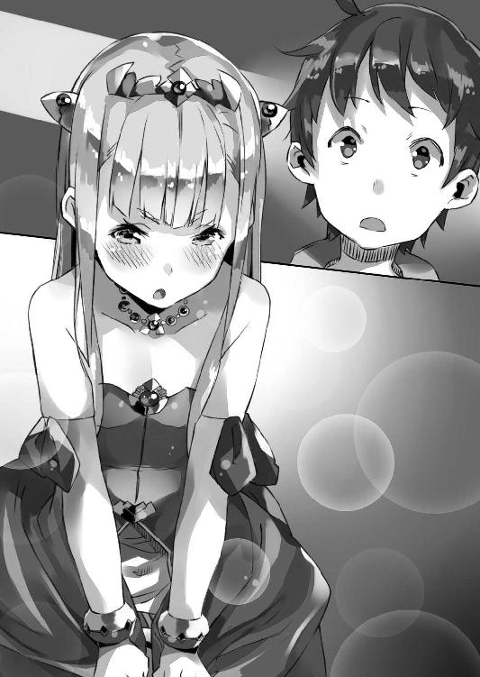
「妾は汝のおかげで......」
そこまで言って──しかし何か途中で考えが変わったのか、ペトラルカはその小さな唇を閉じてそっぽを向いてしまう。
「......もうよいわ！」
「え？ な、何？ なんで怒ってるの？」
「怒ってなどおらん！」
腕を組んで明後日の方向を向いたまま、そう言うペトラルカ。
いや、怒ってるでしょ、明らかに。
何なんだよもう......
僕がご機嫌斜めの皇帝陛下を前に、困り果てていると──
「──陛下」
ペトラルカに声を掛けたのは──ミュセルだった。
「シンイチ様は、謙虚な方ですから......」
「──はい？」
予想外の評価に僕は思わず間の抜けた声を漏らした。
謙虚？ え？ それ僕のこと？
いったい、何の話？
「これは謙虚というのとは違うわ。単に鈍いだけじゃ」
とペトラルカが応じる。
「この調子だと、屋敷でも似たようなもんじゃろう。ミュセル、汝も何かと苦労が絶えぬであろうな」
「いえ、そんなことは......」
と言いつつ──『ええまあ』ってな感じで苦笑を浮かべるミュセル。
何なの、この会話？
これがガールズトークってやつですか!?（違います）
僕だけが分からない様子で、ただ混乱していると──
「──そういえば」
ミュセルとの会話で、とりあえず怒りが収まったのか......ペトラルカはふと、何かを思いだした様子で表情を切り替えてこちらに向き直った。
「今日、魔法関係で、変わったことはなかったか？」
「変わったこと？」
ペトラルカからの質問に、僕は美埜里さんと光流さん、さらにミュセルの顔を見やる。
しかし三人とも、僕と目が合うと、不思議そうに首を傾げた。思い当たることはない、ということだろう。
「特に何もなかったと思うけど......」
それは僕も同じだ。
しかし......
「何かあったの？」
「最近、精霊の様子がおかしくての」
ペトラルカは腕を組みながらそう言った。
「そのせいで魔法に影響が出ておるのじゃ。それを調べるのもあって、最近忙しくてな」
ペトラルカは長々と溜め息をついた。
............
そもそも精霊とは。
魔力がなんらかの理由で一定密度以上に凝った結果、塊と成り、生き物であるかのように振る舞う存在なんだとか。つまり精霊とは一種の『現象』であり......極論すれば精霊も魔力も基本的には同じものだ。
そして魔力がこの異世界のどこにでもあるように、精霊もこの世界に遍在する。
だからこそこの世界では魔法が一般的な技術として普及し、当たり前のように人々の生活を支えている。僕達が着けている魔章指輪はその典型だし、エルダント城のトイレを風洗する魔法使いっていうのも、その一例だ。
だけど......
ここ最近、どうも、その精霊の数や魔力の濃度に、著しい偏りができているらしいのだ。
もちろん、ちょっとした偏差は、以前からも知られていたけど、実質的に問題が出るほどではなかった。だが最近は、突発的に魔法が使えなくなって、小規模ながら事故が起きたりもしているという。
「そういえば......」
教室でのことを僕は思い出した。
フィギュアを動かしていたドワーフ達。
確かに彼らの魔法が、なんの前触れもなく、突然使えなくなっていた──
「何か思い当たることでもあるのか？」
僕の表情から何かを察したのか、ペトラルカが尋ねてくる。
「それが原因かは分からないけど、教室で生徒の魔法が一時的に使えなくなって......。すぐに治まったんだけど......」
「そうか......」
ペトラルカが小さく唸る。
「その現象は今後、より深刻なものになると予測されているのですか？」
と美埜里さんが尋ねる。
「分からん」
ペトラルカは首を振った。
「そうなるかもしれんし、ならんかもしれん。本当にこんなことは初めてでな」
「もし、それが大規模災害になり得るなら、できるだけ早く教えてください。災害救助は我々の本領です。災害そのものは防ぐ手段を持たなくても、魔力に依存しない我々ならばできることは少なくないはずです」
と美埜里さんは言った。
おお。さすがは自衛隊。
「分かった。感謝する」
ペトラルカは皇帝陛下としての威厳ある表情で頷いた。
「また詳しいことが分かれば、其方らにも教えよう」
スマートフォンで確認すると、時刻はすでに午後十時を回っていた。
ごく一部にしか電気関係施設のないこの神聖エルダント帝国では、世界の殆どが、成す術もなく闇に覆われる時間帯──つまり真夜中だ。
特に今夜は曇り空、月も出ていないので、なおさらに夜の闇が濃い。
部屋の中にはいつものオイル・ランプに加えて、精霊灯──魔法で精霊を硝子球に封じ込めたものらしい──の白い光が満ちていて、窓辺から染み入ってくる夜の色を食い止めている。
「ふー......」
一段落したところで僕はパソコンから手を離し──ぐるぐると肩を回して凝りをほぐす。
ロロンの『教育』絡みの仕事が増えた分、ここしばらく、僕は夜更かしすることが多い。ベッドに入るのは日が変わってから、二時、三時、なんてこともしばしばだ。朝がだいたい六時起きってことを考えると、ちょっと辛い。
そんなことを考えながら、僕が欠伸を嚙み殺していると──
「──旦那様」
扉を叩く音と共に僕を呼ぶ声がする。
「お茶をお持ちしました」
「ミュセル？ いいよ──入って」
「失礼します」
僕が許可を出すと、扉を開いてミュセルが入ってきた。
いや。彼女だけじゃない。お茶の道具一式をワゴンに載せた彼女の後ろには、ひょこっと顔を出す感じでこちらを覗いているエルビアの姿もあった。
珍しいな。
絵を描いているときは別だけど、そうでないなら、エルビアはたいてい、早寝早起きで──十時頃にはもう踏んでも起きないくらいにぐっすり熟睡してるはずだ。つくづくスパイの類には向いてない子だけど、まあそれはいまさらなのでさておいて。
「えへへ。アタシも......」
何か照れたように笑いながら、エルビアも部屋の中に入ってくる。
「今日は、お夜食にラドセンを焼いてみました」
言いながら、ミュセルは──茶器とは別に、皿の上に二枚重ねられたそれを示す。妙に白く平べったい感じで、所々がうっすら焦げている感じの......これはパンなのかな？
「らどせん？」
「バハイラムの方で食べられるパンだそうです。エルビアさんに教えてもらいました」
「エルビアに？」
僕がエルビアの方を見ると、バハイラム出身の獣っ娘は、『てへへ』とまた恥ずかしそうに笑う。何なんだよ。可愛いなあもう！
いやそうじゃなくて。あんまりエルビアって料理とかしない印象だけど。レシピとかをミュセルに教えたのではなくて、単に、そういう料理があるってことをミュセルに教えただけなのかな。
「お祝い事などに焼くらしくて、元気が出るんだとか。本来は専用の釜で焼くらしいのですが、さすがにそれは用意できなかったので、少しエルダント流になってますけれど」
ミュセルは微笑して続けた。
「へえ......なんかインド料理のナンみたいだな」
一口千切って口に運ぶと、確かにパンはパンなんだけど、ほのかに甘い。
砂糖とかの後付けされた甘みじゃなくて、これはたぶん、食材そのものの甘みなんだろう。
素朴に美味しい。そんな感じだ。
隣には何かのペーストらしきものが盛られた皿もあって、素朴な味に飽きてきたら、これを付けて食べるらしい。何というか、アジアの民族料理、って感じで──確かにバハイラムっぽい気はする。
「シンイチ様がお疲れの様子なので、エルビアさんが心配して......」
「あ、や、その──」
少し慌てた様子で両手を振りながらエルビアが言った。
「よ、余計なお世話かもしれないすけど、なんかアマ姉が根詰めてるときと似てるような気がして......何か大変な仕事なのかなって思ったんすよ、その、それだけで......」
「あー......」
ちょっと申し訳なくなって僕は頰を搔いた。
ペトラルカの『身代わり』計画は、バハイラムの密偵という立場のエルビアには教えていない。なので彼女は僕達が何に忙殺されて疲れているのかも、分からないだろう。
だから、僕達が忙しくしている一方で、何だか自分一人がのけ者にされているようで、不安に思うのかもしれない。
「エルビアを仲間はずれにしたくてしてるわけじゃないんだけどね──ごめん」
「や、違うっすよ」
とエルビアはぷるぷると首を振る。
「アタシはただ、本当に、シンイチ様が──その」
そこまで言ってから──エルビアは、恥ずかしさに耐えられない、といった感じに俯いてしまう。
おお、新鮮......！
というか『月のアレ』──月に一度の発情期のときには、ハアハア言いながら押し倒してくる一方で、こんな初々しく恥じらう仕草見せられると、こう、落差で萌えが増幅されまくっちゃうだろ！ はっ──まさかそれが狙い？ 計算か、計算でしているのか、エルビア、恐ろしい子ッ！
........................まあこの子に限ってはそんなわけないだろうけど。存在自体が途方もなくあざとい一方で、自分自身ではそれを利用するってことを考えもつかないお間抜けさんである。そこがまた可愛いんだけどさ。
ともあれ......
「エルビアさんも、ただ、シンイチ様のお身体が心配なのかと」
ミュセルが助け船を出すようにそう言い添える。
「エルビア──も？」
「はい。エルビアさんも」
とミュセルは頷いた。
「もちろん、陛下も──です」
そう言うミュセルの顔は確信に満ちているというか、まるで当然のことを、改めて確認するかの如く、口にしているかのような......そんな言い方だった。『分かってらっしゃいますよね？』と言外に匂わせるような。
「......そういえばさ」
ふと僕はあることを思い出して問うてみた。
「昼間、ペトラルカが怒ってて、ミュセルが謙虚がどうのって言ってとりなしてくれたでしょ。あれどういう意味？」
「え？ あ......はい、すみません」
ミュセルは、少し首を竦めるようにして言った。
「差し出がましいとは思ったのですが......」
「別にそうは思わないけどさ」
ミュセルとペトラルカには分かって、僕にはまるで分からない、というのもちょっと寂しい気がする。自分のことだから、なおさら、分からないままだと落ち着かないというか。
「シンイチ様は......御自身は、お気づきになっておられないのかもしれませんが──接する人を、変える力をお持ちです」
「............へ？」
何その能力。
まさか、実は自覚がないだけで、僕は異能に目覚めていたのか!?
能力名『自動触媒』ッ！ その能力は、接する者を変えるッ！
......ってわけでも、ないみたいだけど。
「私も、陛下も、エルビアさんも」
そう言ってミュセルはちらりと傍らのエルビアを振り返る。
エルビアは今一つ、話が分かっていない様子で首を傾げているけれど──
「ブルークさんも、シェリスさんも、それにたぶん......教室の皆さんも。皆、シンイチ様のお陰で、少しずつですが、変わりました。学校の授業で。さっかーの御前試合で。エイガのサツエイで。バハイラムでのことで。シンイチ様のお近くにいた人達は、皆──」
「いやいやいや」
僕は首を振った。
「それは僕の力とかじゃなくて......」
単に結果だ。
僕の周りの人達が少しずつ変わっていってるのは事実なんだろう。
ミュセルは以前のように、些細なことにもいちいち怯えるようなことはなくなったし、ペトラルカもミュセルと仲良くなったことで、あまり亜人種やハーフエルフを見下すような発言をしなくなった。エルビアも知り合った当初に比べると、より明るくなったというか、少し吹っ切れて、より屈託がない感じになってると思う。
でもそれは......あくまで、それぞれの人を取り巻く環境が変わったからで。
たとえばペトラルカのそれだって、ミュセルが命懸けで彼女を庇った結果、そうなっただけで、僕が直接何かをしたわけじゃない。強いて言うならそれは環境の変化に対して、皆が、自分から変わっていったのだ。
そして環境の変化についても、それをもたらしたのは僕ではなくて、あくまで、〈アミュテック〉社を中心とした、各種オタク文化の流入だ。極端に言えば、〈アミュテック〉の総支配人は他の人であったとしても、同じことが起こっていた可能性は──たとえば光流さんだったとしても──高い。
「それは僕の能力じゃなくて、たまたま、変える切っ掛けが僕の周りの出来事だっただけだよ。皆、自分から変わっただけで──」
「はい」
何故か──とても嬉しそうに、ミュセルは頷いた。
いや。普段が普段なので、なかなかそうは見えないのだけれど......これは、むしろミュセル的には『ドヤ顔』だったりするのか？
「シンイチ様は、いつも、そうおっしゃいます」
「......え？」
「御自分の手柄だと誇ったりなさいません」
「手柄って......ああ、そういうことか」
謙虚云々の言葉に僕はようやく合点がいった。
ペトラルカもミュセル同様、自分が『変わった』ことに自覚があって。
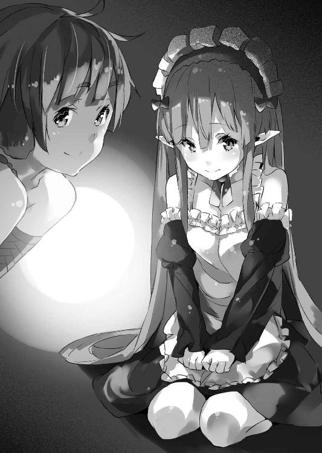
それを僕のお陰......と考えてくれているらしいのだ。改めて思い返してみると『得意技』云々はその辺から来た言葉なんだろう。
「陛下も、シンイチ様なら、ロロンさんのことも──皆にも、彼女自身にも、良い方向へと変えてくれる、そうお考えなのでしょう」
「買いかぶりだと思うな......」
皆を変えた『力』があるのだとすれば、それは僕の力なんかではなく、たぶん、漫画やアニメやゲームや......そういったものの備えていた力だ。そして同時にそれを選び取って、そこから何かを読み取った皆自身の力だろう。
僕は何も強制しない。
僕はただ『どうですか？』と提示するだけ。
無責任な気もするけれど──それが、この異世界における僕の立ち位置だ。
ずっとそれだけは意識して動いてきたつもりだ。もしその姿勢を忘れれば、たぶん、僕はあっという間に、侵略者になってしまうから。
ただ、それだけの──こと。
でも......
「買いかぶりじゃねえっすよ!?」
とエルビアまでそんなことを言ってきてくれる。
「現に、アタシは、アマ姉と仲直りできたっす！」
「それは......」
本当に、もう、単なる成り行きで。
そう言おうとして──
「いや......」
僕は少し考え直した。
僕に限らずディープなオタクってのは、どこか自己評価が低いというか、世間的には特殊で馬鹿にされやすい少数派ってことを自覚している。その結果、何事にも妙に意固地になったり、卑屈になる傾向が強い。たとえば何かを褒められても、なかなかそれを素直に受け入れられないのだ。
どうせ裏があるんだろ、とか。
ぬか喜びすると後が怖い、とか。
けれど──否定ばかりしていても意味がない。
「そう言ってもらえると嬉しいよ。ありがとう」
僕は苦笑してそう答えた。
「............」
「............」
ミュセルとエルビアは顔を見合わせる。
やがて、どちらからともなく、顔をほころばせて──
「はい！」
二人の少女は嬉しそうに頷いてくれた。
それは──突然訪れた。
いつもの学校。いつもの休み時間。いつもの光景。
本来ならば、ことさら、記憶に留めることすらないような──繰り返される日常。
教室ではドワーフ以外にまですっかり定着した、魔法による人形遊びが行われていた。
「だから僕の名前はバニーじゃなくて......」
ある者はバディ・ヒーローものアニメに出てくる登場人物の人形を。
「撃っていいのは撃たれる覚悟のある奴だけだ！」
ある者は『闇の騎士団～反逆の零～』で大活躍する登場人物の人形を。
「私って本当バカ......」
またある者は『レンタル☆まどか』に出てくる登場人物の人形を。
それぞれ別々の場所で好き勝手に動かしていた。
机という小さな舞台でアニメの一場面を演じる小さな似姿達。
それらが──
「──!?」
一斉に倒れた。
ばたばたと──まるで糸の切れた操り人形の如くに、ほとんど時間差もなく、揃って。
それはまるで、何かの兵器による虐殺場面を見ているかのようだった。
魔法という命を失い、モノに戻って動かなくなる人形達。
そしてそれを呆然と見ている生徒達。
いや──それだけでなく。
「え......？」
最初に困惑の声を上げたのは、誰だっただろう。
誰もが咄嗟に、魔法の呪文を再詠唱し、人形を起こそうとする。だが人形達は倒れたままぴくりとも動かない。もちろんそれはただの玩具なのだけど、人の形をしたものがあちこちで力なく横たわっている様は、死体が散在しているかのようなおぞましさがあった。
だがそれは......それすらもが、実は前触れに過ぎなかった。
「............あ」
最初に倒れたのは、誰だったろう。
がたがたと音を立てて、生徒達の何人かが床に転がる。まるで人形の後を追ったかのように──人形に蔓延した疫病が、人間にまで感染したかのように、生徒達がばたばたと倒れ伏していくのだ。
「なんだ!?」
「眠............」
そう呟いてロイクが倒れ──その隣でロミルダまでが壁に額をつけたまま、ずるずると床に座り込み、そのままやはり倒れてしまった。
「なんだよ!? なんなんだよこれ!?」
僕は思わず叫ぶ。
人形が動かなくなるのは前にも見た。
だけど──生徒までって、なんだこれ!?
いや、そういえば......前に人形が動かなくなったとき、ロミルダ達が欠伸を嚙み殺して眠そうにしていた。ひょっとして、あのときと同じなのか？
でも──
「先生っ!?」
数名の生徒が不安げに僕の方を振り返るが、僕も混乱していて、何がなんだか分からない。
だけど──
「......どういうことだ？」
倒れている生徒がいる。
まるで平気な生徒もいる。
両者の差は──
「エルフやドワーフだけ!?」
そう。
気を失っているのはエルフやドワーフだけだ。教室にいる人間の生徒は、誰一人として倒れておらず、逆に、エルフやドワーフは揃って眠ってしまっている。
つまり──
「──ミュセル!?」
僕ははっとして教室でも僕の側についていてくれたメイドさんの方を振り向く。
彼女は──
「............」
「ミュセル！」
僕が再度呼び掛けると、はっとしたように目を瞬かせてこちらに視線を向けてくる。
しかし、どこかその表情は気怠げで、全体的に緩い。
まるで強烈な睡魔に抗っているかのようで──
「どうしたの、ミュセル？」
「あ......申し訳ございません、旦那様」
ミュセルは頭を振りながら言った。
「なんだか......眠くて」
「眠い？ 眠いって──」
なんでいきなり？
生徒達の魔法が使えなくなったのと関係があるのか!?
「先生──」
「魔法が......」
生徒達が今にも泣きそうな声で訴えてくる。
魔法が使えない。倒れた同級生を起こそうと、何かの魔法を使おうとした者もいたみたいだけど、まったく反応がないらしい。効かないというより、魔法そのものがまったく起動しないらしいのだ。
これって──
（ペトラルカの言ってた......）
魔力の局所的な偏差。
魔力の──欠乏。
「馬鹿な......」
僕は──焦りで心臓が早鐘のように打つのを感じた。
この世界にとっての魔法は、僕達の世界でいうところの電気みたいなものだ。当たり前のように存在し、人々の生活に密着し、これを支えている。それが、原因も分からずいきなり使えなくなったとなれば──どうなるか。
エルフやドワーフが倒れたのもそのせい？
だとすると──
「あれ何!?」
ざわめく教室の中で誰かが叫ぶ。
生徒の何人かが窓の外を指差していた。
僕も彼らの視線を追って窓の外へと目を向ける。
そこには──
「............ッ!?」
僕は思わず息を吞んだ。
それは、黒くて歪な、『柱』だった。
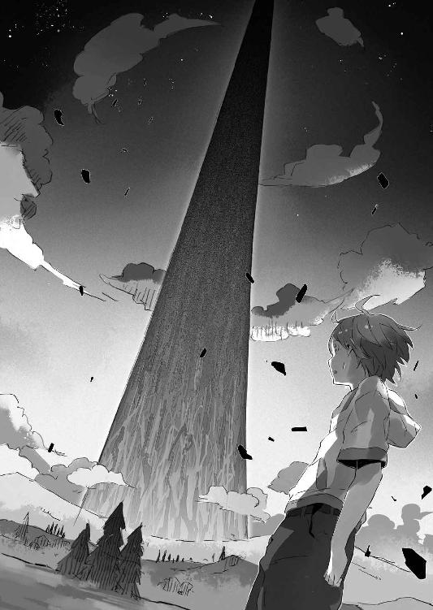
窓の外の風景を──空と地を繫ぐようにして上下に伸びて、世界を左右に分断する、闇色の一線。距離はよく分からないけれど、決して小さなものでないことだけは分かった。太くなったり細くなったり、曲がったりしている様は、むしろ竜巻に近いけれど──その手の自然現象につきものの、大気の唸りは、まったく聞こえてこない。
よく見ると、黒い『柱』の周辺で、きらりきらりと瞬いては消えていく光が無数にあるのが分かった。黒い『柱』が回転していて、それに何かが巻き込まれている──そんなふうにも見える。
ひどく不気味で禍々しい代物だった。
しかし......
「いったい何なのあれ!?」
突然魔法が使えなくなる事態と、級友達の昏睡と──そしていつの間にか現れた正体不明の物体。
それらが重なって、無事な生徒達に混乱が走る。
「なんでこんなときに魔法が使えないんだよ!?」
「やばいよ!? なんだかやばいよ!?」
「ひょっとして、僕らここで死ぬの!?」
「やだあ！」
逃げ出そうと、教室の出入り口に殺到する生徒達。
何人かは咄嗟になんらかの魔法を使おうとしたみたいだけど、やはり効果は顕れず──それがさらに混乱を呼ぶ。
「み、みんな落ち着いて！」
まだ少し眠そうなミュセルと一緒に、教室の混乱を治めようとするのだけれど、僕達の声は教室の喧騒にかき消される。
そんな教室に、一人の女性が駆け込んできた。
「慎一君！」
「美埜里さん！」
力ずくで生徒の波を搔き分けた美埜里さんは、急いだ様子で僕の許に駆け寄ってくる。
「ま、魔法がいきなり使えなくて......ロイク達が倒れて......それで、変なもの......！」
「分かってる。学校中混乱してるわ」
慌てて状況を説明しようとした僕だけれど、美埜里さんもその辺はすでに承知らしい。ということはこの異常事態はこの教室だけでなく、学校全体──いや場合によってはこの地域全体に及んでいる？
「............」
美埜里さんは真剣な瞳で教室を見回す。
そして──
「みんな落ち着きなさい！」
鼓膜を直接ひっぱたくような、強烈な轟音が教室に響く。
それは生徒達の恐慌を一瞬にして鎮めていた。それこそ爆風による油田火災の鎮火と同じである。皆の視線は、頭上に向けて９ミリ拳銃を発砲した美埜里さんへと、集中していた。
「慌てたら助かるものも助からないわよ」
静まり返った教室に、美埜里さんの声が響く。
「今のところ、明らかな異常は魔法が使えないことと、エルフやドワーフが昏睡してしまったこと『だけ』です。別に火事が起こっているわけでも、地震や津波が襲ってきたわけでもない。落ち着いて、動ける人はいったん、家に帰りなさい。それからさらに避難が必要な場合は、各家に報せが来るはずです」
「............」
生徒達は顔を見合わせる。
美埜里さんはそれから僕達の方を振り返り──
「駐屯地の自衛隊と連絡をとったわ。ＬＡＶが二台、救急医療キットを持ってこっちに向かってる。エルフとドワーフの生徒達はそちらに任せましょう」
「あ......はい」
「私達は入れ替わりに、エルダント城へ向かいましょう。陛下の方でももう状況は把握しているでしょうけど、学校で起きたこの現象も報告しておいた方が良いはずだし」
「は、はい！」
９ミリ拳銃を元の位置に戻して、早口に指示を出す美埜里さんに、僕は急いで頷く。
さすがは自衛官。非常事態、緊急事態でも落ち着いているし、頼りになる。
美埜里さんがいてくれて本当に良かった......
「それにしても、どういうことなんだ......」
「エルフとドワーフだけが倒れているのよね」
確認するように美埜里さんが問うてくる。
「はい」
「でもミュセルは平気なの？」
「それは──」
問われて僕は美埜里さんと一緒にミュセルを振り返る。
彼女はやはりどこか眠そうというか、気怠そうにしていたけれど、それでも倒れたり眠ったりすることなく立っていた。
「ちょっとだるいですけど......大丈夫です」
ミュセルは頷いた。
「影響を受けてないわけじゃない──ってことよね」
美埜里さんが思案顔で言った。
「そうなりますか」
「たぶん、彼女はハーフエルフだから、昏倒せずに済んでいるんでしょう。逆に言えばこの魔力の欠乏現象、エルフやドワーフといった『妖精種族』に強い影響があるのよ」
「......それって」
エルフやドワーフは人間よりも魔力に優れる。
魔力を扱うことに適応──最適化されていると言っても良いのではないか。
つまり、ドラゴンのように、半精霊生物としての側面を持っているとも言える？
だとすれば......
「肉体の新陳代謝系に魔力によるものが関わっているとしたら？」
「............！」
魔力の欠乏による魔力代謝系の停止。
それがロイクやロミルダ達を眠らせてしまったとしたら......？
「ミュセル。悪いけど貴女はここに残って。佐藤一尉達が来たら、彼らに協力して。貴女という症例があれば、エルフやドワーフ達への応急処置の、参考になるかもしれない」
「わ、分かりました！」
眠気を振り払うように何度も頷いて、ぐっと両の拳を握り込むミュセル。
「皆、いいわね？」
改めて生徒達に美埜里さんが告げる。
「落ち着いて行動しなさい！ 少なくとも現時点で、人間への影響はほとんどないわ！ 焦ってよけいなことをしないように！」
「は......はい！」
生徒達が頷くのを確認すると、美埜里さんは僕の襟首を摑んで言った。
「慎一君、行くわよ！」
「はいっ......！」
美埜里さんに引きずられるようにしながら、僕は教室を出る。
視線で不安げに僕の姿を追う生徒達とミュセルに──僕は叫んだ。
「皆、美埜里さんの言うことを聞いて！ ミュセル──後お願い！」
わけの分からないこの状況、今の僕にできるのは、それが精一杯だった。
教室を出た僕と美埜里さんは、別室にいた光流さんと合流し、大急ぎで神聖エルダント城へとやってきた。とりあえず羽車の鳥は魔力とは関係ない生き物だったみたいで、普通に頑張って僕達を運んでくれたけど──徒歩だったらどうなっていたことか。
ペトラルカに重要報告があると告げたおかげで、謁見の間にはすぐに通された。
けれど──城内はすでに、その時点で、僕達にはほとんど構っていられないほどに慌ただしくなっていた。数多くの人々が、落ち着きなく歩き回っている。おそらく現場に出ることの多い騎士達などは、立ち止まって会話するのも惜しい、といった感じで、走りながら怒鳴り合うような大声で喋っていた。
これでは、まるで戦場──最前線だ。
「いったい何が......」
何が起きているというのか。
不安を抱えつつ謁見の間で待っていると──しばらくしてペトラルカが姿を現した。
彼女はザハール宰相を従えて足早に僕達の前にやってくると、玉座に座ることもなく、硬い表情で言う。
「挨拶も前置きも要らん。手短に話せ」
まるで喧嘩腰の物言いだけど、だからこそ今が、どれだけ深刻な事態なのかが分かる。
実のところ、こんなペトラルカは初めて見た。
「学校から、黒い『柱』のような物体が見えました。同時に生徒達が魔法を使えなくなり、エルフとドワーフの生徒のみが昏倒するという現象が生じています」
「やはりそうか」
美埜里さんの報告に、ペトラルカが苦い顔をする。
「やはりって......？」
僕は思わず聞き返す。
「この前、精霊の様子が最近おかしいということは話したな？」
「う、うん......」
詳しいことが分かれば教える、と言われていたあのことか。
「一部で極端に精霊の数が減り、魔力の均衡が乱れておるのじゃ。もちろん、通常はすぐに乱れは収まる。だが今回の精霊や魔力の減少は、桁が違う。原因はまだ分からん。だが、結果として魔力を吸い込む渦が生じた」
「魔力を──吸い込む？」
「魔法が使えなくなるのは、ドラゴンに魔法が通じないのと同じ理屈じゃ。だが今回の元凶は生き物ではない。むしろ竜巻、いや、渦のようなものじゃな」
とペトラルカは人差し指をくるりと回してみせた。
「......ものすごく大きな魔力の欠落に、周囲の魔力が流れ込もうとして？」
「そうじゃ」
頷くペトラルカ。
僕が咄嗟に想像したのは──風呂の排水孔だった。
「エルフやドワーフは我々人間よりも魔力に依存する部分が大きい。眠ってしまったというのはそのせいじゃな。すぐに取り返しのつかないような深刻なことにはならん、というのが、御殿医の判断じゃが......前例のないことであるから、確実なことは何も言えん」
「そんな......」
「魔法使い達によれば、魔力の欠落は、あちらこちらで起きているが──まだマリノス全体には広がっておらん。この城もまだ、くだんの現象は起きておらんしな。だがいつどこに魔力の欠落が生じるかは分からん」
「あの黒い『柱』の周りだけじゃないってこと？」
「魔法使いによると、あれは『影』じゃ」
とペトラルカは言った。
「あるいは蜃気楼といったところか。あれそのものが魔力を吸い込んでいるのではない。近くに......おそらくは『柱』の根本の辺りにある何かが、渦を作り出しておるのじゃ」
「虚像......か」
「具体的な被害状況については──現在、騎士団と宮廷魔術師団が総掛かりで調べておる。今のところ、死傷者は出ておらんが、治療院や、工房など、魔法でその機能を維持している施設も少なくないのでな」
この国──いやこの世界にとって魔法は当たり前のものだ。
だからそれが欠落することは、この世界の『日常』が失われることに等しい。
僕らの世界でいえば、大規模停電が、いつ、どの地域に起こるか分からない状態に等しい。
めちゃくちゃ大変な事態だ。
どうすんだこれ!?
「......万一の場合を考えて、城下の市民には避難を促しておりまする」
ザハール宰相が言った。
「シンイチ殿も、〈アミュテック〉の皆様方も、それに倣われるが良いかと」
「............」
極端な話、何が起こるか分からないってことね。
しかし......
「......ペトラルカは？」
ふと気になって僕は尋ねた。
「む？ 妾がどうした？」
「いや、その......避難するの？」
「たわけ」
ペトラルカは顔をしかめて言った。
「妾は皇帝じゃぞ。しかもここは帝国の要、首都マリノス──我が街じゃ。最後までここに残って、ことの次第を見届けねばならん」
「そんな......」
市民に避難を促すほどの事態。それなのに逃げない？
漫画やアニメの世界じゃ、王様は真っ先に安全な場所へ逃げるものだけど。
「そもそも、ガリウスを──騎士達を現場に向かわせておいて、妾だけ逃げるわけにもいかんじゃろう」
「............」
「そう怯えるな。今のところ、人間そのものには何も影響は出ておらん」
不安げな僕の顔を見て──ペトラルカは元気付けるかのように笑ってそう言った。
小さな身体で勇ましく災害の現場に踏みとどまる皇帝陛下。
僕は......胸が痛んだ。
「陛下──」
美埜里さんが言った。
「ご存じの通り、あの黒い『柱』の真下には、超空間通路が存在します」
「え？ そうなの!?」
と間の抜けた声を上げたのは僕だ。
もちろん、最初から知っていたであろうペトラルカは小さく頷いただけである。
僕の隣の光流さんも驚いた様子がないから、彼はたぶん、知っていたのだろう。
「超空間通路はまだ原理の解明されない現象。なんらかの魔力によって、自然発生的に形作られているとの可能性も示唆されております」
「............！」
僕はその指摘に息を吞んだ。
つまり......場合によっては、超空間通路が消える!?
「超空間通路が失われたとなれば、我らも故国に戻る術を失います。決して他人事ではありません。エルダント派遣部隊はすでに全員、完全装備で待機中です。我々の装備は魔法に関係しませんので、今回の現象の影響を受けません。我々にも事態に対応できるよう、独自に展開し、活動することをお許しいただきたい──エルダント派遣部隊指揮官、佐藤一尉からの要請です」
「それは願ってもないことです」
とザハール宰相が頷く。
しかし──
「おそらく陛下や宰相殿もお気づきの通り──」
美埜里さんの口調が、やや自信なさげに揺れた。
「ことは、魔力や精霊の分野。実体のあるドラゴンならばともかく、『影』に我々の装備がどこまで通用するかは、分かりません」
「確かにな」
渋い顔でペトラルカが頷く。
そう──あくまで自衛隊の武器は物理兵器だ。
魔法の現象にどれだけ影響を及ぼすことができるか、分からない。魔法も物理現象に転化する以上、まったく無関係、というわけではないだろうけど......いまひとつ僕らにはその原理が分かっていない以上、その威力のほとんどを無駄なところに注いでしまう可能性は否定できないのだ。
「無論、汝らにすべて任せてしまうような真似はせん。我らも最善は尽くす。しかし──シンイチ、ヒカル、汝らは避難せい。騎士に足の速い羽車を用意させる」
「ペトラルカ......でも僕らは人間だから危険は──」
「消えた魔力がどうなったのか分からんのじゃぞ」
ペトラルカが僕の言葉に覆い被せるように言った。
「不意に炎や雷となって現れるかもしれんのだ。それもシンイチ、汝の頭上にな」
「............！ でもそれじゃ」
危険なのはペトラルカも一緒だ。
「ごちゃごちゃ言っとらんで避難せい。命じたからな！ ──報告、ご苦労であった」
そう告げてペトラルカは僕達に背を向けてしまう。
「──こちらへ」
謁見の間の入り口に控えていた騎士二人がやってきて、僕達を促す。
しかし──
「ペトラルカ！」
「............」
僕の叫びに、ペトラルカは一瞬、足を止めた。
けれど振り返ることはなく──彼女はそのまま謁見の間を出ていってしまった。
こうなっては僕がここに残る意味はない。
けど──なんだかさっきのやりとり、死亡フラグみたいで落ち着かない。むしろ沈む船と運命を共にする艦長みたいな、そんな悲壮感を僕が覚えたのは、考えすぎか。
しかし......
「行きましょう」
諭すような口調で美埜里さんが僕に囁いた。
廊下を進み。階段を降りて。
騎士達に案内されながら僕達は避難のため、エルダント城の城門へと向かっていた。
「............」
誰も何も言わない。
皆、今のこの状況の中で、お喋りができるほどの余裕もないのだ。
エルダント帝国は、ペトラルカは、大丈夫なんだろうか。
不安が胸の中に募る。しかし口に出すことはない。口に出しても仕方ない──子供の駄々と同じだと分かっていたからだ。
「............」
そして──ふと。
僕は視界の端にそれを見た。
（──保管庫）
以前に見たあの危険物の保管庫──その扉だ。
分厚いそれに近づき、そしてその前を通り過ぎながら、ふと考える。
突如発生した、あの黒い『柱』。
精霊や魔力を吸い込む──渦。
それはきっと魔力の極端な偏差が生んだ自然現象で。
たとえば台風とか竜巻とかのような。
そう。現象なのだ。
つまり別に確固たる物体として存在しているものじゃない。それそのものは周囲の環境が生み出した偏り、あるいは歪みでしかなくて。膨大な力を発揮するから、ついつい僕らは勘違いしそうになるけれど、あれは、もともと不安定なものなのだ。
だとしたら......
「............」
僕は考える。
かつてアメリカだったかどこだったかの国が、台風に核爆弾をぶつけて、これを消そうとする計画があったそうだ。実際には台風の持つエネルギーは核爆弾の一発や二発では相殺できるものでもなく、計画は頓挫したそうだけど。
「............」
僕達は外に出た。
今は開きっぱなしになっている城門の前に、羽車が一台、停まっている。
騎士達に促されるままに、美埜里さんと光流さんがそれに乗り込むのを見ながら、僕は自分の口から独り言が漏れるのを聞いていた。
「油田火災を消すのも、爆薬使ったりするしね......」
「慎一君？」
羽車に乗らない僕を不審に思ったのか、美埜里さんが羽車から顔を覗かせる。
「どうしたの？ 早く乗......」
「美埜里さん、僕いい案が浮かんだんです」
「え？」
「成功するかは分からないんですけど......やってみなくちゃ分からないから」
「それってどういう......」
「先に行っててください！」
聞き返そうとした美埜里さんを遮って、僕は城内に向かって走り出した。
背後から、美埜里さんと騎士が僕を引き止める声がする。
でもそれを無視して僕は再び城の中へと駆け込んだ。
無茶は承知。緊急事態なのだ。
やれるだけのことはやらなくちゃ。
もしこれが上手くいったら、みんな助けられる。僕達も、あの黒い『柱』の調査に向かった騎士や魔法使いも、自衛隊も──城に残っているペトラルカも。
「やっべえ、僕、主人公みたいだよ！」
じわりと全身から滲む緊張感を、軽口でごまかしながら......僕は例の、〈駆逐する炎〉が納められているという保管庫に向けて走った。
僕の名は加納慎一。
元自宅警備員のオタクだ。
「............」
つまりそれって別に超常能力があるわけでも、屈強な戦闘力があるわけでもないってことで。
他にも主人公に必須のいろいろな要素を備えているわけでもないってことで。
だから──
「僕ってほんと、馬鹿......」
主人公だと思った？
残念、ただの間抜けちゃんでした。
............
「あー............どうしよう」
格好良く飛び出してきたのはいいけれど。
奇跡的に迷わなかったのもいいけれど。
いざ、保管庫の前に来て僕は気付いた。
「開かない......」
扉には鍵がかかっていて、取っ手を握って押したり引いたりしてみるのだがびくともしない。単純な鍵ではなくて、これってたぶん、僕らの屋敷にも使われてる魔法の鍵だ。
だとするととてもじゃないけど僕には開けられない。
そういえばペトラルカが言ってたよ、簡単に中のものを持ち出したりなんかできないって！ 考えてみれば当然だ！ うわ、本当に馬鹿だ僕は！ 恥ずかしい！ 穴があったら頭から回転しつつ飛び込みたいぐらい！
「えーと......」
一回ペトラルカのところへ行って事情を話し、扉を開けてもらうとか？
でも今、ペトラルカってどこにいるんだろう。いつも謁見の間や特訓室で会ってばかりいたから、彼女の仕事部屋──執務室とか知らないし、今は、非常時だから、緊急対策室みたいなところにでも詰めてるんだろうか。
どうしたものかとこの期に及んで辺りを見回した僕は......そこで廊下を歩いてくる人影を見つけた。
「......って」
驚いた。
もちろんペトラルカやザハール宰相でもなく、しかし見覚えのある姿。
あれは──
「ロロン!?」
「......シンイチ先生？」
僕の声が聞こえたのか、ロロンは立ち止まって首を傾げる。
「な、なんでここに......!?」
駆け寄る僕に、ロロンはいつもの、ぼんやりした表情で問うてきた。
「避難するよう言われなかったの？」
「避難？」
ロロンは目を瞬かせる。
「城下の市民には避難命令が出てるんだよ」
「そうなんですか。でもこの時間は、陛下の人形を動かすための練習がありますし」
「......おいおい」
どうやら彼女、いつもの『自分規則』に従って、いつもの時間通り、城に通ってきたらしい。よくここまで来られたものだと思うけど──騎士達も忙しくて、彼女を見咎めている暇はなかったのかもしれない。実際、僕も止められなかったし。
「行きましょう先生。時間になってしまいます」
「そんな場合じゃないって！ 君も見ただろ？ あの変な物体」
「見ましたけど。でも今は練習の時間です」
「だから......」
同じ話を延々繰り返しそうな勢いのロロンに──僕は怒りを通り越して呆れた。
もうこれは偏屈とかそんな次元じゃない。
説得とかはとても無理だろうし、逃げるように無理強いしても、泣き出しかねない。
ああもう、こんなときに面倒な──
「......って」
ふと思い立って僕はロロンに尋ねた。
「ロロン、ちょっとこっちに来て──あの扉なんだけど。魔法で鍵が掛かってるみたいなんだけど、開けられないかな？」
「無理です」
あっさりとロロンは言った。
「この種の魔法は、掛けた魔法使いしか解除できません」
「......そういえば、そうだった」
がっくりと項垂れる僕。
しかし──そのとき。
......がこん。
そんな鈍い音がする。
振り返って見ると、固く閉ざされていたはずの扉が、わずかに開いていた。
「......え？ な、なんで」
特に何もしてないのに。
狼狽する僕に──
「魔法が消えてます」
とロロンが疑問に答えてくれた。
「──！」
魔力の消失現象。
いつどこに発生するかも分からないとペトラルカが言っていた──
「......って、ロロン、大丈夫なの？」
「何がですか？」
「いや、ドワーフは......」
魔力の消失現象に晒されると寝ちゃうんじゃなかったっけ。
だけど見た限り、ロロンは特に倒れる様子もない。
「魔力がなくなると寝ちゃうんじゃ？」
「ああ。これがありますから」
そう言ってロロンが腰の後ろから取り出したのは握り拳ほどの水晶だった。
よく見ると水晶の中にぼんやりと光るものが蠢いている。
これって──精霊？
そういえば、〈フェイドラ〉の胸にも、魔力をとじこめておく魔法石みたいなのがあったけど......
「地下は、特に拡張したばかりの坑道などは、魔力が極端に薄い場所もありますから。ドワーフの職人はこういうものを持っているのです」
「酸素ボンベみたいなもんか......」
生徒のドワーフ達はロロンと違って、裕福な家の子弟で、職人として工房にこもったり坑道掘りに潜ったりすることなどないだろう。だからこの魔力ボンベとも言うべき水晶を持っていなかった。そしてロロンも仕事帰りにそのままエルダント城へやってきたからこそ、この水晶を持ち合わせていたのだ。
いずれにせよ......
「じゃあロロン、一緒に来て」
僕は、彼女が来たのはむしろ幸運だと考えることにした。
〈駆逐する炎〉は魔法兵器だ。一応、前に〈憂国士団〉の連中が学校に立てこもったときに彼らがどう扱うのかを見ているし、この前ペトラルカも話していたから、おおむね、使い方は分かる。しかしそれでも魔法に関しては素人同然の僕が一人で持ち出すより、ロロンにいてもらった方が、何かと安心だろう。
しかし──
「それはしてはいけないことです」
ロロンは首を横に振った。
はっきりとした口調に躊躇や逡巡はない。
これもまた彼女の従うべき『規則』なんだろう。
「緊急事態なんだ。この中にあるものを使えば、あの変な物体をどうにかすることができるかもしれない」
「でもそれはしてはいけないことです」
僕の必死の懇願もすぐさま一蹴。
さらにロロンは両手で、僕の右腕を摑んできた。
「今から私達がするべきことは人形操作の練習です。行きましょう先生」
「痛い、痛い、ちょ──ちょっと待って！」
小柄な身体に似合わず、僕を引っ張るその力は強い。
思わず引きずられそうになるのを、必死に踏ん張って僕は堪える。
「そんなことしてる場合じゃないんだよ！ お願いだロロン！ 一緒に──いやそれが無理ならせめて放して！」
「だ......」
「頼むから！ こんなところで間抜けな会話繰り返してる場合じゃないんだってば！」
ロロンにそれ以上拒否の言葉を言う隙を与えず、僕は喚いた。
「ちょっとは融通きかせようよ!!」
「............」
ロロンがびっくりしたように僕の手を放す。
僕が怒鳴った──つもりはなかったけど、そう聞こえたのだろう──ことに驚いたらしかった。確かに僕は今まで彼女に本気で怒鳴ったことは一度もなかった。
しかし......
「で、でも......」
ロロンの表情が強張り、声が急に湿っぽくなっていく。
「規則は、守らなきゃ......守らないと......」
大きな両目は見る見るうちに潤んで、堪えきれない涙が頰を伝い落ちる。
ああああ。またか。
無表情か泣くかって、やたら感情の振り幅でかい上に二択ってのが、もうどうにも......
「私にはできません......気持ち悪い......」
泣きじゃくるロロン。
特訓のときと一緒だ。自分の中の規則を破ろうとすれば、その理由を考える前に感情が高ぶって泣き始めてしまう。こうなってしまえば彼女は考えるのをやめて、ただ泣くだけだ。
いや。もともと彼女は考えていない。
悩まずに済むように規則を最初に定めて──後は思考停止してそれに従い動くだけの、人形になる。ある意味で、彼女は自分自身に人形の呪いを掛けているようなものだった。
気の毒だとは思うが、今は彼女の事情を慮っている余裕なんかない。
「泣かないで！」
「ひっ......？」
怒鳴る僕に、ロロンが小さく息を吞む。
「泣いても何も解決しないだろ!?」
「うぅ......ぐすっ......」
両の手の甲で、ロロンは何度も目を擦る。
そんな彼女の顔を両の掌で挟んで、僕は潤んだ目を覗き込んだ。
「......決まり事を守ることは確かに大事だよ。たいていの場合にはそれが──それで正しいと思う。でも守るってことに固執しないで、守るからどうなるのか、守らないからどうなるのかを考えるべきじゃないの？」
「............？」
わけが分からない、といった様子で僕を見つめるロロン。
僕は根気よくこう言った。
「世話を忘れて鳥が死んだんだってね。それが嫌で、気持ち悪かったんだろ？ できることをしなくて、その結果、鳥が死んじゃったことが、辛かったんだろ？ だからもう二度とそういうことにならないように、自分の好き勝手で動かないように、自分で自分に決まり事を押しつけたんだよね？」
「............」
「でもこのままじゃ、小鳥どころか、人間が──いやドワーフやエルフや、君の知っている誰かが、死んじゃう可能性があるんだよ！ 状況が悪化したら、手遅れになってしまうかもしれない。怪我をする人だって出てくるかも！」
「......っ......」
驚いたように目を見開くロロン。
「逆にもし〈駆逐する炎〉を使って、あの『柱』を消すことができたら......規則を破って勝手なことをしたと怒られるかもしれないけど、それだけだ。成功したらみんな助かる」
「............」
僕の言葉に、ロロンが視線を彷徨わせる。
いつの間にかその目から涙は消えていた。頰に涙の痕だけが残っている。
「君は、結局、何が嫌だった？ 小鳥の世話を忘れて叱られたこと？ それとも小鳥が死んじゃったこと？ それとももっと別の何か？」
「私は......」
僕は初めて、彼女の葛藤する声を聞いた気がする。
もう一押しなのかもしれない。
「君はどうしたいんだい？ しなければならないことじゃなくて、君がやりたいことを、君自身がやりたいことを教えてよ」
と僕はロロンに尋ねる。
しかしこの大マジの場面の説得に、ついつい某ロボットアニメの有名台詞を使っちゃうところが、僕も業の深いオタクだよなあ。しかしバイア●ン・カスタムはどう考えても強すぎだと常々......
いやそれはさておき。
「私......」
ロロンは俯いてしまう。葛藤する気持ちは分かる。
でも時間はあまりない。
「このままじゃ、下手したら誰かが死ぬような騒ぎになるかもしれないんだ」
「............」
「規則を守らなくちゃって言ったよね？ 君が気にしてるのは上手くできないこと？ 友達と疎遠になってしまったこと？ それとも、小鳥を死なせてしまったこと？」
僕の問いかけに──若干、躊躇する間を置いてから、ロロンが呟くように言った。
「死なせてしまったこと......です」
それでもロロンは、そう答えた。
ただ単に、規則を守らなければいけない、と頑なに思い続けてきたロロンが、自分で考えてそう口にした。規則を守ることで思考停止していたこと、規則に逃げ込んで直視しなかった現実にきちんと目を向けた。
それはきっと彼女にとって大きな進歩だ。
だからこそ、しばらくしてから顔を上げた彼女の表情は、今まで僕が見てきたものと、少し違って見えた。どこがどうとは言えないのだけれど。
「分かりました、ご一緒します」
「ありがとう！」
僕は扉を押し開けてロロンと一緒に保管庫に足を踏み入れる。
中には──まるで地獄の底に繫がるかのように、下に向かって螺旋状の階段が延々と続いているのが見えた。
保管庫の中は埃っぽかった。
しかも窓もないから真っ暗だ。ロロンの持つ魔力ボンベ──というかなんというか──の水晶が放つ微かな光がなければ、足元すら見えなかっただろう。
考えてみれば倉庫の類に光は厳禁だ。酸素や温度変化と並んで光は物質を劣化させる原因の代表格である。これは当然の状態だった。
「ええと......」
僕は目を凝らして、乱雑に物が置かれている保管庫の中を見回す。
さまざまな物が置いてあった。
剣や弓など、見た目からして武器と分かるもの。
鏡や椅子など、パッと見はただの調度品にしか見えないもの。
煌びやかなドレスまである。
厳重に保管されていることを考えると、ただの雑貨にしか見えないそれらも、何かしらの魔法具なのかもしれない......
「......あった」
それでも保管庫は、実はそんなに広くなかったようで。
僕はほどなくして、目当てのものを見つけることができた。
棚の上に置かれている、銀色の球体。転がらないよう木枠の土台に固定されており、幾重にも交差した金属の輪が付いている。形だけ見たら地球儀のようだ。
これが、〈駆逐する炎〉。
さらにその隣には、金属製の札のような物体がある。
この金属製の札を、〈駆逐する炎〉の細長い孔に差し込んで呪文を唱えれば、中から炎の精霊が一気に飛び出して、爆発のような現象を起こす──らしい。
僕はまず〈駆逐する炎〉の札を手に持つ。
続く動作で〈駆逐する炎〉本体を持とうとして──
「うえっ!?」
がくんと姿勢を崩した。
重い。なんだこれ!?
僕はてっきりその形からちょっと重めの地球儀、を想像していたのだけれど。これはどう考えても三十キロ以上ある。いったい何でできてるんだ、これ!?
さすがにこんなものを抱えて素早く、あの長い階段を上るのは無理だ。
「どうする──」
僕は辺りを見回すけれど、役に立ちそうなものはない。
「シンイチ先生？」
「重すぎる、急がないといけないのに......」
と僕が呟くと。
「──我は・土の長・岩の長・鉄の長・真なる言葉と・その権限を背に・我は命ず・仮初めなれど・我が命に従うべし（イア・マ・エス・レルー・フオ・エス・スラエ・ルレー・フオ・エス・コー・ルレー・フオ・ノリ・ズロウ・フオ・スルト・エス・シサブ・フオ・イテイロスア・イア・リウ・レドロ・テイ・シ・イラロプメツト・エシールプ・ウオロフ・イム・スレドロ）」
ロロンの呪文詠唱の声が保管庫に朗々と響いた。
同時に──
「──！」
僕達の足元......踏み固められてはいたけれど、剝き出しになっていた土から、ゆっくりと歪な人型がせり上がってくる。
土人形だ。ドワーフ達が作業に使う──
「そうか......」
魔力の欠落は虫食いのように局地的で、しかも変動する。
そしてここではまだ魔法が使えるのだ。
「助かる！」
土人形が〈駆逐する炎〉を抱え上げるのを見て、僕はロロンに笑いかける。
「はい」
ロロンは──たぶん、僕が出会ってから、初めて、心底嬉しそうな表情を見せてくれた。
「──慎一君！」
城門近くにまでなんとか戻ってきたところで、僕は名を呼ばれた。
振り返って見れば美埜里さんが後ろから駆けてくるのが目に入った。
あれ？ なんで？
「何やってるの君は！」
すぐ僕達に追いついてきて美埜里さんは怒鳴った。
「美埜里さん、どうして......」
「君を置いて私が避難できるわけないでしょ！ 私は君の護衛だってこと、覚えてる!?」
「......あ」
要するに美埜里さんは僕を追いかけてエルダント城の中に戻ったのだけど、途中で僕を見失っちゃったんだろう。で──入れ違いのように僕達が先に外に出てきたあと、美埜里さんも城門のところへ戻ってきたのだ。
「光流君には先に避難してもらったけれど──というか、ロロン、どうして貴女がここにいるの？」
と美埜里さんが問う相手は──僕の側で土人形を操っているロロンだった。
「あ......その」
「それにそれ......！」
僕達の後ろには〈駆逐する炎〉を抱えた土人形が立っていた。
重くて持ち上げるのにも苦労するそれを、ここまで素早く持ち出すことができたのは、ひとえに土人形の──ロロンの魔法のおかげだ。実を言えば途中、また魔法の欠落する空間に遭遇して一度、土人形は崩れてしまったのだけれど、僕とロロンが二人して運ぶことで、なんとかそこから脱することができた。ロロンも小柄だけれどさすがにドワーフ、力が見た目以上に強いのが助かった。
で......
「ああもう、細かいことは後、乗って！」
美埜里さんが城門に停まっていた羽車を指差す。
先に僕達が乗り込む予定だったのとは違う羽車だ。おそらく、光流さんをどこかに避難させてから、美埜里さんが別の羽車を捕まえてきたのだろう。
「乗って！ ロロンも！ すぐに避難を──」
「待ってください、美埜里さん」
僕は背中を押され羽車の客室に押し込まれつつも、彼女を振り返って言った。
「あの黒い『柱』のところに向かってください」
「何言ってんの!?」
「こいつでアレをぶっ飛ばすんですよ」
と僕は言った。
「油田火災を爆弾で消火するみたいに」
「......そんなこと」
と即座に否定しかけて──しかし美埜里さんは思案の表情を浮かべる。
ちゃんと僕の案を斟酌してくれているのだろう。感謝。
そして......
「分かったわ。案としては試す価値はあるかも。でも私には君を守る義務があるの」
美埜里さんはきっぱりとそう言った。
「二人を避難させたあと、私がそれを持って現場に向かいます。だから......」
「そんな悠長なこと言ってる暇ないですよ！」
どこに避難する予定なのかは分からないけれど、僕達が避難した後、美埜里さんが現場に向かうとなれば、結構な時間をくってしまうだろう。城下町から多くの人間が避難中の今、改めてもう一台羽車を確保するのも難しいはずだ。
「エルダント城の中でも魔法が使えない場所がちらほら出てます。現に〈駆逐する炎〉が保管されていた扉も、魔法の鍵の効力が弱まって開きましたし」
同意を求めて僕はロロンを振り向く。
ロロンは僕の視線を受けて首を縦に振った。
「アレから距離のあるこのエルダント城でもこうなんです。魔法の使えない場所、どんどん増えていってるんじゃないんですか？」
ぐずぐずしていたら、どこもかしこも魔法が使えなくなってしまう可能性がある。
そうなったら──
「確か魔法って重い病気や怪我の治療にも使ってましたよね。そこに魔力の真空地帯が生じたら人死にが出ますよ!?」
「それは......」
眼鏡の奥の美埜里さんの目が、迷うように揺れた。
「だから早くなんとかしないと！」
もちろん、ガリウス達が、僕の考えたのとは別の方法で、なんとかしている可能性も、ある。
しかしなんともできない可能性も、ある。
それこそ油田火災を爆弾で消火、なんて実例を知っていなければ、魔法を吸い込む渦を、魔法の爆弾で吹っ飛ばすなんて発想、出てこないだろう。そしてこの方法でしかあの『柱』は破壊できないという可能性も──ある。
「分かった」
勢いに負けたのか、美埜里さんは溜め息と共にそう言う。
「あとで後悔しても知らないからね」
「はい！」
「ロロン、後ろの荷台にそれ載せて！ 土人形でそのまま固定！」
「はい」
一度やると決めたら対処は素早い。
さすがは自衛官。
そうして──僕らと〈駆逐する炎〉を乗せた羽車は、騒動の元凶たる黒い『柱』を目指して走り出した。
青々とした草が、見渡す限りの地面を覆っている。
それらが風にそよぐ様は、まるで緑の海が悠然と波打つようだ。
普段であれば穏やかな──穏やかな気持ちで見ることができるであろうそこは、しかし、今現在、緊迫しきった空気に包まれていた。
心洗われるかのような、癒やしの自然に満ちた風景の──すぐ上。
そこにあるのが何かの冗談のように。
まるで風景写真の真ん中に生じた亀裂のように。
その黒い何かは──周囲に渦を巻く灰色の雲を従えながら、厳然と存在していた。
まずい。それは学校で見かけたときより数段、大きくなっているような気がした。
「～～～～～ッ！」
「──！ ──！」
その黒い何かの真下。
そこでは数多くの人々が殺気立った様子で行き来していた。
ほとんどが武装した騎士達だ。そこにちらほらと制服のように揃いのローブを着た宮廷魔法使い達も混じっている。魔法使い達は何度も魔法を使おうと試みているのだけれど、上手くいっていないようだった。ロロンが持っているような魔力ボンベ（？）みたいなものはあるらしいけれど、魔法として魔力を編み上げて放ったとたん──それは瞬く間に魔力にまで分解されて、あの黒い何かに吸い込まれてしまうらしい。
やっぱり普通の魔法じゃ駄目なんだろう。
だけどエルダントの──いやこの世界の人々は、どうもこんな現象に遭遇するのは初めてで、どう対処して良いのか分からないのだ。そして試行錯誤で対策を編み出すには圧倒的に時間が足りない。
騎士達や魔法使い達に混じって、迷彩服を着た自衛隊員の姿もあった。
「......あっ」
僕の視線の先で、自衛隊員の一人が、ロケット・ランチャーを──以前、美埜里さんも使っていた１１０ミリ個人携帯対戦車弾を発射するのが見えた。
弾頭が白い尾を引きながら、黒い『柱』に向けて飛んでいく。
もともと対戦車兵器なので、空中炸裂とかはしないはずなのだけれど......何か物理的な抵抗があったのか、あるいはあの渦を巻く灰色の雲に巻き込まれたせいか、弾頭は光を放って爆発した。
轟音が僕達の頭上から降ってくる。
だが──それだけだ。
黒い『柱』は平然とそこにあり続けていた。
「駄目か......」
だんだん近づいてくるその光景を、走る羽車の中から見て──僕は呻いた。
「やっぱり普通の武器は効かないんだ......」
「そのようね」
美埜里さんも眼鏡の奥で目を細めながら言った。
やばい。悲壮感が半端ない。
なんというか、今日が世界最後の日になる、と言われたらそのまま信じてしまうような──そんな雰囲気が、辺り一帯には漂っていた。
「で──具体的にはどうするの？」
いったん、騎士達に制止されて羽車が停まる。
それを機に──改めて美埜里さんは僕に問うてきた。
「もちろん、〈駆逐する炎〉を、アレに向けて使います。これって確か、あらかじめ限界まで圧縮された火の精霊が、外に飛び出したとたんに爆発力に転換されるんですよね。だから呪文詠唱して魔法を組み上げるのと違って、ちゃんと爆発するんじゃないかと思います」
「っていうかそもそもあれって影なんでしょう？」
と美埜里さん。
「あれにぶつけても意味ない──ってことない？」
「風呂場で風呂桶の栓を抜いたら、排水孔の上に渦の柱ができるでしょう？ たぶん、あの黒い『柱』に投げつけてやれば、自然と、その根元に運んでくれます」
「でも......道すがら考えていたんだけどね」
ふと美埜里さんが表情を厳しくして言った。
「風呂桶の排水孔に相当するものが、もし超空間通路だったら？」
「............」
そう。それは僕の頭の片隅で考えていた。
魔力が吸い込まれる。吸い込まれてどこに行く？
魔力が吸い込まれるのは、魔力がない場所があるからじゃないか？
たとえば──超空間通路の、向こう側、とか。
そして超空間通路は未だに原理もよく分かっていない代物で。
そこに大威力の魔法兵器を投げ込んだら──
「超空間通路が塞がれれば魔力の流出は停まるかもしれないけれど、私達は日本に帰る手段を失う。超空間通路はびくともしない可能性もあるけど、その場合はこの現象の、根本的な解決にはならない」
「もともと、超空間通路はずっと空いていたわけでしょう？ 魔力は精霊化することからも分かるように、いろいろな要素に影響受けるみたいですし、一度ぶっ飛ばしてしまえば、また『柱』が──渦ができ上がるまでには相応の時間がかかるはずです。それで対策を練る時間が稼げるんじゃないかと」
「慎一君」
美埜里さんが眼鏡の奥で目を細めて言った。
「日本に帰れなくなるかもしれないんだよ？」
「......はい」
高いか低いかはさておき──その可能性はあるのだ。
「私達、自衛官は皆、この異世界に派遣された時点で『帰れなくなるかもしれない』って覚悟はできているけれど。君は？」
「............」
僕の生まれ故郷日本。
アニメと漫画とゲームとラノベの生まれ出る国。
もうそこに帰れない、繫がりも絶たれる、そんな可能性を示されれば、僕は──目の前が真っ暗になるような絶望感を覚える。僕は筋金入りのオタクだ。両親共にオタクなので濃縮二倍だ。大好きなアニメや漫画やゲームやラノベのためだったら、悪魔に自分の魂も売れるだろう。
けれど......
（ミュセル......ロミルダや、ロイク、皆も......）
このままじゃ、僕の知っている沢山の人達が大変なことになる。
エルフやドワーフは二度と目覚めないかもしれない。
ミュセルのようなハーフエルフだって、影響がないとは言えない──長期的にはどうなるか、分からない。長期的という意味なら、この神聖エルダント帝国に存在する、幾つもの社会体制が──魔法を大前提として成り立つ諸々が崩壊する危険性も高い。
そうなればペトラルカだってどうなるか。
僕は──
「大丈夫です」
きっぱりとそう言った。
「すでに一生かかっても消費しきれないくらいの積み本と積みゲーと積みＤＶＤがあります！ 日本との通路が断たれても大丈夫ですよ！」
「............慎一君」
美埜里さんがふと表情を緩めた。
たぶん、この人には、僕の強がりはばれているだろう。
「そもそも美埜里さん」
僕は言った。
「覚悟できてるなんて格好良いこと言ってますけど。ＢＬ本の供給断たれたら困るの、美埜里さんでしょ？」
「............ふッ......」
美埜里さんは余裕を示すかのように薄く笑った。
あれ？ もっと慌てると思ったんだけどな。
「そのときは教室の女生徒達と、慎一君とコルドバル卿と光流君の薄い本作るから」
「作んなっ！」
なんだかいろいろぶちこわしです。
それはさておき──
「〈駆逐する炎〉ですけど。あの黒い『柱』のすぐ側まで持っていって起爆させないといけないでしょうね」
「すぐ側......ね」
羽車の後ろ──荷台に積まれている〈駆逐する炎〉を一瞥して、美埜里さんが呟く。
「ロロン、とりあえず〈駆逐する炎〉を降ろすのを手伝って」
僕はロロンを振り返って頼む。
しかし──
「............？」
ロロンは目を瞬かせて何も言わない。
まるでわけの分からないことを言われたかのようで──それに。
「ロロン？」
「............」
なんだか苦しそうに見えるのは僕の気のせい？
それとも......
「慎一君。たぶん、魔章指輪──使えなくなってる」
美埜里さんが自分も指にはめている魔法具を指差して言った。
「......え。でも」
エルダント城の中で──あの保管庫の扉の前では魔法が消えていたけど、ロロンとは普通に会話できていた。でもよく考えたら魔章指輪だって機能しなくなっていてもおかしくなかったのだ。
なのにここに来て？
「必要な魔力の量の問題でしょうね。ここでは吸引力が強いから、魔章指輪みたいな少ない魔力で動く魔法具も、使えなくなるのよ」
と美埜里さんが言う。
考えてみれば、『魔力がほとんどない』と言われているリザードマンだって、魔章指輪での会話はできていた。魔章指輪はほんの小さな魔力でも動いてくれる。対して保管庫を丸ごと守るような鍵の魔法は、強力な分、常に一定量以上の魔法が必要だから......
「......ってまさか」
僕はロロンが腰の後ろに着けていた『魔力ボンベ』の水晶を見る。
その中に蠢いていた光は──弱々しく、今にも消えそうだった。
まずい。魔章指輪がどうのという以上に、ロロンがもう保たない。
もちろん、魔力が切れても寝ちゃうだけかもしれないけど──
「みの......」
いったん、ロロンを降ろそう──その提案を、美埜里さんにしようとして。
「......シンイチ、れかえと......」
ロロンが僕の服を引っ張った。
『れかえと』はエルダントの言葉で『先生』の意味だ。
彼女は苦しそうだけど、それでも僕に向かって頷いてきた。大丈夫──という意味か。
どうする？
いや......正直、迷っている時間がない。
ロロンが大丈夫と言うのなら、それを信じて、黒い『柱』をなんとかする方を優先しよう。
「慎一君、準備して」
美埜里さんは僕にそう告げると、羽車の御者の襟首を摑んで、黒い『柱』を指差す。
魔章指輪が働いていなくても、『あそこへ行け』と言っているのは分かるだろう。
御者は、何度か首を振っていたが──たぶん『いやですよ』とかなんとか言っていたのだろう──結局、美埜里さんに押し切られた様子で、羽車を進ませる。
続いて──
「慎一君、通訳！」
美埜里さんは叫んだ。
普段は魔章指輪に頼っているけれど、長くこの地にいた結果として、僕は比較的、エルダント語が話せる。片言ながらも簡単な意思疎通なら魔章指輪なしでもいけるのだ。
「全員退避、その後、対衝撃姿勢!!」
美埜里さんは仲間の自衛隊員に向かってそう叫ぶ。
「今から攻撃対象に向けて、魔法の爆弾を投擲します！」
「イア、ウォート、シガム、ブモッブ！ エカフ、ヌウォド・ルラ！」
僕と美埜里さんの叫びに、自衛隊員と騎士達、魔法使い達が一斉に振り向く。
驚く彼らの間をすり抜けて、僕達を乗せた羽車は、黒い『柱』の根元に向かって進む。
同時に──それまでは角度の関係でよく見えていなかった地面の亀裂が、僕の視界に入ってきた。たぶん、あれが超空間通路なのだろう。エルダント側が設けたモノらしい柵が、亀裂の周りを取り囲んでいるのが見えた。
黒い『柱』は確かにその側──少し上の空間から滲み出るようにして屹立している。
そして......
「──!?」
唐突に──ある一線を越えて黒い『柱』に近付いた時点で、羽車は猛烈に渦まく風に晒されていた。
ひたすら内側に向かって、強引に収束していく空気の渦動。音すらも外に出ることができないのだ。あちらこちらで瞬く光も見える。恐らく『柱』の側では、魔力の密度が高まって、精霊や、物理的な現象に転化しているのだろう。
「うわっ......」
羽車が停まる。
まずは美埜里さんが風の勢いに負けじと、羽車の扉を開けて外に出た。僕に向かって手を伸ばす。僕は彼女の手を摑み、さらに反対の手でロロンの手を摑んで外に出た。
視界の端では御者が、自身に手綱を巻き付け、御者台の上に蹲って震えているのが見えた。僕達も羽車に摑まっていなければ、飛ばされていただろう。
（そしてどうなる？）
この暴風は『柱』を軸として回転しているだけ？
それとも、渦を描いていて、最終的には魔力と共に超空間通路に吸い込まれる？
確認している余裕はないし、自分の身で確かめたいとも、思わないけど。
「くっ......」
風がますます強くなる。
僕は──目を細めながら頭上を見上げた。
のしかかるようにそびえる、巨大な黒い『柱』。先端を追って視線を上に滑らせていくだけで、その場に仰向けに倒れそうになる。人間の矮小さを、存在それ自体であざ笑うかのような──馬鹿馬鹿しいほどの、巨大感。
まるで絶望の象徴だ。
軌道エレベーターとか実際にあったら、こんなふうに見えるんだろうか......そんな場違いなことを僕は頭の片隅で考えたりしていた。
「早く！」
叫ぶ美埜里さんに頷いて、僕達は羽車の後ろに回る。
そこに積まれている〈駆逐する炎〉を使うためだ。もちろん、ロロンの土人形はすでに崩れたうえ、風に飛ばされてしまったのだろう、跡形もない。
「くそ......」
僕は〈駆逐する炎〉に取り付くと、札を差し込むための細長い孔を探す。
勢いよくはためく服の裾が、それに自分自身の髪が邪魔で、単純な作業すらいちいち手間取ってしまう。そもそも大きく目を開くことすらできない。僕は左手で〈駆逐する炎〉の表面を探るようにして、孔を探した。
「あった！」
短く叫んで、僕は見つけた差し込み口に、右手で持っていた札を差し込もうとする。
しかし。
「──!?」
手が滑った。
右手の札が──僕の手から離れる。
空中に、木の葉のように舞うそれを見て、僕は全身から血の気が引くのを感じた。
そして──次の瞬間。
誰かの手がその札を摑んだ。
「ロロン!?」
それはロロンの手だった。
跳躍した彼女が空中で札をしっかりと捕まえていたのだ。だが強風は小柄な彼女の身体を軽々と浮かび上がらせ──しかし僕の手の指は彼女の服の一部、ホットパンツ状の衣装のベルト部分に引っかかっていた。
「んんんんだあああああああああ!?」
渾身の力で彼女を引っ張り戻す僕。
だがその僕の身体すら浮き上がりそうになって、しかし次の瞬間、今度は僕が襟首を摑まれて引き戻されていた。
美埜里さんだ。
「慎一君！ ロロン！」
美埜里さんが全身の筋肉を使って僕達を引き戻す。
僕は彼女の胸に飛び込むような感じで──おおおお、胸が、胸の感触が！ とか一瞬思ったけど、じっくり堪能している余裕とかもちろん、なくて。
「早く！」
投げつけるようにして〈駆逐する炎〉の側に降ろされる僕とロロン。
ロロンはそのまま札を〈駆逐する炎〉の孔に差し込んだ。
よし。これで後は起動呪文を唱えるだけで〈駆逐する炎〉は起爆する。
けれど、できればあの黒い『柱』の近くにこの魔法兵器を持っていきたい──
「──え？」
いきなりロロンが〈駆逐する炎〉を両手で摑んだ。
浮かび上がりそうになる小柄な彼女の腰に、咄嗟に僕と美埜里さんがしがみついて、重しになる。
すると彼女は〈駆逐する炎〉を持ったまま、両腕を伸ばし回転を始めて──
「～～～～～～～～～～～～～～～～～～～～～ッ！」
何を叫んでいるのかはよく分からなかったけど。
ロロンは──吠えた。
そうだ。ドワーフって見た目は小柄だけど、力はすごく強いのだ。
僕と美埜里さんは彼女にしがみついたまま、ぶんぶんとプロペラのように回る羽目に。ドワーフだということを考慮してもなお、それはすさまじい力だった。火事場の馬鹿力という奴か。ロロンは三十キロはあるだろう〈駆逐する炎〉を持ったまま、砲丸投げの選手のように激しく旋回し──
「～～～～～～～～!!」
投げた。
〈駆逐する炎〉は黒い『柱』に向けて飛んでいく。
美埜里さんはロロンと御者を強引に客室の中へと押し込めると、次に自分も中に滑り込み──最後に僕の襟首を摑んで、引っ張り込む。閉じられる扉の隙間から僕は、投擲された〈駆逐する炎〉を目で追って──
「大義の名の下に！ 我この大威力を行使せんッ！」
声を限りにそれを叫んでいた。
届け、僕の声！
次の瞬間──
「──！」
光が、溢れる。
轟音と衝撃は一瞬を置いて後に来た。
「ぬわっ......！」
浮き上がる羽車。
僕達はシェーカーの中身みたいに客室の中で上へ下へと何度も叩き付けられる。
痛い痛い痛い──ああいったい何がどうなってる!?
わけが分からないままに僕は悲鳴を上げ続け──
............
............
そして。
気がつけば僕はロロンに覆い被さるような形で客室の床に倒れていた。
とりあえず羽車は横転を免れたみたいだった。あるいは一回転して偶然、元に戻ったのか。その辺はもう僕には分からない。
もう揺れはない。轟音も聞こえない。
「気持ち悪......」
思わず口を両手で押さえる僕。
隣を見ると──美埜里さんが御者に覆い被さるようにして、床に伏せているのが見えた。
どうやら彼女も無事らしく、身を起こした彼女と目が合った。御者はまだ床に伏せたままぶるぶると震えていたけれど。
そして──
「あ......あの......どうなって......」
同じように伏せていたロロンが呟く。
その顔はまだ青いが、さきほどよりは幾分ましになっているみたい。
「あ......」
言葉が通じることに僕は気付く。
それはつまり──
「美埜里さん！」
「成功──みたいね」
頭上を振り仰ぎながら美埜里さんが言う。
僕も慌てて羽車の外に出ると──空を見上げた。
見えるのは、どこまでも果てしなく続く、蒼穹。
ただ、それだけだ。
のしかかるように存在した黒い『柱』は、跡形もなく消えていた。本当に雲一つない青空だ。あるいは〈駆逐する炎〉の爆発の衝撃で、雲まで吹き飛ばされた？
だとしたら──
「どんだけ威力でかいんだよ......」
僕は改めて魔法兵器の力に驚いた。
もともと、学校を吹っ飛ばす目的で〈憂国士団〉が持ち込んだ代物なので、ダイナマイト数発分とか、その程度の威力を想像していたのだけれど。これって下手すると核兵器並みなのでは......？
「何だ今のは!? どういうことだ!!」
怒鳴り声が響く。
振り返れば、自衛隊員や騎士達、魔法使い達が、僕達の羽車に駆け寄ってくるところだった。
特に怪我している様子の人は見当たらない。ちゃんと事前の警告が効いたらしい。先頭にいるのは──爆風で舞い上げられた土砂を被ったのか、あちこち汚れて色男が台無し状態のガリウスだった。
「あー......」
改めて説明するのが面倒だ。
そう思っていたら──とりあえず美埜里さんが、彼の方へ説明しに行ってくれた。
「シンイチ先生──」
ロロンも羽車から降りてくる。
「怪我人はいないみたいだし。鳥もなんとか無事みたい。よかった」
僕は彼女を振り返ってそう言った。
羽車を引っ張ってくれていた大型鳥は、よほど疲れたのか、卵を温めるような態勢でその場に座り込んでいるが──見たところ、怪我をしている様子はない。
そして──
「ロロン、ありがとう」
隣に立っているロロンへ、僕は改めて礼を言った。
「......え？」
「君がいてくれなかったら、どうなっていたか」
城から持ち出すことができたのも、風に飛んでしまった札をなくさずに済んだのも、〈駆逐する炎〉を上手く投擲できたのも、皆、彼女のおかげだ。
「え、でも、私......」
困惑したように、ロロンが俯く。
「ただ夢中で......」
「夢中であれだけできれば大したものだよ」
本当にそう思う。
正直、僕が彼女の立場だったなら、土壇場であれだけ動けていたかどうか──ちょっと自信がない。
「......でも私......やってはいけない......ことを......」
呟くロロンの口調は震えている。
場の勢いに吞まれるような形で、動きはしたけれど──やはり長年の間に染みついてきた『とにかく何がなんでも規則を守る』癖は抜けないらしい。いまさら、行き当たりばったりで行動した自分が『気持ち悪い』と感じているのかも。
まあこれは──しょうがないか。
誰でも、一発で気持ちを切り替えられるほど、器用じゃない。
でも......
「確かに〈駆逐する炎〉を使ったのはダメなことだったかもしれない。でもさ、使ったからこそあれを消滅させることができたんだ」
僕は周囲を見渡す。
つられてロロンも顔を上げた。
澄み渡る青空。そして目を地上に転じれば、笑顔の自衛隊員と騎士や魔法使い達。
「これは、君の、臨機応変な行動の結果だよ。悪いことだと思うかい？」
「............」
ロロンは無言。
ただ──彼女は何かを嚙み締めるように唇を引き結んで、目を伏せた。
僕はそんなロロンから視線を外し、再び青空を仰ぐ。
さきほどまでの緊迫した状況が噓のように......草原には穏やかな風が流れていた。
精霊と魔力の異常現象消滅から──数日後。
僕と美埜里さん、光流さん、そしてロロンは、エルダント城から呼び出しを受けた。
「いくら状況が状況であったとはいえ──」
場所はいつもの謁見の間。
横一列に並ぶ僕達の前には、やっぱりいつもの如く、ペトラルカの姿がある。
皇帝陛下は──
「勝手に〈駆逐する炎〉を持ち出すとは！ いくらシンイチといえど、本来であればそれなりの処罰があるところじゃぞ！」
とても怒っていた。
それはもう初めて見るぐらいの勢いで、玉座から腰を浮かして、激怒なさっていた。
左右にはザハール宰相と騎士ガリウスの姿もあるけれど、彼らも基本的に同じ意見なのか、ペトラルカを止めてくれそうにない。
なので──
「......ごめんなさい」
「申し訳ありません」
「ほ、本当に申し訳ございませ......」
僕達はただただ平謝りだった。
ロロンに至っては顔が真っ青だ。皇帝陛下から直々に怒られるとか、彼女の立場からすれば神から直接、罵倒されてるようなものだろう。
ちなみに〈駆逐する炎〉の一件にはまったく嚙んでいない光流さんは、他人事のような呆れの表情で僕達を眺めているだけだ。まあ実際、他人事だけどさ。彼がここにいるのは、直前まで一緒にいたから、というだけの話。
「まったく......」
ペトラルカは怒鳴るだけ怒鳴って多少は気が済んだのか、溜め息をつきながら玉座に座り直した。
「勝手に持ち出さずとも、先に言ってくれれば、こちらもそれなりに協力したものを」
「急いでたから......話す時間も惜しかったっていうか」
「殺気立った騎士に誤解されて、斬り殺されていたかもしれんのだぞ？」
「......え？ あ......」
まあ確かに。
もともとはテロリストの──〈憂国士団〉の持ち込んだ軍用兵器だ。
いわば僕がやったのは、軍事基地から、一度は鹵獲・押収された大量破壊兵器を持ち出す行為に等しいわけで、確かに警備の人間に問答無用で殺されても文句が言えない。
「重ね重ね、ごめんなさい......」
「............」
ペトラルカはまだ僕を睨んでいる。
しかし──
「でも、とりあえず、やったのは僕だから。ロロンは、僕が無理矢理付き合わせちゃっただけだし、美埜里さんは僕の護衛だから仕方なく......だからその、怒るなら僕だけにしてくれるとありがたいっていうか──」
「シンイチ！」
「は、はいっ！」
鋭く名を呼ばれて僕は思わず背筋を正す。
「......汝は何も分かっておらん」
ペトラルカは、溜め息をつくように、ぽつりとそう漏らした。
「え？ 分かってって──」
「人を心配させるようなことばかり、勝手にしおって......」
「......ぺトラルカ......？」
え。ちょっと待って。
なんで彼女の声が泣き声みたいに湿ってくるの。
ペトラルカは、眉根を寄せて唇を嚙んで、握った拳を震わせて、大きな両目を潤ませて......
「ちょ......ご、ごめん、えと、あの、な、泣かないでペトラルカ」
「泣いてなどおらんわ！」
嚙み付くように言って、ペトラルカは両目を手の甲で擦る。
うわあ......どうすりゃいいんだよ、これ。
女の子に泣かれるだけでもきっついのに、相手が皇帝陛下とか。
「......陛下」
俯いてしまったペトラルカの側に跪き、そっとハンカチらしき布を差し出すガリウス。
彼はそれから、再び立ち上がると、僕達の方を向いて言った。
「勝手に持ち出したとはいえ、シンイチ達の判断で、アレが消滅したのは事実。ジエータイに独自の対応を認めた後でもあったことであるし──話し合った結果、処罰もなしということになった」
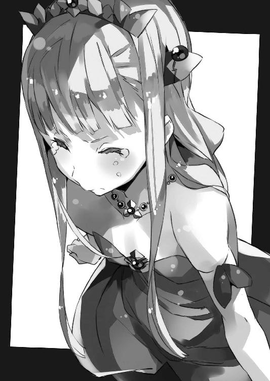
要するに美埜里さんが側にいたので、あれは僕・加納慎一の独断ではなく、自衛隊の、対災害活動の範囲内である、と判断することで、僕への処罰を回避してくれたらしい。
安堵の溜め息をつく僕。
しかし──
「ただ保管について、少しばかり検討せねばいかんな。いかに陛下のお気に入りとはいえ、保管庫から安易に物を持ち出されては、たまったものではない」
そう告げるガリウスの表情は厳しい。
今回は見逃すが、二度目はないぞ、ということらしかった。
はい。重々承知しております。
「──ちなみに」
と次に口を開いたのはザハール宰相だった。
「あの後の調査で、精霊の数が激減した理由が分かりました」
「え？ 本当？」
聞き返す僕に、ザハール宰相は大きく頷いた。
「どうも一部の精霊が向こう側に流れ出していたらしく」
「向こう側？」
「汝らの世界じゃ」
ペトラルカがごしごしと顔を擦りながら言った。
「チョウクウカンツウロ、だったか？」
「──！」
驚きに絶句する僕。
隣を見れば──美埜里さんや光流さんも同じく驚いているようだった。
もっとも『やっぱり』という気持ちもあって──
「あれを通じて汝らの世界に、魔力や精霊が流出しておったということじゃ。考えてみれば汝らの世界には魔法はないのであろう？ ならば開きっぱなしの穴から、流れ出ても不思議ではない」
「それは──」
でもそうなるとやっぱり、超空間通路って塞がないといけないのでは。
でも塞がれちゃうと行き来はできなくなるわけで──というかそもそもあれ、塞げるようなものなのだろうか。原理も分かってないみたいだし。
「これ以上、流出せぬよう、一度出入り口を閉じた。まずはこれで問題なかろう」
「閉じた、って......」
それってつまり、エルダントと日本を行き来できないってこと？
え？ 本当に!? いや、覚悟はしてたけどさ......!?
「ああ......」
僕の顔が強張ったのを見て、ペトラルカが首を左右に振った。
「一時的にじゃ」
「え？」
「穴に蓋を付けただけじゃ。魔力の流出はそれで防ぐことができる。考えてみれば今まで適当に過ぎた。穴の側には柵を作り、見張りの小屋を置く程度であったが、今後はきちんとした建物を建てて、管理せねばな」
ペトラルカとザハール宰相が言うには、今回は応急処置で、魔法による『空気の蓋』みたいなものを作って塞いでいるらしいけど──今後は、魔力そのものの流出を遮断する、物体としての蓋、いや門を作って設置するらしい。
実を言えば、なんか魔力って、壁越しにでも浸透するようなモノかと勝手に僕は思っていた。いろいろな作品ではそんなふうに描かれていることも多かったし。
でも考えてみれば、精霊を閉じ込めたランプとか、ロロンの持っていた魔力ボンベとか、あるいは〈駆逐する炎〉とか──実例は幾つもあって、魔力そのものを遮断する方法はこのエルダントに確固たる技術として存在するのだ。
ならばその流出も防ぐことはできる。
今後はあんな厄介な現象は起きない──ということか。
「まずは一安心......ってこと？」
「うむ」
ペトラルカがまとめるように大きく頷く。
僕は安堵の溜め息を長々とついて──
「じゃからシンイチ、もう勝手なことはするなよ。良いな」
「はい......」
改めてペトラルカに睨まれ、身を竦めた。
さらに──数日後。
学校を終えた僕達は、エルダント城の、身代わり人形特訓の部屋に来ていた。
あの騒動の後、エルダント城はバタバタしていて、特訓をするのは久しぶりだったりする。そのため今日は、僕や美埜里さん、ミュセル、光流さん以外に、ロミルダとロイクも一緒だった。
ロロンはいつも通り十分前に部屋に来ていたらしく、やって来た僕達を出迎えてくれた。まあ、それに縛られちゃうのでないなら、自分で決めた規則を守るのは悪いことじゃない──と思う。たぶん。
さらに言えば、今日は公務の合間のペトラルカも部屋にいる。
「じゃあ始めようか」
僕の声を合図に、ロロンの練習が始まった。
まずは準備運動を兼ねて、ペトラルカが動くのと同じように、ペトラルカ人形を動かしてもらう。
違和感なく、むしろ鏡に映る像のように、ペトラルカ人形は滑らかに動いた。
......しかし問題はここからだ。
「じゃあ次は、ロロンだけお願いできる？」
「はい」
ロロンは頷いて──ペトラルカがよく見えるように立っていた壁際から、部屋の真ん中に移動する。
ペトラルカは僕の隣で待機。
部屋の中央には、僕達に囲まれるような形で、ペトラルカ人形とロロンが残される。
自分を落ち着かせようとしているのか、集中しようとしているのか、ロロンは──大きく深呼吸を一つ。それから両手をペトラルカフィギュアに向けて持ち上げると、ゆっくりと詠唱を始めた。
「──我は・土の長・岩の長・鉄の長・真なる言葉と・その権限を背に・我は命ず・仮初めなれど・我が命に従うべし（イア・マ・エス・レルー・フオ・エス・スラエ・ルレー・フオ・エス・コー・ルレー・フオ・ノリ・ズロウ・フオ・スルト・エス・シサブ・フオ・イテイロスア・イア・リウ・レドロ・テイ・シ・イラロプメツト・エシールプ・ウオロフ・イム・スレドロ）」
僕達が見ている前で、ゆっくりと、ペトラルカ人形が動き出す。
両手をだらりと下げた格好から、手を身体の前で重ね合わせるような、上品な立ち方へ。これは僕があらかじめ細かく指示した結果だ。だからまだ、ロロンは自分でペトラルカを理解して再現しているわけではない。
でも、お手本を機械的に真似ていただけのときとは、少し違う。
彼女も進歩しているということだ。
僕は首を傾げてペトラルカ人形を眺めながら──
「もうちょっと偉そうな立ち方できる？」
「偉そう......？」
ロロンが首を傾げる。
「そうだなあ......腕を組んで、右足も交差させて、少し前に出す感じで」
「偉そうとはなんじゃ、シンイチ」
僕の指示を聞いて、ペトラルカが不満そうな顔をする。
やっぱり自覚ないんですね、陛下。
「こういうのは誇張するくらいがいいんですよ、陛下」
光流さんがフォローを入れてくれた。感謝。
「むう......」
ペトラルカはまだ不服そうだったけれど、それ以上は文句を言うこともなく、壁際で成り行きを見守っていた。
「............」
ロロンが少し手を動かす。それに合わせてペトラルカフィギュアも立ち方を変えた。
腕を組んで。右足を交差するように前に出して。
ついでに相手を見下すように顎を少し引いて......
「おおっ......」
思わず僕は声を上げていた。
ペトラルカというお手本なしでロロンの動かす人形が、初めてペトラルカっぽく見えた気がする。
それは他のみんなも同じらしい。驚いたように目を丸くしている。
「そのまま歩いて椅子に座れる？」
「はい」
壁際に置いていた椅子を、ペトラルカ人形から少し離れた位置へ、僕は動かした。
椅子から僕が離れたのを確認してから、ロロンが人形を動かす。
（前はこうやって指示を出したとき、ロロンに泣かれたっけ......）
また泣かれたらどうしよう──と思ったけれど。
僕の心配を余所に、ペトラルカ人形は、少し澄ましたような感じで歩き出した。
モデルさんのように綺麗な足取りで椅子に近づくと、腰掛けて足を組む。微かに端を吊り上げるその唇からは、可愛らしくもわがままな台詞が今にも飛び出してきそうだ。
「......どうでしょうか」
ロロンが部屋にいる僕達に尋ねてくる。
「うん。よくできてる」
と僕が言い、他の皆も頷いた。
まだ完璧とは言えないし、事前に、事細かに指示を出した結果だけど──ペトラルカの行動をそっくりそのまま真似るのと違って、そこには、ロロンなりの解釈が介在する。
たとえば『もう少し偉そうに』とかいう部分。
姿勢を細かく指示はしたけれど、それでも微調整の部分はロロン任せだ。
「でもどうして急に......」
と首を傾げるのは光流さんだ。
「いろいろ考えたんです」
苦笑気味に、ロロンがそう答えた。
「シンイチ先生に言われて──いろいろ、考えて。私、こうしなきゃいけない、こうならないといけない。ずっとそう思ってました。そうしないと、取り返しのつかない失敗しちゃうんじゃないかって」
「............？」
顔を見合わせるロイクとロミルダ。
そういえばこの二人は、ロロンが杓子定規な行動ばかりする理由を聞いてなかったっけか。
「でもあのとき──勝手に持ち出した〈駆逐する炎〉のおかげでみんな助かりました。私、規則を掲げることで、それに従うことで、考えることから逃げてたんだなって──分かって」
そう言ってロロンは笑う。
その笑顔は──誰かの笑顔を真似て取り繕ったものではなく、彼女自身の内側から湧き出る、自然なものに見えた。
「そっか」
ロロンに笑顔を返して、僕は頷く。
「教わった動作を一通りしてみます。おかしなところがあれば、言ってください」
ロロンが言うと同時に、ペトラルカフィギュアが立ち上がる。
くるっとその場で一回転してみたり、ドレスの裾を摘まんでお辞儀をしてみたり。
「上手い上手い！」
滑らかに動くもう一人のペトラルカに、僕達は素直に喝采を送る。
褒められたことが嬉しかったのか、ペトラルカ人形が笑顔になる。そして、右手の甲を左の頰に添えて「おーっほっほっほ！」なんて高笑いをしてみせた。
「似てる！」
実際のペトラルカがそんなことしてるのを見たことはないけれど、なんだか実にそれらしい！ やっぱお嬢様キャラは、一度はこれをしとかないとね！
などと僕は思ったのだけれど。
「わ、妾はそんなこと言わん！」
僕の隣にいるペトラルカだけが、高笑いをする人形に、頰を膨らませて怒っていた。
「いや、でも似てるよ？」
「似とる似とらんの問題ではないわ！ もっと、その、上品な笑い方があるであろう！」
「そんな上品な笑い方してるペトラルカ、見たことあったっけ......？」
「シンイチ！」
首を傾げる僕を、ペトラルカが睨み上げる。
それから彼女は、ロロンの方に向き直ると──人差し指を突きつけながら言った。
「それからロロン、汝もじゃ！ このアホに言われたからといって、そのまま人形に演じさせる奴がおるか！」
「あ......も、申し訳ご......」
「明日からしばらく侍女として妾の側に仕えい！ シンイチ無しでも、もちろん妾が側におらずとも、汝が一人で、妾の真似ができるよう──よう妾の姿を見て覚えよ！ 良いな？」
「は、はい！」
慌てた様子でかくかくと頷くロロン。
まあこれは、実はあらかじめペトラルカにお願いしておいたことを、彼女が改めて口頭で命令してくれたに過ぎない。ロロンには、しばらくペトラルカの側で、彼女の人となりというか、性格を知ってもらうのが良いだろうという判断だ。
「......って」
言われてからしばらくして、言葉の意味が理解できたのだろう。
驚きの表情がロロンの顔に広がっていく。
「そのうえで、きちんと妾の人形、繰ってみせい！」
「はい！」
そう答えるロロンは嬉しそうだ。
以前はただ、それこそ機械的に仕事をしているといった様子で、感情すらあまり見えない状態だったのだけど......今は、この仕事をすることができて、嬉しい、という彼女の気持ちが傍目にもよく分かる。
僕の指示で再びペトラルカ人形が動き出す。
その動きはやはり滑らかで──
（ロロンの人形が、ペトラルカの負担を減らしてくれる日も、そう遠くないかな）
つん、と顎を上げ気味の姿勢で、見事なお嬢様歩きを披露する人形を眺めながら──僕はそんなふうに思った。
（つづく）
どうも、軽小説屋のです。
『アウトブレイク・カンパニー 萌える侵略者』八巻をお届けいたします。
今回はペトラルカが表紙であります。しかも二倍（なにが？）。
ちとここ数巻分、彼女が身動きしにくい話が続いたので、後々の事も考えて色々仕込んでみましたですよ。そしたら何がどうなったのか、こんな有り様に（口絵参照）！
某ニコ生の、立ち会いの直前。
某ファミレスで三者面談的に（著者・絵師・担当編集者）相談した際──
「ちと今回はミュセル分が少ないんですけど、大丈夫でしょうかねえ」
「いや、今回はこれでいいと思います」
と絵師ゆーげんさんの力強い断言の真意が見える様な気がします。ええ。
そういえばアニメです、アニメ。
このあとがきを書いている時点で第一話が放映され、第二話ももうすぐ、という状況であります（二〇一三年十月九日現在）。関係者特権で私は第二話も白盤（放映に先行して関係者に渡される映像データ）既に見ている訳ですが、監督の持ち味が十二分に出た代物になっております。
元々本作は、やたらめったら派手な戦闘シーンが毎回ある訳でもなく、セールスポイントとしては会話劇的な部分が多いんですが......これ、実はアニメでは難しいんですよね。監督や音響監督、声優さん、といった方々のセンスが多分に影響するので、理詰めで造りにくいというか。アニメはキャラの掛け合いの間の取り方を含め、良いバランスで成り立っている印象です。
ちなみにペトラルカと言えば、一話のラスト、慎一に皇帝陛下アッパーを食らわす場面がやたらによく動く上に可愛らしい（ゆーげん師もお勧め）ので、未視聴の方は是非。よくよく聴くと『中の人』である渕上さんのアドリブも中々に危険な物言いなので、そういう意味でも（笑）。
まあ作品内容が作品内容なので「いいのか？」的なネタが地味に満載されておりますので、注意して見ていただけると幸い。某作品、アニメの方を見てなかったので「ノーカン！ ノーカン！」と慎一が連呼している場面は最初、ネタが分からず「何事!?」とか思いましたが。
第四話辺りではガリウス役の三木眞一郎氏の演技も、いい意味で壊れてるので、必見でございまする。四話のアフレコにはたまたま、本作のアシスタントをしている弟子と一緒に立ち会ったのですが、同じく立ち会いに来ていた漫画版作者の梶谷きりさんと共に、三人揃ってミキシンの演技に声を殺して（アフレコ中なので）笑っておりました。
私自身は、正直、三木さんとご一緒するのは三度目──過去の二回はどちらも主人公だっただけに、「推してはみたけど、いいのか、あの三木眞一郎にこんな役やらせて」と思っていたのですが。キャラを選ばぬベテランの演技力というものをよく見せていただきました（笑）。
そういえば、なんか、この『アウトブレイク～』の現場って関係者に見知った顔が幾つも並んでいて、「あれ？ これ何の現場だっけ？」とか一瞬、戸惑う事があります。
ｆｅｅｌ．のプロデューサーや音響監督は『ストレイト・ジャケット』で。
ポニーキャニオンのプロデューサーは『神曲奏界ポリフォニカ』で。
前記の三木さんに至っては『ストレイト・ジャケット』と『スクラップド・プリンセス』で。
何だか不思議な感じ。
ちなみに──
アニメに絡んでは、私は特典の短編、九巻特装版用のドラマＣＤ脚本などを担当させて貰っております。どちらも──特にドラマＣＤはアニメ絡みならではというか、本編ではまずやらない（というよりやれなかった）類の悪ノリをしておりますので、よろしければ。
──さて。
アニメ話はさておき、本編の方ですが。
以下、ネタバレ含むので未読の方は読まれぬが吉。
この八巻......オタクのネタ的にはアクション・フィギュアやドール──つまり『人形』なのですが、これを『動かす』のはむしろ、初音ミクのアレに代表されるＭＭＤソフトに近いのかなあ、などと考えて書いておりました。
３Ｄなんだから普通に動かせば、リアルになるじゃん──と考えるのはやはり初心者や部外者の浅慮で。
やはり、「元々のモノが異なる」ので、「命あるものが自然に動く」のと「命の無いものを命あるかの様に動かす」のでは、違うというか──「元々偽物なだけに、本物以上に見せるには、何らかのハッタリ（追加要素的な）が必要」なのだろうなあ、と思ったりします。
これはしばしば、小説内や、ツイッターの創作論などで私が言及する絵や小説の「リアリティ」にも近いんだろうなあ、とか。
ちなみに、一部、アニメ版や漫画版と設定的に矛盾する部分が出てきてます（〈駆逐する炎〉の処理、妖精系種族と魔力の関係など）が、これは私のミス──というより、本作の細かなプロットをアニメ版のシリーズ構成や、漫画版のネームより後で造っていたので、後出しで差異／矛盾が生じてしまったというのが本当のところです。
すんません。読者様＆関係者各位。
勿論、個々の作品内での矛盾にはなっていないので、おおらかな気持ちで見ていただけると幸い。
で、これからの話。
既に九巻、十巻のプロットは作ってあります（担当編集さんに提出＆許可済）。
上下巻になる予定ですが、なんだか、読者の方々がやけに気にしておられたあのキャラ（？）登場回です。ようやく。別にメインで出てくる訳ではありませんが。
内容的にも皆さんが期待しておられたであろう、アレですアレ。
乞う御期待。
ではでは、また、次の本で。
２０１３年10月９日
一郎
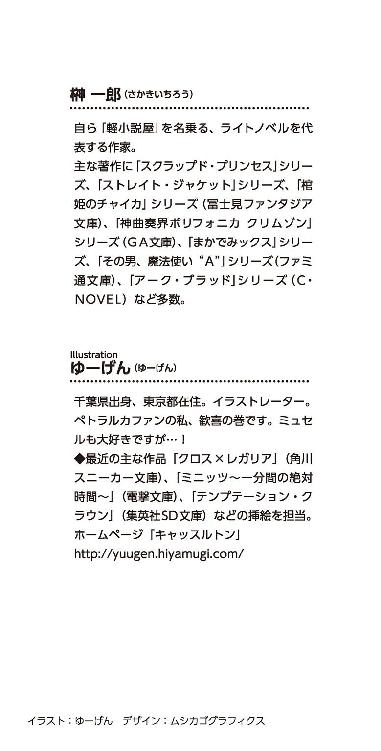
本作品は、二〇一三年一一月、小社より講談社ラノベ文庫として刊行されたものを電子書籍化したものです。
◎本電子書籍内の外部リンクに関して
ご利用の端末によっては、リンク機能が制限され正しく動作しない場合があります。また、リンク先のｗｅｂサイト、メールアドレス、電話番号は、事前のご連絡なく削除あるいは変更されることもございます。ご了承ください。
アウトブレイク・カンパニー
萌える侵略者８
二〇一三年一二月一日発行
一郎
©Ichiro Sakaki 2013
発行者 清水保雅
発行所 株式会社講談社
東京都文京区音羽二‐一二‐二一
〒112-8001
◎本電子書籍は、購入者個人の閲覧の目的のためにのみ、ファイルの閲覧が許諾されています。私的利用の範囲をこえる行為は著作権法上、禁じられています。
01